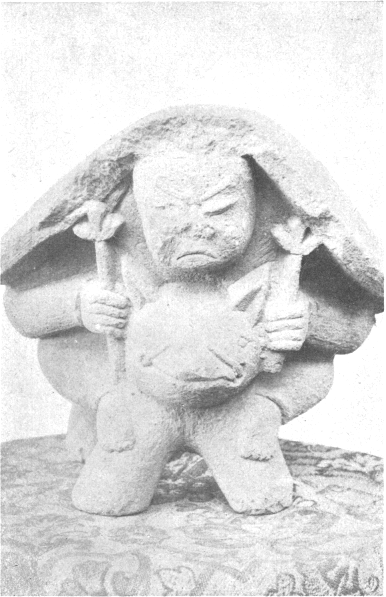
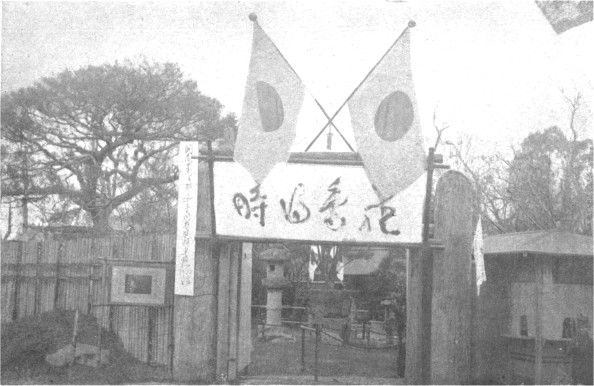

［＃ページの左右中央］
［＃改ページ］
寺子屋遺風の小学校時代
明治二年に政府の出した『府県施政順序』のうちに「小学校を設くる事」とあって、翌三年、東京府は初めて都下に小学校を六つ建てた。といっても校舎はすべて寺院で、芝増上寺地中の洞雲院、牛込の万昌院、本郷の本妙寺、浅草の西福寺、深川の長慶寺の六カ所。一方、在来の手習師匠約四百軒が五年の新学制に
土地の古株だけに私立の方には父祖三代の生徒もあり、諸事寺子屋の遺風を守って、老先生が教場の正面に頑張る。十五年出板の『高名校主自筆百人一首』というのを見ると、当時女の校長の小学校が数軒あった。神田の芳林、
これらの校舎は教場も琉球畳の大広間、溜塗の机や
公立でも満六歳から入学、数え年七つのわんぱくが小僧や女中におぶさって暴れながら通学、小使部屋はこれらの付添人で一ぱい、時間のしらせは廊下につるしたバン木を叩く、お寺時代の名残りらしい、唱歌はなし体操はなし、遊歩の時間はブランコと
丸の内竜ノ口に府立で出現
入口で下足を預り、竹の皮草履にはき替えて、長い廊下をぞろぞろ、左右の商店はそれぞれ店名や商品の額を掲げ、売子は若い衆と小僧さんで、職業婦人は無論発生しない時代、商品は総て正札ということこの時が始め、中央の休憩所には
この勧工場は後に民業となって明治二十年に芝公園へ移転、しばらく独占の形であったが、そのうち市内各所に小勧工場が出現、銀座一丁目の丸十、人形町大観音前、神田小川町等はその主なるもので、二十五、六年頃にはいずれも相当繁昌、続いて上野広小路に杉山勧工場が出来て、これは階段なしに三階まで上って行くのが新式、店数も多くて
然るに追い追い
お急ぎの方は歩いて下さい
自動車洪水の今日、ちょっと想像の出来ぬ明治初年の乗り物話、人力車もガラガラの金輪で、背中一面ぼたんに唐獅子などの絵を描いたのも一、二度は乗った。普通は粗末な黒塗りで一人乗りと合箱、芸者と合乗りなどの図々しいのもあって、当時「合乗り幌かけ、テケレッツノパア」と唄ったくらい。
追い追い改良、つやのよい黒塗り金紋、ひき子も黒の
乗合馬車、俗に円太郎は一層難物、浅草千里軒の営業、雷門前に
明治十五年に鉄道馬車が新橋から日本橋まで開通、二頭立てで深紅の車体に赤ビロードの腰掛いとも華やかで、わざわざ用もないに乗って見たくらい、追い追い延長すると共に、これが曲り角でちょいちょい脱線、お急ぎの方はお歩き下さいと来る。馬の小便で線路はぐちゃつく、臭気はひどい、沿道は大閉口。
草双紙から活版本の誕生時代
双子の着物に盲縞の前かけ、己が背よりも高く細長い風呂敷包みを背負い込んで古風な貸本屋が、我々の家へも回って来たのは明治十五、六年まで。悠々と茶の間へ坐りこんで面白おかしくお家騒動や仇討物の荒筋を説明、お約束の封切と称する新刊物を始め、相手のお好みを狙って草双紙や読み本を、二、三種ずつ置いて行く。これが舟板べいの妾宅や花柳界、大店の奥向など当時の有閑マダムを上得意にしてちょっとオツな商売。
稗史小説も追い追い明治物が新刊され、幼稚な石版画のボール表紙も目新しく、安物の兎屋本を始め、大川屋、辻岡、文永閣、共隆社、鶴声堂あたりの出版元から
明治になって合巻風の草双紙を初めて活版本にしたのは高畠藍泉の『巷説児手柏』、十二年に京橋弥左衛門町の文永閣から出版、以来続々活版本の新刊、貸本屋向きは通俗の講談速記や探偵実話などで、五寸釘寅吉やピストル強盗の類に人気集中、薄汚れた厚紙の上表紙をつけたこれらの貸本は引っ張りだこで借りて行く。
当時上野以外に図書館もない、随って学術参考書専門の貸本店も、神田本郷には数軒あった。学生相手に教科書や参考書、あらかじめ若干の保証金をいれておいて、返せば借覧料を差し引いてくれる便利な簡易図書館、名は忘れたが小川町五十稲荷の後ろにあった貸本屋は、この種の大店ですこぶる繁昌、二十二、三年頃には我々も足繁く通ったものだ。
滅法高かった草花の種子
朝顔や秋草に交って西洋草花がぽつぽつ売りだされたのは明治二十年頃、それから四、五年の後までは、温室など、小石川の植物園にあったほか、民間には
細い幹で五間ぐらいの長さある電信木や、額になった大コウモリ蘭などを始め、ベコニヤ、シネラリヤ、ホクシヤの如き今日平凡の洋花、当時は色とりどりの美しさに驚異の目を見張って大いに珍しがったものだ。そこで私も感歎のあまり小さい温室を設ける気になって、約十坪の地を三尺掘り下げ、石造にして、
然るに試験して見ると、汽缶は十二分に沸き立ちながら、鉄管へは熱湯少しも通ぜず、夜通し焚いても依然温度上らず、こんな筈ではなかったがと、汽缶職工を責めて幾度改良しても、最初の設計を誤ったため結局大失敗、そのうち春も三月となってもう温室も間に合わず、それでも牡丹、藤、海棠など収容し、
当時は入十でも草花の種子を外国からわざわざ取り寄せたというくらいで、凡てが滅法界のお値段、少々分けてもらうつもりで聞いてみると、同家の主人
ランプや瓦斯の光った頃
丸髷美人の前に朱塗りの行灯、こうした浮世絵風俗がぽつぽつ開化の石油ランプに入れ代ったのは明治の十年前後、一般の普及は二十年代、その頃でも
最初のランプは舶来品の金属製、十一、二年頃大阪のガラス会社で初めて和製のガラスランプ、石油壺の底に英字でオーサカとあっても、これは舶来ですとすましたもの、ホヤはネジ止めと差込みの二種、小型の二分しんから三分、五分、八分まで、丸しんはずっと高級で燭台形などお座敷用、大抵は鉄の輪へ載せる釣ランプ、四方ガラスの箱ランプ、あるいは台付の置ランプ等で、書生さんの引越しには荷物車の後から、台ランプを後生大事に御本人が持って行くことにきまっている。
そこで街の灯だが、これは明治八年初めて京橋から万世橋、常盤橋から浅草橋の大通りへ点灯、鋳鉄の柱に角形の
軒灯もそばや式の行灯時代が去って、十五、六年頃から角形の軒ランプ、二十年頃、柳原に点灯会社ができて市中各戸の点灯を一手に請負い、場末までも行きわたって大路小路は軒並みの角形ランプ、おかげで横町の溝へも落ちず、夜のちまたも往来安全、これもまた会社の人夫が
無邪気な学生気質
大学が東京に一つという明治の初期には中学の数も
当時の中学では制服や制帽は有名無実で、大抵はカスリや
漢学と違って英語の字書には困った。有名な薩摩辞書など高価でとても買えぬ。仕方なしに開拓使板という横本和紙刷の辞書、厚さ大福帳の如きものが当時二円五十銭、わざわざ日本橋の須原屋へ行って買ってきたが、後には友達どもが鼻紙に使ってしまった。教科書は最初がウィルソンの第一読本、「猿が手を持つ、蟻がスネを持つ」という文句で有名、間もなくナショナル読本が来て舶来だから美しいのに目を丸くした。
体操とくると振るっている。もちろん初期のことで服装もそのまま両袖を結んだり、
テーブルの下をのぞきたがる
家庭趣味からバーやカフエーへ進出して、物凄く普及した蓄音機の日本へ初めて渡ったのは、今より約四十年前、明治二十五年頃のことで、場所は浅草公園、震災で焼けた奥山閣の広間。
もちろん円盤式にあらず、径二寸長さ五寸ばかりの蝋管の音譜を機械の円筒へはめ、ダイヤの針ですりつつ、回転するに随って発声するのを聴診器のようなゴム管を耳にはさんで聴くのである。後年、縁日などに出ていたあれである。それは粗末な和製の機械だった。
ところが音譜はみな西洋の唄と音楽ばかりでヤンヤとこない。そこで日本向きの
次の音曲は元山谷で鳴らした老練のおばさん、大すましで
最後に
九段から上野、池上時代
近年またまた盛んな競馬、その初期時代は真の競走一方で面白かった。横浜根岸は無論
今の大鳥居から大村卿銅像を中心に、社前の道路あたりまで周囲一帯に楕円形の馬場、競馬は大祭ごとに三日間ぐらい挙行、もちろん観覧は随意で、物珍しさに立木まで鈴
十七年に共同競馬会社が起って、上野不忍池畔に春秋二季の催し、江戸名所不忍池の風致も馬場の
収支償わずとあって二十三、四年頃、上野は中止、以来競馬の沙汰もなかったが、三十九年の秋、馬匹改良会の後援で加納子爵が会長となり池上の大競馬場落成、初めて馬券の売出しが呼び物、賭博気分で恐ろしい人出、大森の駅を出ると無数の群衆と数百台の人力車で身動きもならぬ混雑、私も五、六人の車夫に車へ担ぎ上げられて池上まで否応なし、競馬場では馬券の外にガラの売場、十二、三の窓口に血眼の連中が押し寄せて勝敗ごとに凄い場面、これが第二期の競馬狂時代。
奥山見物の田舎者相手
写真界の幼稚時代、どういう関係か、江崎、北庭を初め写真屋が、今の三区五区、観音裏から花屋敷横丁に軒を並べて二十余軒、もっともその間に茶店に楊弓店も交っていたが、まず大体は写真屋街、右二軒の先駆者をはじめ、岸尾、渡辺松林堂、谷、松崎など一流二流、それ以下が例の引っ張りを置いて客を呼ぶ。
煉瓦造りの江崎は別として他はペンキ塗りの洋風
この種の門並写真屋は、表に人が立つと引っ張りの男がたちまち暖簾の陰から現われて「一枚お
さすがに商売、田舎者よりは東京の客にそれぞれお馴染もできて、二十五、六年頃には市中の写真師も殖えたが、観音様参詣のついでに子供でも撮そうと家族連れの上種もついて、これらの写真業も公園名物の一つに数えられ、それ相当の繁昌は見せたものの、追い追い優秀の企業も多くなり、同時に公園遊楽の人種も変って、時勢の淘汰は免れがたく、江崎ほか数軒の大店を残して他はちりぢり。
並びにカフエー喫茶店のこと
カフエーやバーの進出は凄いものだが、その元祖ともいうべきは明治の初年開業した銀座の函館屋、これが店頭で洋酒を飲ませるスタンドの始め、銀座といっても尾張町の西側、三間間口の店に細長いスタンド、左右の棚には奥までいっぱいの洋酒の瓶、それも舶来の上等ばかり、まず高級のバーであった。
主人は私の見た三十年頃にはすでに六十前後、でっぷり肥った立派な老人、いつもチョッキ一枚で店頭に働く頑健ぶり、客はことごとく当時のインテリで、多くはヒゲのある洋服連中、抱え車を表に止めてドアもない明け放しの店内のイスに腰をすえる。主人はこれらの客を相手に一々みずから愉快げに接待していた光景は、全く西洋小説の口絵などに見る酒場そのまま、女給が呼び物の今のバーとは大違い。
そのころ浅草
降って三十年頃新橋際にビヤーホールの出現、開業当日は馬越恭平翁自身出馬して来賓に愛嬌を振りまいた。つづいて四十年ごろ日吉町にカフエー・プランタン、これがカフエーと名乗った始め、洋名の元祖、プランタンは洋画家松山省三氏の経営だけに新式の設備、文士や画家はもちろん、新橋あたりの綺麗どこが大分出入りした。
まもなく南鍋町にカフエー・パウリスタ、一杯五銭のブラジル・コーヒーに軽便料理で大受け、同じころ銀座に台湾喫茶店、これは美人の給仕女でウーロン茶に浮かされたが、多分「女給」のさきがけ、次に尾張町のカフエー・ライオン、大がかりで美人もうようよ、現代式の女給はこの方が元祖らしい。以来急激にカフエーの増加はどなたも御承知。
岩谷天狗の奇抜な赤馬車
平民に縁はないが、明治の顕官貴紳は黒塗り金紋の箱馬車、山高帽子の
外人客や新橋停車場への送り迎え、そのほか臨時用として貸馬車も相当繁昌、築地の川西商会が元祖で、後には築地馬車商会となったが、最初はとかく口の悪い東京ッ子、あれは貸馬車だぜとお里をあばくので、乗る人もなんとなく肩身が狭い。随って需要も少なかったが、追い追い便利を知ってくる。中にも上流向きの葬儀などには今日の自動車の格で箱馬車の連続、一方外人の観光客も殖え、三十年頃には帝国ホテルや築地のメトロなど専属の貸馬車を置いた。
その頃の話、
さて貸馬車繁昌の時代も三十六、七年頃が頂上で、その後は自動車に押されてポツポツ減少、四十年前後にはホテル専属のほか、数カ所の貸馬車業も閑散の体、しまいには全く姿を隠して、これらの古馬車は大抵地方の交通用に身売り、当時伊豆の修善寺温泉行きに、
自慢の馬は揃っていわく付き
野球もテニスもまだ芽生えなかった我々の青年時代は、
借馬だけに我々も尻馬に乗って出かけたのが神田
馬の方は心得たもので、こやつは素人だなとのそりのそり、二、三遍馬場を回ると、さっさと自分の厩舎の方へ勝手に引揚げ。
こうした借馬屋直伝の馬術も、少し慣れると早や一ぱしの乗馬家気取り、新調の乗馬ズボンに竹のむち、遠乗りでもしそうな姿、御成道の借馬屋などこういう連中が押しかけて、一時間二十銭の奮発で街頭へ進出。危ないもので今日の市中ではできぬ芸だ。つぎは猿若町、亭主自慢の馬が三頭、但し一頭は前脚を突く癖があり、一頭は塀や石垣へぴったり寄ってくっついたら引っ張っても動かぬ。他は時々傍目もふらずに突っ走る朝鮮の競馬上り。
ある時右の一頭を借り受け、スピードで団子坂へ菊人形の見物にただ一騎、先方へ乗りつけたが、近所に馬を預ける場所がなかったので、人力車預り所とある家に頼み、丸太の杭を打ってそれへ
丸ノ内の草原でお稽古
新式の自転車がポツポツ市中に見えたのは明治三十一、二年頃、最初の輸入品だけに価格も高く、英国製スイフトが二百円以上、米国製デートン号百五十円内外、名の知れぬ安物でも七、八十円、随って乗り手もハイカラの中年紳士が多く、実用半分のお慰み半分で、我々テク党を
そこで私も職業上の訪問に利用してみたい念願、幸い数寄屋橋内へ唐沢という知人が自転車屋を開業、さっそく一台借り込んで、今の府農工銀行裏にあたる、川岸へ通ずる道路で内々のお稽古。
当時丸の内はまだ大部分空地で草
ところが有楽町交番の若い巡査、これが自転車乗りを目の
その後、友人某も同所で稽古中、
荷足の早船から巡航船
まもなくこの荷足の競争者として現われたのが、巡航船、明治三十二、三年頃から新橋洲崎間を往復、例の石油発動機の小型船で、胴の間に薄べり、汚れた更紗の座蒲団を敷いて乗客は大あぐら、あるいは寝ながら講談本、艫の方で発動機の音ポコンポコン、これが三浦三崎の鰹船でなくて、かりにも東京の真中、新橋から出て銀座裏の三十間堀を通航する新式の交通機関なのだから笑わせる。
発着所は新橋を起点に、紀ノ国橋、永代、深川八幡前、洲崎という順序、当時の三十間堀川は水も汚なし底は浅し、満潮時には差支えないが、引潮と来ると舟が川底へ吸いついて、いくらポンポコ焦っても動かばこそ、そうなると舵手兼船長おおいに勇気を起して、ズボンを脱ぎ、川中へ飛び込んで、うんうん
そこで引潮の際は、逆に新橋からお浜沖へ出て永代へ直航、紀ノ国橋のお客は全部無駄足となる。こちらは好い心持にお浜沖へ出ると西風で波が高い。船は木の葉の如くも
意匠を凝らし合った年賀状
誰しも一時は
これが先駆となって、記念葉書は神社仏閣の祭祀法要にまで及ぼし、日露戦争の祝勝記念に至っていよいよ本格の大全盛、俄かに熱狂的流行となって市中に絵葉書屋の激増、いつも黒山の人だかり、戦勝記念の発行ごとに郵便局へ押し寄せる群衆は凄いほどで、中にも陸軍凱旋式記念の一枚は大した人気、各郵便局前は長蛇の列を作ったが、ついに神田万世橋郵便局では
同時に外国製のもの、趣味的のもの、一時に流行、当時同好者が集まって歌舞伎座の茶屋やまとに絵葉書交換会の催し、さっそく出席のつもりで案内状を見ると、なんとその一項に「出席者は一万枚以上所有者に限る」とあって我々文句なしにギャフン、いかにファンでも一万枚はと驚いたが世間は広い、そうとう出席者があったという話で、もう一遍驚かざるを得なかった。
新年絵葉書もまず三十六年以来で、その先駆者はやはり画家の方面、渡辺香涯、
東京名所に付物の珍姿
辻車の腰掛、茶店の床几、芝居の桟敷、そのほかお花見や
それもその筈、三、四十年前の流行だけに、赤毛布の言葉は残っても実際を見知らぬ人が多いわけ。当時の錦絵や石版画に、上野・浅草乃至泉岳寺の図など必ず赤毛布の三、五人を配して情景を示したもので、事実いたるところにのんびりした赤毛布姿が目についた。多くは近県や東北の人々で、最初は東京仕入れの自慢半分、寒さ凌ぎも兼帯で、
後には茶色や鼠の毛布も現われたが、最初はたいてい赤毛布で、これを二つに折って細紐を通し、マント式にすっぽり被る。我々には頼まれても出来ない芸だ。それで股引
もっともそのころ東京でも全身を包むような大きな肩掛けが、婦人の間に流行し、奥さん階級や御新造連が毛布ほどの奴を三角に折って着用、その恰好は赤毛布式と大差はないが、品物は遥かに上等で、初めは高価なものであったが、追い追い安物もできて、一般的に流行。随ってボロ隠しなど、悪口も出る。上の方から段々
搭乗中止で命拾いした曹長
ひやりとした話。飛行機時代から見れば問題でないが、時は日露役前の明治三十六年、アドバルーン宜しくの円形繋留気球が一進歩して、葉巻型の気球が初めて陸軍の御採用。その初飛揚が牛込の築城本部で実行、係員のほか出入禁止で前夜からガスの注入。
薄寒い十月はじめ、夜の十時からとの特別の案内。行って見ると灯火管制ではないが広場に暗闇で提灯がちらちら、その中で主任の徳永大尉と助手の大谷曹長が兵士を指揮して、ガスの機関にせっせと鉄くずを入れている。気球はへたへたと地上に寝そべって空腹を訴える。一時間、二時間、ガスははかばかしく発生しないので、時は経っても気球はぺしゃんこ、翌朝の飛揚おぼつかないので、係員は大いに気をもむ、暗闇にぼんやり見ている我輩も全くしんがつかれた。
元気な曹長の頑張るのを徳永大尉が、まあよせと遮る。曹長いささか不平の
古風な店構えにピッタリと
紺の
八百八町ザラにあった商売の定式看板では、砂糖屋が砂糖袋の形、
薬屋は自店特製の薬名を現わした金看板、呉服屋、大書店、葉茶屋、筆墨問屋などは一枚板の彫看板、菓子屋、小間物屋なども古い看板が自慢の一つで、これが土蔵造りや格子戸の店構えにピッタリ、新しい看板の文字は明治の書家では可亭、春洞、半嶺、晩稼、一六、鳴鶴等一流の諸先生が達筆を
洋品店を
新世相を語る風俗資料
滑稽洒脱の引札は平賀源内に始まり、京伝三馬に至ってますますメイ文を振った。その遺風で、明治時代も名家の執筆を乞うた引札が、割烹店や諸商店の手拭に添えて配られた。いずれも木版彩色いりの凝ったもので、宣伝効果もあったが、今見ても相当趣味のあるのが沢山、活版刷にしてもその印刷の稚拙で原始的な味わいが捨て難い。
本文の執筆は
伊東橋塘、河竹新七、幸堂得知の諸老も相当書いているが平々凡々。添画の方は、芳幾、輝松、玄魚、月耕など初期に属する。中期に及んで永井素岳が独り天下、引札以外新曲の
これらの引札類は今も
代々の屋号と店印し
商家で大切な
紺木綿に白抜きの屋号、中央にはヤマ一とかカネ三とかの店
長暖簾は割烹店、すし屋、そば屋その他の飲食店、あるいは男女雇人口入れの慶庵ぐらい、もっとも真田の縁を取った慶庵の暖簾などはあまりくぐり栄えのせぬ野暮な代物、転じて暖簾の屋号を見ると、大抵は先祖出身の国々、江戸名物の伊勢屋稲荷に犬の屎、その伊勢屋を筆頭に、近江屋、駿河屋、三河屋、相模屋、越前屋などはどこの町内にも見受けたくらい、東海道、東山道は大概揃っていたが、今はそれらも本名の何々商店と改まって、暖簾の数も減ったわけ。
暖簾が古いといえば老舗の自慢だが、実際の暖簾は一年ごとに染め替えて、正月には皆新しく紺の香を漂わす。ザラにある屋号でもこの暖簾を分けるのは商店の大切な問題、
大活劇村井のヴァジン事件
「タバコ屋でござい」と、荷箱を背負って売りに来たのは明治の初年、出入りの得意先へ上り込んで、主人や細君を相手に世間話をしながら悠々と商売。綺麗に帯封をして小判形にきっちり巻いた刻み煙草、小は半斤、大は一斤、
水戸の雲井は上物、これは厚紙で長方形に包み、十五匁二十匁の二種、まず
十七、八年頃からぼつぼつ舶来の両切が輸入、二十年頃に来たオールド、ピンヘッド、パイレートなど十本入り一函二銭五厘、後には三銭、紳士向きのカメオが六銭、もったいないほど安かったが、当時はカメオなど滅多に喫めなかった。三銭どこではその後スワン、ヴァニテーフェヤーなど種々現われたが、オールドやピンヘッドに喫煙界を先占されていずれも売れず、次は村井のヒーローが売りだされてようやく和製時代。
ヒーロー始め細巻サンライスなど二十四、五年頃は村井全盛、同時に口付煙草も岩谷の青天狗、金天狗、千葉の菊世界、紙巻の雲井、いずれも二十本五銭の競争、こうした巻煙草全盛の余波、二十九年に村井が売り出した両切ヴァジンの宣伝福引、何事か癪にさわって室町の同店へ群衆殺到、ぶち壊しの大活劇で店はメチャメチャ、景品の自転車は日本橋の川中へ投げ込むという騒ぎ。
ヒーローの本元も江戸ッ子の英雄には
掛取りは天秤棒でかつぎ回った
二十五枚ひとさしが二貫、即ち二十銭、
街の子たちは天保銭を貰うと威勢が違う。橋の袂や横町にあった番太郎、火の番かたわら駄菓子など売る家へ夢中で駆け付けて、さあなにから食おうと菓子箱を
蕎麦はモリ、カケ八厘が相場、湯銭も大人八厘、八百屋乾物屋にもひとやま一袋八厘の札が見え、縁日の玩具屋前通りは八厘、そのほか夏の氷水、ところ天、冬の甘酒、飴湯まで、たいていは天保本位、銅貨の一銭より大きいだけに、欲のない連中はこの方へ手を出したが、とうとう明治の十九年限りで通用禁止、その後は全く古銭扱いだが、今見るとよくもこんな無器用な恰好の銭を調法がって持ち歩いたものだとつくづく感心。
手品のような薬の調合振り
松本順、池田謙斎などの諸先生の出るまで、お医者はすべて漢方の世界、手前どもへ見えたのは小川先生といって、当時若手の代言人で令名ありし小川三千三氏のお父さん、お約束の黄八丈に黒のお羽織、供の男に薬箱、診療が済むと
それがまた鮮やかなもの、悠々と萌黄
いま一人は小川先生とは肌の違った村岡先生（村岡応東画伯の先考）、大の菊五郎びいきですこぶる通人、
そのうち追い追い洋式に押されて、明治十四、五年頃から漢方の先生はぽつぽつ引っ込む。浅草
それでも度胆をぬかれて見物
四十五年前、明治二十年の軍艦見物、しかも外国軍艦を見学した話ですが、海軍国の日本もその頃は至って貧弱、唯一の鋼鉄艦「扶桑」がようやく出来たばかり、それも僅かに三千トン、その時横浜へ入港した米国東洋艦隊というのが御同様の小艦で、旗艦は二千七百トンのオマハ、僚艦は二千五百トンのトレントン号、いずれも木骨鉄皮。
その司令官の少将夫妻に、某青年が渡米中お世話になったので、来朝を幸い父が右夫人を招待し、少将に太刀一
オマハへ着く。甲板には大砲四門、外に速射砲が二門、一分間に何十発と聞いてまず度胆を抜かれる。大砲の弾は径六、七寸の丸形で、甲板の昇降口の周囲にずらりと並ぶ。中甲板へ降りて明るい談話室へ通る、天井にはカナリヤの鳥籠が一つ。ところで意外に思ったのは、室内の羽目や士官室のとびらなどへ、ことごとく日本の婦人風俗が描いてあった。日傘の娘や、花見の美人などいろいろ。聞けば司令官の少将が大の日本好きで、特にこんど描かしたということ。
艦は小さいがよく整って水兵もみな綺麗。機関室まで巡覧して元の談話室へ戻ると相当疲れた。数名の士官と卓を囲んで鄭重な接待、贈り物の太刀の話から自分たちの指揮刀を抜いて見せる。極めて薄い刀身へ絵模様が現わしてある。切先を曲げると
唐木造りの芸術的建築
本所四ツ目の「シナ伝」で通った材木商、信濃屋こと丸山伝右衛門、明治の初年御用商人で仕上げた百万長者、その娘さんが黒田清隆伯の夫人、時めく勢いにまかせて邸内へ設けた四階の楼閣、唐木細工の
あまりの
建坪はさまで広くないが総て唐木造り、一階大広間の九尺床は目の覚めるような紅

信伝の豪奢
玄関から二階三階は、くどいからやめるが、全く金にあかした芸術的建築、ようやく話がついて私の父が引取り、二十二、三年頃これを浅草公園花やしきの構内へ移し、煉瓦の地下室を加えて五階建てに改築、奥山閣と命名して一般の観覧に供したが、果して評判よく、十二階より一足先に、金色の
震災以前のレコード
明暦以来、火事は江戸の花と言われたが、明治になっても相当火事早く、ことに神田ッ子などは年中新しい家に住まったくらい。風の強い晩には火事装束を枕元に揃えて寝る。スワというと女子供や老人は遠い親類へ逃げる、火は瞬く間に迫って来て、またかと言うほどちょいちょい焼けたなど、今日では嘘のようだ。
有名なのは十二年の暮、日本橋箔屋町から出て
ちょうどそれが夜中の二時、朝になって驚いた。火は既に東神田全部と日本橋区の半分を境に大川方面へ迫って来た。
風はますます烈しく、黒煙は天を蔽うて凄い。それでも川向うの火事と安心していると午前十時頃、火は烈風に煽られて大川を越して東両国の中村楼へ飛ぶ。正午頃には深川の大伽藍霊巌寺へ飛んだ。さあ大変と早鐘やスリバンの響きに狼狽の体、
霊巌寺の火はとうとう上木場へ飛んで、いよいよ目と鼻の間へやって来た。薪のような大きな火の子が空を舞う、子供たちは怖がってベソを掻く始末。せっかく深川へ来てまた焼けるのかと覚悟はしたが、幸い通り越して洲崎河岸へ飛び、弁天の社を残してここでも数十戸を焼き、夕刻鎮火。
まる一日の火事騒ぎ、火アシの早いのと飛火の多いので大火になったが、神田の火事に深川で焼けそこなうなど全く飛んだことだ。
多芸多能だった前田香雪翁
柳里恭は人に師たるの芸が十六あったというが、故前田香雪（健次郎）翁も多芸多能で、和歌、国学は家の業、書画鑑定は当時第一人者であった。茶道は石州流の皆伝、書道は一流の仮名の書手、そのほか武術にも長じ、剣道槍術馬術は師範格であったから、以上人に師たる芸、少なくとも八つ九つあったわけだ。
軟文学にも通じ、新聞小説の元祖は実にこの香雪翁であった。明治八年『東京絵入』に裁判種の殺人事件を続き物として綴ったのがそもそも始めで、その後みずから『絵入朝野』を起し、長篇小説『新形蒔絵護謨櫛』を載せた。
当時の流行品を取り入れた題名、これも好評を博し、春木座で上演した。新聞物上演の
背は高くないが痩せぎすの［＃「痩せぎすの」は底本では「痺せぎすの」］色の白い、極めて上品の老人、武術で鍛えた身体はどことなく締って
翁の歿したのは大正五年十二月、その一カ月ほど前、ある席で懐中から小冊子を取り出し「これは君にあげるつもりでようやく探しだした」とわざわざ恵まれたのは『宮詣り東のつと』という潮来の細見で狂歌人の絵本、しかも文久二年後の種彦求之と書入れがある。蔵書には富んでいられたが、この種のものまでと意外に思った。それも今は形見である。翁の美術界に尽した功績は申すまでもないが、一面こうした優しい親切の気性も忘れ難い。
［＃改丁］
［＃ページの左右中央］
［＃改ページ］
芝居の運動場へ小動物園
オッペケ
当時のハイカラ芸者、例の貞奴が一緒で拙宅へも突然のお入り、「どうです、新聞記者と見えますかね」といった調子。当分は戦争劇で当てるつもり、と抜け目のない作戦。その時宅に飼ってあった信州産の小猿を見て、「おお、いい猿ですな、顔つきが素敵だ」と大気に入り。あまり褒めるので「そんなに気に入ったら進上しようか」「いや、それは有難い」というわけで、とうとう約束。
翌日箱に入れて芳町の川上宅へ持って行くと、同人大喜び、「私は動物が大好きで、狸も一匹おります」という。見ると中庭に可愛らしい狸がつないである。若い朝鮮人のチャムナン（丁無南）というのが世話をしていた。さっそくチャム君を呼び出して件の猿を引き渡したが、此奴すこぶる気が荒いのでチャム君たちまち引っかかれた。
その明治二十九年の六月、三崎町の川上座が落成して開場間際、今度は「どこかに熊の子はありますまいか」と大真面目、これには弱った。
ところが、どこからか熊の子を手に入れ、例の小猿や狸と共に持ち込み、川上座の運動場へ小動物園を設けたので、子供連れの観客は大喜び、幕間にはこの方が大入り大繁昌、川上はさすがに奇抜な思い付きをする男であった。
この川上が戦争劇に当って二十七年七月、遂に檜舞台の歌舞伎座へ乗り込んで「威海衛陥落」その他の狂言で大当り。このとき用事あって同人を楽屋に訪れると、大した室に納まっている。これは団十郎の特別に建てた室で、床の間付きの八畳に次の間六畳という
川上さも得意気に「どうです、この室は。今まで他人に使わせなかったのを、今度私が懇願したらよろしいと言われて借り受けました」と大自慢。しかし団十郎が次興行に「新派にさんざん荒らされたから、あのままでは出られません」と、大変ツムジを曲げたそうだから、川上の自慢もどうやら当てにならない。
芝居茶屋とその頃の見連
芝居小屋が劇場と改まり、茶屋がなくなり、出方が引込み、女の子がエプロンで御案内、万事簡便はありがたいが、明治の芝居風景もまた格別。
芝居茶屋もブル階級には見得と便利と半分半分、身のまわりを一切預けて幕開きまでは座敷で一服、へい、明きます、と出方のお迎え、食事の世話からお手水の催促までうるさいほど行き届く。新富座には猿屋、梅りん、紀ノ清、武田屋、越前屋、菊岡、そのほか軒を並べた二階造り、狂言にちなむ暖簾の模様、ことに助六の時など両側へ桜を植えて青竹の手摺、花暖簾に青すだれ、ぼんぼりを
何々御連中様、と筆太に書いた紙札が茶屋の軒先に門並はられて、これも景気の一つ。魚がし、米屋町を筆頭に、よし町、新橋の花柳界、見巧者の六二連、水魚連、そのほか三升連、見連、松駒連といったような大連から町内の臨時連まで数知れず、多くは平土間に陣取ってカベス（菓子、弁当、鮨）のお当てがい、役者の手拭や花かんざしをもらって嬉しそう。よき時分に男衆や世話人が花道へ並んで、「へい、何々御連中さまお手を拝借」と号令、一同神妙に総じめのシャンシャンシャン、こんな空気も木挽町の初期時代で終り。
六二連といえば見巧者の随一、幹事の高須高燕、富田砂燕、梅素玄魚の三名が黒表紙の『評判記』を出したのは明治十一年から二十年まで。これが劇評の始まりで、役者の位付も載せ、旧式ながら権威のあったもの。この連中も平土間で総見、いつも小一近くにいる高須翁の白髪頭が目に立った。玄魚は是真風の絵をかき、初めて引幕に上品な花鳥の図画を現わした率先者、つづいて永井素岳氏も得意の彩筆を揮った。
古老政太夫が「諭告」のこと
東京の義太夫界は近年あまり振わぬが、明治三十年前後、即ち綾瀬太夫在世の頃までは、綾瀬はじめ播磨、津賀、生駒、つづいて女義の小清、素行、小土佐、綾之助など輩出し、そこへ大阪から越路（摂津大掾）、大隅、組太夫、長広、呂昇などの名流がおりおり上京、義太夫界は全盛であった。
その頃すでに隠退していたが、筑後掾正流の家元で、斯界の古老かつ義太夫の総取締であった竹本政太夫は、越路一派が例の美音を振りまわし、見台をたたいて伸び上るような身振りに、前受け一方の語り口。東京の連中も追い追いかぶれて来たので大いに憤慨し、取締の格をもってその不心得を戒めた警告文を発した。それは二十年頃のことである。
引札ぐらいの大きさ、四号活字で十五行ばかりの文章、まず厳めしく「諭告」と題し、義太夫の本分を述べて後、「追日悪弊盛に増長し、今に至っては見台上にて手踊同様に扇をもって面白く拍子を合せ種々形を崩して古き名人達の心も知らず長々敷勝手気儘に上手振を専一とし、軽業仕方噺に類せし醜態大阪表より発起し、女もこれに類し女子に有間敷上下を着し見苦しき事も不弁」うんぬんとずいぶん手厳しい。
この政太夫の三味線を勤めた野沢語助翁は、晩年西紺屋町に住み、玄人けいこのみであったが、翁の談に「政太夫は特に行儀の正しかった人で、見台に向ったら首から下は動かさず、語り口も古格を守っていましたが、常に流行の風を歎き、節を崩すものは越路、三味線を崩す者は団平といい、あれはその人に限る芸風で、他人の真似るべきことでない、と戒めていたものです」と、当時綾瀬はこの政太夫に私淑して行儀も正しく、語り口も枯淡の裏に何ともいえぬ独得の妙味があった。
古今の絶技山本東翁のこと
古今の絶技といわれた能狂言の山本東（先代東次郎）は大蔵流の家元で、全く飛び抜けた名人。眼の細い、鼻の大きい、
翁の晩年六十余歳の明治三十三年、芝の紅葉館でわが党の宴会、多数の参会者は能狂言などに趣味はないが、幹事の計らいでこの日の余興に東翁の狂言、一同なあんだとばかり、見ぬ前から馬鹿にして、碁を囲むやら、時局を論ずるやら、その内に膳が出て酒が始まる。もはや余興も手後れの形、幹事の面々気をもむばかり。
やがて狂言「萩大名」でシテの大名が東翁、例のふっくらとした調子で透る声、一言二言の詞があると一同オヤという顔付、萩見物の褒め言葉や当座の和歌を太郎冠者に教えられて、一向のみ込めぬ可笑し味など、追い追い佳境に進むと共に、いつか宴席の高話もぴったり止み、杯の手を休め、果ては一人立ち二人立ち、自席を立って皆余興席の前へ集まり、誰彼なしに総感服、ほんとうに技芸の力の素晴らしさを知った。
当時和泉流の家元山脇元清氏も東翁と違った味の渋い芸、容貌も畑に似合わぬ厳めしさ、上唇にきずがあって一層凄い。しかも舞台に上ると自然愛嬌が出て柔和に見え、人違いのする多年修養の功、晩年は病弱のため不遇に終ったが、斯界第一の故実家で門人にも、野間、小早川その他の
西川伊三郎と吉田国五郎
人形浄瑠璃は本場だけに大阪の文楽が一手占め、東京方は昔から振わなかった。しかし明治十五、六年頃には、初代西川伊三郎一座が人形町の定席に居付きの興行。
一方、吉田国五郎が各所の寄席を打ち回って、いずれも相当の人気を集めていた。この国五郎は一種の名人で腕もあったが、けれんも相当用いたもので、早替りや太夫のふところ抜けなど見物をあっといわせた。
東京生粋の人形浄瑠璃で文楽の向うを張ろうという計画、三十年頃神田の新声館に旗揚げした人形芝居がそれであった。太夫は綾瀬、播磨、岡、相生、柳適、祖太夫、花太夫、人形は吉田国五郎に二代目伊三郎の合併一座でまず総動員、狂言は「忠臣蔵」「吃又」「日向島」その他で大切りが「羽根のかむろ」。
この時の綾瀬の「日向島」に国五郎の景清は、まことに見もの聴きものであった。大切りの国五郎の「羽根のかむろ」は、左が重三郎で小さい人形を巧みに使い、羽根をつく間の所作など細かく行き届いて活けるが如く、こればかりは文楽でも見られぬと大評判、そのくせ大入りとも行かず確か二回限りで中止、人形は東京の水に合わぬと決った。
然るに三十五年八月文楽の名人桐竹紋十郎が上京して、明治座の興行は連日売切の盛況、この時も「日向島」に「野崎」、呼び物は先代萩の「御殿」と、初めての常磐津の「廓文章」吉田屋、これが当時の名人林中、文字兵衛、義太夫は全部東京で「御殿」は売りだしの伊達（今の土佐太夫）、美音で鳴らした時代とてもっとも好評、しかし稽古には紋十郎からだめの出通しで随分苦しんだとのこと、それに反して林中との申合せには双方ぴったり息が合って、一言も文句なしに楽屋でも不思議がったくらい。
二の替りも八重垣姫や「朝顔日記」で紋十郎得意の出し物、林中は「乗合船」でこれまた十八番、後にも先にも常磐津での人形はこの時ばかり、それでぴったり息の合うところは名人同士、全くよいものを見ておいたと今でも思いだされる。
艶物を恥かしがった加賀太夫
夏の夜の
路地の溝板の上で聴かせる新内は、真実たいして感心せぬが、寄席で有名の富士松紫朝、明治初年に鳴らした人で大柄の盲人、坊主頭に地味な被布、声も太く、三味線も太い、随っていきな新内というよりも少々義太夫がかった渋い語り口、曲弾きなども上手でまず名人格であった。
その後は女で鶴賀若辰、これも盲人だが全く新内らしいいきな
続いて二代目紫朝、これはなぜか柳家を名乗ったが先代風の語り口、御多分にもれぬ盲人だがなかなかの美声、一時は柳派の呼び物であった。
以上と前後して明治の中頃、おそまきながら売りだしたのが先代加賀太夫、同じ富士松でも紫朝畑とは違って、艶物が得意で一方「膝栗毛」のようなチャリも利く、新内の特色をふんだんに振りまわして、若い定連をぞくぞくさせた。「明烏」や「蘭蝶」は、もちろん聞き物だが、その弟の宮古太夫とかけ合いの「膝栗毛」がまた絶妙、第一この兄弟の風采が弥次さん喜多さんそっくり、晩年にはむしろこの種のチャリを得意にしていた。明治の末年ある宴会の席上、例の「明烏」を所望したら、加賀先生頭をかいて「実はもうこの年でああいう艶物は恥かしくって語れませんや、どうか赤坂か市子で御勘弁を」という。名人のくせにと争うたが、当人はこれが本音ですと、とうとう市子の口寄せ。
名人ぞろい・明治の講談界
講談落語と一口にいうが客種が違う。講談には毎晩通うような定連が多く、あらかじめこれら定連の席には別仕立ての座蒲団がずらり、昼席となるとまた閑人の昼寝の場所で煙草盆を枕にごろごろ、しかし釈師も明治中頃は名人株がそろっていて、定席の繁昌はどこも劣らず。
当時の巨頭桃川如燕、つるつる頭で赤ら顔の
一方の大看板は松林伯円、木挽町六丁目にいた頃、神道の権大講義とあって、なかなかの気位、ところが義賊物で売り込んだおかげに泥坊伯円などといわれ、晩年は大いに
芸よりも鼻息の強かったのは五明楼玉輔、客が皮肉な評言を飛ばすと「なにっ、もう一度いって見ろ、お前にはおれの話は解らねえ」とむきになってタンカ、昼席で寝転ぶ客が多いと釈台をポンポンたたき、「寝ながら講談を聞くとは以ての外、どなたも起きさっせえ」。客は驚いて皆むくむく。
ヘラヘラ坊や名代の円太郎
素話で持ち切れず、苦しまぎれの珍芸で、明治中期の落語界に当りを取った顔触れを一々ここに首実検。
お早いところで十三、四年頃、初代談志の郭巨のかま掘り、羽織を後ろ前に着て手ぬぐいを頭へくるくる、即席唐人のこしらえで高座をのそのそ、なにかいってはテケレッツのパアをつける、座蒲団を二つ折り、子供のつもりで丁寧に抱え、これが郭巨の細君で泣きながらテケレッツのパア、大抵は腹をかかえた。
同じ頃ヘラヘラ坊万橘、赤い手拭いで頬かぶり、
後年、二代目談志が郭巨、花山文の二代目万橘がこのヘラヘラを復活したが、共に初代の半分も受けず、おつぎは例の円太郎で三遊派の人気者。
でっぷり肥った大男、色の白い眼の細い童顔の愛嬌男、話はたいてい権助の出る落語でごまかし、懐中より真鍮のラッパ、お婆さんあぶないとプウプウ、手綱取る手つきでキュッキュッといいながらまたプウプウ。これが評判になって結局、円太郎馬車と今に通用。つづいて円遊のステテコ、「ひょうたんばかりが浮き物か、わたしもこの頃浮いて来た、サッサ浮いた浮いた、ステテコステテコ」尻ッぱしょりの半股引、変妙な手つきで向う脛をたたいたその半股引が、今はステテコで通っている、ともかく一時は大人気。
二十四、五年ごろ大阪から来た徳永里朝の「縁かいな」、これは本芸だがたちまち流行、花柳界はもちろん満都の人気集中、盲目の水々しい大坊主、紫の被布など着て少々いや味だが芸は立派なもの、人気中に退いて新橋で琴三味線小唄の師匠、時代ばなれの「徳永検校」と記した軒ランプ、このほか二流どこで朝枝の
釈師落語家合同の珍劇
珍妙で喜ばれた落語家芝居も、ようやく鼻についた明治二十五年の八月、春木座に催した釈師、落語家合同の大一座は最も珍。
釈界の大立者松林伯円とその一党に、例の英人ブラックや三遊派の花遊その他、狂言は「雪中梅」「本朝二十四孝」「鈴ヶ森の長兵衛」だが、役々いずれも変り種でそれが大真面目に、これ見てくれ。
「雪中梅」はお手の物で本職以上だが、問題は中幕の「十種香」、当時売り込んだ伯知の濡衣、自慢の長髯を羽二重で包んだ二重
つぎの「鈴ヶ森」も相当なもの、伯知の権八が例の二重頤の好若衆で、足弱の花遊を頭の雲助連と鮮やかに大立回り、とど追い散らしてほっと息、そこへ
当時私は生人形の名人初代安本亀八翁と共に、この珍劇を見物して二人相談の上、奥庭の八重垣と鈴ヶ森の場面とを、その年の菊人形に造り、浅草花屋敷の秋の景物にしたが、その時亀八が細工中の似顔を、当の伯円が見て「僕の鼻だってこれでは低過ぎる」と抗議、亀八翁承知せず、いや実物通りだとわざわざ物差を持ち出し、嫌がる伯円の鼻の先へ当てて丁寧に高さを計り、「それこの通りたった二分しかない」。
三題ばなしや軽口流行の頃
安永天明時代の軽口話、文化文政の三題ばなしや口上茶番、その余波を受けて明治の初年には折々この会が催され、芳幾、採菊、黙阿弥、円朝、菫坡の諸老が肝いりで、会員もおいおい殖え、番付や評判記も出て相当発展。中にも黙阿弥翁はいつも高点で、番付にも横綱の地位は動かなかった。
当年の産物として三題ばなしの「魚屋茶碗」、十題ばなしの「霜夜鐘」は翁の名狂言として今も舞台に上る傑作。
次に行司格の西田菫坡老は雑俳の名人、ことに記憶がよく「八犬伝」の名文句は大抵そらんじていて、その抜読みの専売、一字一句も間違わなかったという。口上茶番や遊食会など江戸ッ子の残党が大いに智恵を絞ったもので、
降って二十二、三年頃にはだいぶ若手の後継者が現われて、関根黙庵、片山友彦、堀野文禄など
これが一部三銭五厘と半ぱのついた定価も珍だが、おりおり載せた紅葉新作の小話はなおさら珍物。
藁兵衛君その後いよいよ本気になって、文禄堂という書店を開業、やはり安永天明の小話を集めた『滑稽類纂』を出版、軽口本紹介の先駆となった。
同時に
和やかだった寄席気分
秀逸は先代左楽の「オットセイ」、丸顔で眼が小さく、禿げた頭の恰好がそっくり。次は先代雷門助六の「シャモ」、鼻から口
名人円朝も芝居噺を売物の若手時代には「太神楽」の綽名を取ったが、素噺に移ると共に、
その高弟の円喬が医者の代脈然たる風采から「代診」と呼ばれたのも久しいもの、柳派の朝枝が赤手拭で頬冠り、得意の
円遊門下の人気男小円遊の「若旦那」、
ところで女の芸人には一向綽名を奉らず、ただひとり、橘之助門下の
凄味が出ないで、もがいた円遊
百物語の催しは度胸試しとあって、昔はずいぶん行われたが今は絶えた。これはそんな殺風景でなく当時の大通連の百物語。明治二十五年十一月、浅草公園奥山閣の広間で条野採菊翁の主催、夕刻から集まった連中は三遊亭円朝、五代目菊五郎を始め、南新二、金谷竺仙、三遊亭円遊、西田菫坡その他で約十人。
床の間には円朝の持参した芳年筆の女幽霊の一幅、古
『粋興奇人伝』や、『三題ばなし』『楽屋評判記』などに名前の載っている連中、催主を始め老巧の人々、精々凄味を付けた怪談ぶりに一同怖毛をふるったかどうか、あいにくこちらは茶菓やなにかの世話で一向聞くを得なかったが、なんといっても玄人の円朝と、怪談は家の芸たる菊五郎の両人に落を取られ、他は笑声のもれるくらいで大した凄味はなかったらしい。
中途で茶の間へ逃げ込んで来た円遊、例の大きな鼻の頭の汗をふきながら、「驚いた驚いた、こんな苦しいことはねえ、こっちが凄味をつけてやっていても、肝腎のところでどっと来るのだからやり切れねえ、もう怪談は懲り懲りだ」と
いまも目に残るその至芸
明治の名優といえば団菊左に止めを刺すようだが、もちろん外にも名優がそろっていた。彦三郎を筆頭に、田之助、友右衛門、これは見ないが十一、二年以後は仲蔵、芝翫、半四郎、宗十郎（中村）、高助、我童、九蔵（後の団蔵）など一粒選りの大立物、全く旧劇は全盛、お蔭で今の芝居がいつまでも小さく見える。
彦旦那で通った坂東彦三郎、いおり看板に「兼」という字を書いたのは、明治になってこの優一人、何役でも立派にこなす名人でもあり、押しだしも無類。二世秀鶴の中村仲蔵すでに老年であったが、蝙蝠安は今にこの優の型、霜夜鐘の宗庵など悪の利くのは無論だが、最初の出の善人らしさ、この善悪の変りは独得。その著『一話一言』や『手前みそ』は、芝居道に取って好個の文献である。
美貌で鳴らした岩井半四郎、少々おでこの形だが、目もと口もと滴るばかりの愛嬌に艶色無類、晩年菊五郎のおその六三の狂言におその、水の垂れるような美しさ初々しさ、これが六十余歳の老優とは受け取れず、大口の寮の三千歳など見物わいわいという騒ぎ。
人気第一は中村芝翫、張りのある容貌、蝋引きのような眼、すばらしい顔立ち、従って「対面」の工藤や「助六」の意休、「八陣」の加藤など錦絵も及ばぬ立派さ、踊が名人で「道成寺」が当時随一、供奴や山神など気が乗るとハッハッというかけ声、ただ
大阪から来て、江戸ッ子をあっといわした中村宗十郎、曾我の狂言に団十郎と装束争い、水見舞の空っすねで古風を押し通したが、カタミ送りの十郎は無類の出来で団十郎の五郎もたじたじであった。最後に市川九蔵即ち六代目団蔵、団菊とは違った味の名人格、苦味走った容貌と、さびのある渋い音声、佐倉宗吾と仁木弾正は極め付、そのほか「馬たらい」の光秀、「千本」の権太、知盛などことごとく満都の好劇家を
田村成義翁の団菊比較論
代言人から転向して、劇界の飛将軍といわれた田村成義君、あれですこぶる敬神家、まだ銀座三丁目にいた明治二十七、八年時代、自宅の一室に大がかりの神棚を設け、八百万の神々を祭って毎朝必ず神前に畏まり、大声に
顔付はむずかしかったが、如才ない応対振り、元が元だけにすこぶる弁者で、ことに劇談はお手のもの、よく聞かされた団菊比較論「団十郎は自然に形が出来ています、見得をするにも他のように身体をきめてかからない、無造作ににらむその形がすでに立派なもの、菊五郎はこれと反対にまず身体をきめてからぎっくり見得をする、これも好い形だが自然には遠い、万事お芝居の格です、団菊の芸はすべてがこの調子」と、まずこんな工合に、菊五郎の顧問が団十郎を褒め上げる。
劇道以外にも抜け目がない。三十年頃の菊見時、「実は内職に一つやってみます」というのが大名行列の陶器人形、一寸ばかりの豆人形で先供の
その後、築地川岸へ金水館という旅館を開いたがこれも一時は相応の繁昌、商才にも富み、一方には『歌舞伎年代記』の続々篇を、丹念に編述して立派に世の中へだしたほど文才にも長け、桜痴居士と共に明治劇界の名物であった。
俳優は不平組の粒ぞろい
後年大歌舞伎に名を成した連中が、まだ若盛りで生きのいいところを見せていた。座頭は先代左団次の兄中村寿三郎、次は吉右衛門の父で当時の人気役者中村時蔵（後歌六）、「勧進帳」で宗家を破門された松尾猿之助（即ち市川段四郎）、後の仁左衛門老の片岡我当、売出しの尾上幸蔵、敵役の片岡蝶十郎（後市蔵）、同中村鷺助（後伝五郎）、
以上の顔触れで寿三郎は少々調子は甘かったが、由良之助でも松王でも貫目十分。時蔵は「安達三」の袖萩、「嫗山姥」の八重桐または「弥作の鎌腹」など変り物が得意。猿之助は「勧進帳」の度胸もあるだけ、時代、世話なんでも利く。我当はその頃から同座の客座にすわって大威張り。幸蔵は師匠張りのいなせな役。蝶十郎も後年の片市で歌舞伎座に老後の花。鷺助は敵役の憎みが利いて、舞台で客に撲られたくらい。女形のみんしは愁い顔だが上品で、雪の常磐や政岡など目に残っていた。今でもこんな座組の芝居が見たい。
焼失後は出方もちりぢり、寿三郎は左団次の久松座へ、猿之助は吾妻座へ、時蔵は春木座へ、幸蔵は師の菊五郎一座へ、我当、蝶十郎は大阪へ、これらが後にそろって東都劇界の大立者。その舞台を見るたびに、私は彼らの若かりし中島座時代を思いだし、人知らぬ感慨に耽ったものだ。
腕利きぞろい、小劇場の名優
面白かったのは明治時代の小劇場、いわゆる「どん帳」で通っていたが、これは引幕、花道、回舞台禁止で幕はことごとく
彦三郎写しといわれた雛輔は芸風から容貌まで坂彦そのまま、押出しの立派さは緞帳に惜しいくらい、松王や梅の由兵衛、野晒悟助、「三人吉三」の文里などは全く彦三のおもかげを伝えたものだ。雛輔を襲ったがさすがに嵐を遠慮して坂東で納まっていた。福円は大阪育ちで紙治や梅忠に鴈治郎の向うを張った、は大げさだが、当然たいした評判。菊十郎は五代目門下、後に歌仙と改名して師の一座へ戻ったが実事の上手。
柳盛座の木戸が二銭、随って二銭団洲といわれた又三郎（後に和好）、横顔などは団十郎そっくり、
一座の紅車は名代の臆面なし、菅丞相で片方のひげを落し、平気で見得を切る度胸。鷲の金太という粋な
黒田清隆伯と浪花亭駒吉
浪花節も昔はデロレン扱い、せいぜい場末の寄席で、御入来を振りまわしていたが、出方も相当なもんで、中には手ぬぐいの
当時の大官連は宴席の余興に長唄や清元を聴かせても、いっこう妙味不通、よんどころなくなにか田舎武士に解りのよいものをと首を捻った末、浪花節に目を付けたのが黒田清隆伯、あるとき駒吉を呼んだが来客に大受けとなって、以来浪花節に限るとの仰せ、これが羽織袴に出世したそもそものはじめ。以来ぽつぽつ紳士連にも招かれたが、晩年の駒吉は白髯を蓄えてすこぶる上品な老人に見受けられた。しかし明治の中頃まではやはり一般には下司なものと
そのうち追い追い若手の巧者も現われ、節や文句も改良されたが、本当に芸界の真中へ乗りだしたのは、例の桃中軒雲右衛門が日露戦争後の四十年に本郷の本郷座へ来てからのこと。義士伝を売り物に、節も調子も遥かに上品、しかも長髪を振り乱しての熱弁にたちまち人気を集めて、いままで見向きもせぬ紳士連が我も我もと押しかける騒ぎ、もっとも当時はすでに、虎丸、三叟、愛造、円車、重松などの面々が東京の真中、神田や銀座の寄席へ乗りだして向上の矢先、翌年は奈良丸も来て浪界いよいよ全盛。
雲の長髪は有名であったが、その後なにに感じてか五分がり頭になって雲入道と改名、見た目も貧弱で引き立たぬと思ったら、また一年ほどすると
故伊井蓉峰の旗挙げ芝居
書生芝居といった新派の草創時代。川上が中村座へ乗り込んで間のない明治二十四年十一月、こちらは浅草の吾妻座へ旗挙げした伊井蓉峰の済美会、よし町芸妓米八の千歳米坡と共に初めての男女合同劇、万事は依田学海翁の指導とあって、狂言も一番目に同翁の作「政党美談淑女操」。これがそもそも大変な代物。笛太鼓のしゃぎりはもちろん、合方の唄三味線など鳴物は一切禁止、俳優の台詞や仕草も劇的誇張はすべて避ける。いわば極端な写実劇で、平生のとおりの音声帯をそのままという実地芝居。こいつは凄い、おつだろうと早速のぞいて見て驚いた。ジリジリとベルが鳴って幕が開く。出る役も出る役も、ほとんど地声で気取りっけなしの受け渡し、声も通らねば筋も通らず、観客いずれも催眠術にかかってただうとうと、幕が閉まると大
およそ気のない芝居で、二番目は普通の鳴物入り。米坡の狂女が呼び物であったが三日目ぐらいから客はがた落ち、土間も桟敷もちらりほらり、一座焼芋を食って籠城したのはこの時だ。その辛抱の甲斐あって追い追い売り出し、二の替りはまず中位の景気、中幕の福島中佐単騎旅行の看板は、一座の水野孤芳（後の好美）が画家出身だけに彩筆を揮った油絵で、これは確かに見ものであった。
その後、伊井、水野は浅草座の川上一派へ加わり、日清事件の戦争劇で新派は日の出、ついに歌舞伎座へまで乗り出したが、この時なぜか仲間割れ。伊井、水野は脱退し、佐藤歳三と三人で伊佐水演劇と名乗り市村座へ陣取って以来、新派は群雄割拠の姿。当時御大の川上に仲間割れの仔細を聞くと、「なあに伊井は喜楽の尻押しで役不足が多く、水野は無性におしろいを塗りたがる、つまり一座の水に合いませんからね」だと。
団十郎好み、二葉町の大師匠
明治の落語界は三遊派と柳派に別れて負けず劣らず、その柳派の総帥であった談洲楼こと柳亭燕枝、一方の円朝と並んでの大看板。やはり芝居話から売りだして江戸前の人情話、高座は少し堅い方で、晩年にはちらほら立つ客もあったが、「島鵆沖白浪」などはこの人の専売。
劇界にも立ちいって幕内の通り者、特に団十郎のお気にいりで市川団柳楼と名乗り、桂文治の聞語楼、田辺南龍の岩井のん四郎そのほか柳三遊合同の大一座で、明治十四年の暮、本郷の春木座に
二葉町の大師匠といわれて本所
いつも薩摩大がすりの被布、四角ばった顔に
素読みのような酒屋のさわり
東都の義太夫に重きをなした初代綾瀬太夫、大阪で鶴沢友次郎や長門太夫に仕込まれ、上京後やかましい政太夫に私淑したので、少しもけれん当込みのない真面目の芸風。義太夫を浮かれ節と間違えた連中の気には入らずとも、真の義太夫好きは襟を正して聴いたものだ。
相撲好きで明治初年の花形力士相生と義兄弟、そこで相生太夫と名乗り、後相生が大関となって綾瀬川、自分も綾瀬と改名、昔の儒者然たる容貌で愛嬌はないが、上品な老人。語り物も渋いもの、皮肉なもの、「腰越の五斗」「宗玄の庵室」「日向島」「薄雪三人笑」など、選りによっての難曲ぞろい、越路でも大隅でもこの点は一目置いたろう。そのくせ「御殿」も「酒屋」も語る。これがまたさわりを売り物の太夫とは全然違った味を聞かせたので、わいわい連は変な顔。
「宗玄の庵室」は得意の一つ、恋と怨みに悶ゆる宗玄の言葉など天下一品、陰惨の気に充ちて、二、三日は綾瀬の宗玄調子が耳についたくらい、一言一句に襟元がぞッとするほど凄味があった。「薄雪三人笑」も難物の笑いの件が特に聴き物で真に迫り、当然芝居で見た諸名優の演技よりもこの人の方が遥かに感興が深かった。あたかも円朝の素話が芝居以上に面白かったのと同じ程度。
「日向島」は特にこの人の呼び物、しかし大物だけに寄席ではあまりださなかった。当時吉田国五郎の人形と双璧、名人団平以来まずこの人のもの。以上の語り物は綾瀬なき後再び聴くを得ないのは惜しいものだ。一方「酒屋」などを聴いても後半のさわり、待ってましたというところをさらさらと平々淡々、見台一つたたかずただの本を読むように語って行く。それでも聴衆は煙に巻かれてジーッと耳をすましたから妙だ。
芸妓連の総見にびっくり
根津遊廓が洲崎へ移ったのは明治二十一年。貸座敷が取り払われて急にがらんとした根津の街、絃歌の賑わいも夢となって火の消えたような有様。今と違って交通不便の場所柄、容易には復興せず、空しく一、二年を過ぎた二十三、四年頃、土地繁昌の一助にもと、引け跡の空地へできたのが小劇場の藍染座。
場所は旧大八幡楼（後に料理店神泉亭）の横を東へ曲って、一丁ばかり町並のそろわぬ原中の一軒建て、向う側にこれもただ一軒の座付茶屋、左右は草ぼうぼう、座の裏手は一面の麦畑に菜の花がところどころ。これでも開場当時は多少の客足も引いたが、足場は悪し、人気役者はいず、とかく不入りで興行も休みがち、毎夜頼まれて泊りに行った植木屋の話、「そろそろ寝ていて虫の声が聞かれます、誠に風流な芝居小屋ですよ」。
立ち腐れにもならず、この間三、四年相立ち申し候。当時川上一座と別れて一本立ちの伊井蓉峰、流れ流れてこの藍染座に一時籠城。狂言は十八番の呼び物「大発明」の通し、更生の意気で一座大車輪の上、例の黒幕喜楽の女将が必死の運動、さすがに芳町新橋はじめ花柳界の連中が毎日華々しく車を列ねて乗り込む騒ぎ、茶屋も出方も大まごまご、久し振りの賑わいと今までにない綺麗ぞろいの総見に、土地ッ子も驚きの眼を見張った。
東西の桟敷は右の連中、土間も高もがらり変った上等の客種は、この小屋初めての珍風景、麦畑も菜の花もけし飛んで案外の上景気、にも拘らず下町育ちの伊井は島流しにでも遭ったような浮かぬ顔。「なにしろ下町の小屋は八方塞がり、よんどころなく当座へ来ましたが、場所は遠し、道は悪し、お客様へ気の毒です。いや全く風流過ぎますよ」と一遍で参ったらしい。
播磨の毛剃と新呂の吃又
義太夫華やかなりし明治の中頃、綾瀬についで大看板の播磨太夫、赭ら顔の堂々たる体格、本場仕込みの芸ではないが生来の美音で声量たっぷり、わざと禁物の天ぷらを存分に食って高座へ上ったという。「十種香」や「御殿」で鳴らした外に、十八番は「毛剃」の柳町か元船、確かに明治デン界の名物。
団十郎と違った味で「毛剃」の九州弁はこの人独得の至芸、訛り工合から音声の扱い、太い調子、全く堂に入って聴衆を魅了した。それだけに自信も強い。あるとき烏森の寄席玉の井でこの「毛剃」を語ったが、なにが気に入らぬか客の内からしきりに弥次る。堪りかねた播磨、見台を押し退けてその客を睨みながら「木戸銭を返すから出てくれ」と大喝し、また悠々と語り出したには、さすがの弥次も度胆を抜かれた。
この人亡き後、この浄瑠璃は再び聴くを得ない。
次に中堅どこで、腕利きの新呂太夫、後に祖太夫、前受けはしなかったが熱演で聴かせた。唯一の呼び物は「反魂香」の
本芸よりも交際上手で相当顔を売った花太夫、ふと茶番気を出して大胆にも声色入りの珍義太夫、新声館の人形に忠臣蔵五段目の口、千崎を団十郎、勘平を菊五郎の声色で語ったには驚いた。さすがに鎗が出て声色は封じられたが、寄席やお座敷ではおりおり用いた。愛嬌のつもりが全くのぶち壊し、その後三十間堀へ富貴亭という料理屋を開いて相当繁昌、おかげでこの難物も引退となってデン通連やれ嬉しや。
謡曲文学の大和田建樹氏
鉄道唱歌で有名な国文の大家大和田建樹氏、謡曲文学も第一人者で、能と謡にかけては実際素人離れ、観世先々代清孝の門下、小鼓は大倉六蔵、太鼓は石井一斎など当時の名人に仕込まれ、明治二十年頃には早くも舞台に立った素人能の先輩、能評も猿丸太夫の名を以て聞え、まず能楽趣味の権化みたい。
体重二十二、三貫、堂々たる体格の持主で、丸々と肥った恰好は五月人形の金太郎そのまま、能見物の折など窮屈そうに思われたが、御主人泰然として膝も崩さず、謡曲で鍛えた行儀のよさ、痩せ男の我々がたちまちしびれを切らして大苦しみ、そのうち、こちらも先生の趣味にかぶれて謡の一つも呻ってみたくなり、同志三、四人申し合わせて、先生に謡曲の教授を乞うた。
好きな道とて学校勤めの忙しい中に一週二回、わざわざ知人宅まで出張。もちろん月謝など差し上げない。夕飯代りに鰻どん一つとお銚子一本、ペロリと平げてすぐにお稽古。謡は有名の美声で、体格相当に幅もあり量もあり、初心の我々蚊の鳴くような声と対照すこぶる妙。先生それにはお構いなく、さっさと謡って今日はここまでだ、と打ち切る。呑み込めぬ箇所をお尋ねすると「質問はこの次この次」と、まるで学校の生徒扱い。
この能楽の権化に対して、たまには芝居も御覧なさい、とあるとき歌舞伎座へ誘った。気の向かぬ顔でともかくも同行、狂言は忘れたが先生桟敷の前側へ端然と構えたものの、いつしかうとうとと居睡り、お銚子の加減かと思うとむしろ退屈の加減らしい、あまり居睡りが続くので聞いてみると、先生「イヤ面白いのでしょうが、私にはうるさい感じで時々目をつぶっているのだ」、たぶん先生の眼はお能専門に出来ていたらしい。
噂に高い山形県の名物
話は遠いが山形県鶴岡町の在方、黒川村は一村
一行の旅宿は神田の錦輝館、さっそく出かけて見ると太夫いずれも筋骨
いよいよ九段能楽堂の初日、舞台を見ると、シテ柱の前と笛座の横に黒塗りの燭台を置いて、五百目ばかりの大きな
次は高砂、シテは村内一流の名家、だが芸の方は一流どころか素人式、謡も型も観世らしいところは見えず、ただ、だらだらと運ぶ。シテ、ツレ共装束はよほど大切の品と見え、汗が垂れると演技中をも構わず、例の元締の髷の老人、大きなタオルを持ち出し、悠々と前へ回って装束を拭うなど東京では見られぬ図。これを土産に後は御免を蒙って引き下ったが、全く噂以上の珍品。
劇通を驚かした女団洲のこと
女優でない女役者、これは明治の産物で、お狂言師から出た岩井粂八、依田学海翁が天下絶妙と激称した名人、つづいて三崎座の一派など、一時は相当人気を集めて劇界を賑わした。ことに粂八は割引なしに芸もよし面もよし、女形は本役だが、立役、老役、若衆、半道なんでもこいの確かな腕前、九代目写しの「勧進帳」まで劇通を驚かした女団洲。
佐竹の浄瑠璃座から中芝居の本所寿座へ乗り出し、鶴枝、米花などという腕利きの一座を率いて多年の活躍。「道成寺」など所作事は天下一品、音声は少々上調子で感心せぬが、技芸抜群とあって団十郎の門下に列し市川九女八と改名、一時は大した勢い、女芝居も馬鹿にはできぬと見巧者も舌を巻いた。その後一座の米花はじめ腕利きに離れて、さすがの粂八も一人芝居の淋しさ、
女芝居専門の神田の三崎座が二十五、六年頃にできて、粂八は門下の笑燕（後に鯉昇）、桂二、桂升、多見吉等と共に出勤、山の手、下町の中流階級を呼んで大入り続き、後には赤坂の演伎座、中洲の真砂座などを打って回り、無人ながら粂八めあての好劇家に慕われていた。事実、当時の粂八ファンは男女ともに夢中の渇仰。だが晩年振わず、守住月華と生花の師匠みたいな名に改め、新派や文士劇にくさっていたのは勿体なし。
粂八去った後の三崎座は、笑燕、錦糸が大看板、新升、力枝、紀久八その他の若手で奮闘、あるとき錦糸の亭主が挨拶に来ているとも知らず、皮肉屋の伊東橋塘「女役者は縁日の金魚さ、集まったところは綺麗だが、一
（後節「明治女芝居と娘義太夫」参照）
義太夫と一中節の掛合
政客中の粋人大岡硯海（育造）先生、若いころ演説の練習に熱中、その声ならしに習ったという義太夫が、後には得意の隠し芸、手ほどきの師匠は判らぬが、明治二十五、六年頃には三味線の古老野沢語助翁について、演説以上に熱心のお稽古。
語助は明治初年の義太夫界の大御所竹本政太夫の三味線で鳴らした人、当時京橋西紺屋町に住んで
一方、大倉鶴彦男の一中節は当時有名の持芸、だが我々の耳には縁が遠い。然るに三十三年の春、どうした風の吹回しか、大岡さんの主催で鶴彦翁の一中を聴かせるとの御案内、場所は芝の紅葉館、聴き手はほんの内輪で、我々の先輩五、六人、ほかに同館の女中が総出でずらり、大広間の正面へ緋の
語り物はお得意の「陣屋」かと思うと、女義でお馴染の加賀見山の「長局」、女中連への御馳走らしかったが、さすがに叩き込んだ名調子、語助のいとと相まってしんみり聴かせ、女連は総泣き。つぎに一中と掛合で雪の常磐「関所の段」、大倉さんの常磐に三味線は有名のおひろ（都一広）、宗清は硯海太夫に語助、これで初めて多年の渇望を満たしたわけだが、大倉さんが両手を膝に首を振り振り、あの童顔を一層たわいなく嬉しそうに崩す工合、お年に似合わぬ艶々しい声柄。巧拙のわからぬ我々まで感涙という奴がほろほろ。
明治時代の特産物
明治の芸界をめぐる女性群と申せば、女役者と娘義太夫とのこの二つをまず時代の特産物として挙げることになり、今日では過去の芸術となって僅かにその名残りを芸界の一隅に止むるのみですが、明治中期における彼らの華やかな人気と、男子も及ばぬ努力とは、全く特筆に値する。その技芸から見ても、
女が女に扮するのが今の女優、然るに、女だてら勇敢にもあらゆる男役に扮して舞台に活躍した女役者の存在は、全く明治時代に限られた劇界の珍品でしょう。徳川の末期に一たび禁制となり、その後は踊りの師匠とかお狂言師とかに転向していたが、明治の初年、岩井
同優は旧幕の末、踊の師匠坂東美津代の［＃「坂東美津代の」はママ］門に入り桂八と名乗ったが、
粂八の団十郎写しはすでにこの時から始まっていた。狂言は一番目「苅萱」、中幕が「勧進帳」で、二番目は「お玉ヶ池の由来」とかいう世話物、これは一向頭に残っていないが苅萱も弁慶ももちろん団十郎で、顔の拵えから受け唇の工合、前のめりの恰好から足取り、よくも似せたものだ、と大抵は煙に捲かれた形。しかし本来が確かな伎倆が底に光っていての業ですから、
その後同座にしばらく居付いて、評判はますます高まってきた。最初は女芝居などと相手にしなかった劇評家さえ追い追い進んで観覧するという有様、依田学海、福地桜痴、幸堂得知の諸先生は特に肩を入れて粂八党の旗頭となり、なかんずく学海翁は得意の詩を作って、絶世の技天下比なしとまで持ち上げ、しまいに団十郎に説きて斡旋の結果、二十二年粂八は団十郎の門人となり、市川

女役者粂八 明治三十五、六年頃
然るに団門では小劇場の出勤を認めないし、例の「勧進帳」を無断で演じた
ここでちょっと粂八以外の立者を並べてみると、旗揚げ以来のワキ役たる坂東鶴枝は、花はないが実のある芸風、粂八の団十郎に対して左団次を張っていたがあまり人気はなかった。岩井米花は顔立ちもよく、これも左団次を時々用いたが、地芸もあるのでなかなかの評判もの。寿美八も立役として好い腕を持っていた。松本錦糸はその頃の新進でじみな芸風、三好屋（団蔵）写し。まずこんな工合で、団十郎あり、左団次あり、団蔵あり、下回りも達者揃いの大一座で、女の新富座といわれたのもこの時代である。
寿座はその後男優と入れ替り、九蔵、団升、鬼丸などという顔触れ。粂八はまた吾妻座その他を回ることになったのが二十四、五年頃の話。このとき芳町の芸者米八が
そのうち二十六年に神田の三崎座ができて女芝居専門の興行、粂八は寿座以来の一座を総動員で出勤し、再び花を咲かせることになったが、やがて鶴枝も米花も去って、錦糸、笑燕、桂升、桂二、多見吉などいう面々、さなきだに粂八ひとり図抜けていたのが、追い追い多年の道連れに別れて一座はがた落ち、さすがの粂八もよい芝居は打てなかったが、それでも一般の人気は落ちず、いつも大入りを続けていた。その頃の場代は、桟敷一間一円八十銭、平土間が一円二、三十銭、木戸はタッタ五銭か六銭、それで寿座時代には客種はよかったが、下町方面に限られていたのが、三崎座は場所がよい、神田の真中で山の手の客も呼べる。その上ほんとうの座付となって馴染の見連も殖え、しばらくは女天下すこぶる泰平であった。
然るに、とかくいざこざの多い芝居道、女世帯はまた男と違って嫉妬や
この笑燕はもともと岡本宮染といって、踊を売り物に寄席へ出て、妹の宮子とともに一時若い客に騒がれた女、これがまた団十郎式の顔立ちでいやに達者、後に市川権十郎の門に入り市川鯉昇と改名した。そのとき川崎屋が桟敷へ見物に来て、「どうも弟子の舞台を知らんでは済みませんから、ちょっと見に来ました」と膝も崩さず控えていたが、先生も辛い。錦糸は市川団升の門下で久しく粂八に揉まれただけに芸は確か、時代、世話共に行けるが、この人の縮屋新助は特に傑作で当時の劇評家も総感服、滅相な出来なりとか、芝居事とは思われずとか、大層に褒めちぎったものだ。丸顔で鼻ッピイでいっこう踏めないが、熊谷でも光秀でも立派にこなすこの座の大黒柱。
つぎに紀久八だが、これはそっぽ（容貌）で客を魅する方、粂八以来の器量よし。雪責の浦里や居守酒の夕秀など大向はわいわい、この座組で六、七年の間は女芝居掉尾の全盛を続けた。
一方粂八は、三崎座と別れてから赤坂の演伎座や中洲の真砂座を回っていたが、追い追い取る年ではあり、座組も淋しく、往年の人気も下火となり、ことに時代の波は民衆娯楽の方面にも容赦なく押し寄せて、新派の勃興や活動写真に蹴られ、さしもの粂八も往生して一座を解散、その名も守住月華と改めて、川上の新派へ加わったり、文士劇へ出たり、淋しい晩年を送っていた。同時に三崎座も四十年頃から下り坂となって、いつしか田舎回りの新派劇などと入れ替り、ついに劇界の一名物たる女歌舞伎も明治の末年で華やかな幕を閉じた。
しかし幕末から明治一代、女芝居の歴史そのものであった市川粂八の名は永遠に消えない。しかも技芸抜群、「道成寺」「山姥」を始め、八重垣姫、政岡、八重桐、朝顔なぞは男女ひっくるめての極め付き、「勧進帳」の弁慶で堂々と脅やかすかと思うと、「油屋」の善六で腹を抱えさせる。そのうえ弁天小僧で菊五郎、大川友右衛門で左団次、いわば団菊左を一身で使い分けるなど、全く古今にただ一人。これをふんだんに観ておいた私などは、いい時に生れたものだ。ところが本人に逢ってみると小柄な品のよい中婆さん。もっとも二十七、八年の頃だが、鼠小紋の紋付に白襟、黒繻子の丸帯かなにかで言葉付きもやさしく、これが弁慶や文覚で
その辺で、つぎは女義太夫。
タレ義太とか娘義太夫とかいえば安く聞えるが、正式にいえば女義太夫、これがまた明治の中頃には今から想像も及ばぬ全盛。若手の仇っぽいのが
ところで、明治十五、六年から二十三、四年頃の女義界は、東玉、京枝を大将として、三福（後の素行）、清花、小政、小住、小伝、花友などに綾之助、これが第一期。つづいて、小土佐、
その初期時代、東玉、京枝はすでに若手に語らせて、自分たちはイト専門、東玉は小作りのお婆さん、京枝は少々むずかしい顔つき。この人たちが語っていた時代までは肩衣というものを着けなかったが、どうも見た目が淋しいというので、男太夫のように肩衣を用い出したのは、そもそもこの京枝が始まり、ともいうし、三福、清花の両人が皮切りともいう、ともかくそれは明治十三年頃で、爾来、黒繻子や紫の華美な肩衣を着けて、一段と風情を添えることになった。
ところが、このことは義太夫界の問題となって男の方から槍が出た。それは二十二、三年頃のことで、当時の古老竹本政太夫は東都総取締の資格で「諭告」というものを発表し、一般の義太夫が古格を失い大阪の人気者流の風を学び、見台に向って伸び上ったり踊ったり、声を
そこで当時の花形の評判だが、もちろん
以上の面々は三絃の方も達者で、たいていは弾き語り。
綾之助についでの人気者であった竹本小土佐は、前にもいう如く名古屋の生れ、同市の女義杣吉、照吉などについて七、八歳の頃から義太夫の稽古、十一歳で照吉の一座に加わり、早くも高座に上って好評を博し、土佐太夫に知られてその門下となり、小土佐と名乗った。その後、大阪神戸等を回り、二十年二月土佐太夫と共に上京し、麹町の万長で初お目見得、師匠の前を語ってすこぶる好評、翌年たちまち真打となって小川亭の初看板、以来めきめき売り出したが、美人の上に愛嬌があり、高座で
当時小住はひと足先に大看板、門下の住八を住之助と改め、十三歳で真打に押し立て、師弟もろとも人気を呼んで一方のぱりぱり、そのころ女義太夫はすべて睦派と称する寄席の一派に属し、「五厘」という世話人があって、席の割振りをやっていた。随ってこの「五厘」はなかなか勢力があって、付け届けでも悪かったり機嫌を損じたりすると、人気があっても芸がよくても好い席へ回さない、というようなわけで出方は泣かされた。
利かぬ気の小住はこの「五厘」の不公平を憤慨して、ついに二十五、六年頃、小土佐をはじめ、清玉、鹿の子、鶴蝶等と共に断然反旗を翻し、正義派というのを起して睦派に対抗した。女義始まって以来の問題で、かなり斯界を騒がせたが。なにしろ一流の寄席は睦派に占められていたので、正義派は二流三流の席へしか出られぬことになったが、もちろん覚悟の上と頑張って贔屓連の同情を力に、この対抗は相当長く続いた。
その後の大看板といえばまず竹本
降って三十五、六年以後の花形というと、組太夫の弟子の組春、朝太夫門下の朝重、そのほか愛之助、新吉、一二三、八重子、京子、京駒、昇之助、昇菊などの面々で、これが明治の末年まで続いたが、追い追い下火となり、往年の人気は今やこうした夢物語。その間には大阪の長広や東猿が来たり、近くはおなじみの呂昇一座が時々上京して有楽座へ掛る。呂昇は例の美音と、素直で判りのよい語り口が東京ッ子にも大受けでいつも満員の盛況。その呂昇もすでに過去の人となって、東西共に女義界は
最後に当時の女義太夫の定席を挙げると、第一が茅場町の宮松、ここで看板を上げれば一流の真打という相場がきまる。つづいて神田の小川亭、鍋町の鶴仙、花川戸の東橋亭、両国の新柳亭、芝の琴平亭など一流の席で賑わったものだ。瀬戸物町の伊勢本、本郷の若竹なども一流組だが、時々色物と交代する。下谷の吹ぬき、牛込のわら店、和泉橋の和泉亭、麻布の福槌などは黒っぽい客が多かった。そのほか場末まで加えると二十何軒は女義太夫で占めていた。これが大抵は毎夜の客止め、お気の毒さま明晩お早く、と木戸で断られて、遅出の客はすごすご、山の手は書生さんの縄張りで例の
いちはやく高座前へ陣取って目あての女義を待ち構え、急所急所でどうするの連発、そのうえ人間の手の掌とは思われぬカンカン響く手拍子でサワリも何もめちゃめちゃ、簾が下りるとドヤドヤ退席してその女義の
（昭和八年五月）
明治芸界の追憶
明治芸界の三名人について、それぞれ直接の印象と、二、三、見聞の芸談とを記すことにする。
明治の芸界には幾多の名人上手がそろっていて、能界には宝生九郎、梅若実、桜間伴馬、梨園には団十郎、菊五郎、左団次、団蔵、そのほかの各方面とも、それぞれ名人級の人々に乏しくなかった。その中で折紙付きの名人といわれたのは、宝生九郎、九代目団十郎及び三遊亭円朝の三人であった。私は偶然それらの人々に接する機会を得て、当時会見した印象が残っている。それによって多少ともその人のおもかげを伝えたいと思うのである。
格式といい技能といい当時芸界最高の地位にあった宝生流宗家九郎翁は、全く名人の風格を備えた人であった。それだけ芸道にかけては厳格な態度を守っていて、翁の演能に対しては何人もえりを正して見物した。
翁は晩年深川平野町へ新築移転したが、その前ひさしく木場の吉永町に住んでいた。材木堀に沿うたあまり広くもない家であったが、立派な煉瓦の蔵がついていた。家重代の品物が納まっていたのであろう。私は芸談を聴く目的で翁を訪うた。そのころ私は同じ木場におったので、早朝訪問すると、すでに翁の朗々たる謡声が門外にまで響いていた。内弟子のけいこである。玄関の三畳に待っていると、やがて謡がやんで提煙草盆と長煙管を手にした翁が現われる。なにぶん狭いので失礼ですが、とそのままそこへ坐る。
背の高い痩形の老人、
「謡曲がいかに流行しても、それで能楽の隆盛ということは申されません。謡を習って、能を御覧になるのは、ただ謡の参考というに止まって真に能を味わう人は誠に少ない。能の位とか心持とか型とかいうものを一々見分けるにはやはり観方の御修業が要るのですが、お謡のけいこぐらいでは、まずそこまで観て下さるわけには参りません」といった調子で、少しも歯に衣着せず素人をこき下す。
翁はずっと以前から素人のけいこを断って、主筋たる徳川家と、かつて世話を受けた安田家一門のほかは一切けいこに応じないくらいである。そんな暇があれば玄人の教育にもっと努力せねばならぬ、という主張にもよるのであった。随って玄人の門弟たちにはずいぶん厳しく指導して少しも仮借しない。
「
翁の談は主として、能の真味、足の運び、地謡の苦心、謡の要素等にわたって有益な教訓であったが、謡の修業時代には毎朝舞台から橋がかりへ回って百ぺんずつ足の運びをけいこした。毎日となると百ぺんはずいぶん難儀でしたとの述懐。
またいわく、「能はなるたけ動かずにその心持を十分現わすという行き方ですから、その精神を味わわねばなりません。下手が動いたとて決して面白いものではない。早い話が団蔵の芝居などは、動かないでいて云うにいわれぬ妙味がありますからね。団十郎もその通り。私は菊五郎とは至って懇意にしておりますが、技芸上の苦心は同じことです」と、さすがに腹芸の家元だけあって一脈相通ずる。
翁の謡は実に朗々として、音声の立派さと息の強いしっかりしたところは、あのやせた人に不似合いである。もちろん名人のことであるから当然の話だが、翁に聞いてみると、「私はやせて腹が薄いですから、謡はかなり骨が折れます。ですから舞台に立つ時には、いつも小さい蒲団のようなものを腹へ当てて帯を締めます」と。名人にもそれだけの用意のあったことはちょっと素人の知らぬ話、その素人を相手にして二時間近くの芸談を聴かせてもらって同家を辞した。内弟子のけいこを中止して快く迎えられた翁の親切を私は深く感じた。
七十七歳の時、日本橋クラブに翁の喜寿祝賀会が盛大に催された。松本、野口両氏の番ばやしがあって、矢の倉福井楼での宴会。二百七十名の来会者が大広間に居並んだその正面に、黒紋付の羽織袴に端然と構えた翁の姿、さながら能面の如く気品ある容貌、今なお眼前に
仁木が得意の市川団蔵［＃「市川団蔵」は底本では「市川円蔵」］、ひさびさにてその仁木を演ず。相手の男之助が団十郎であった。床下、花道のスッポンからせり上って
むしろ小柄の方で舞台は大きい。いかな大柄の俳優も、団十郎の前へ出ては小さく見える。技芸の力と貫禄の重みである。音声は独特の名調子、晩年少しも衰えない。調子を張って騒がしからず、低めても隅まで透った。全く修練の力である。そのほか技芸上の話は世間様が御承知。
私がこの名人を茅ヶ崎の別荘へ訪問したのは明治三十五年（四年？）の夏、停車場から畑道を
回り縁の八畳の座敷へ通る。庭先には高さ二尺もある真鍮の金網をかけ、秋草を植え込んだ立派な虫籠が五つも並べてあった。ほどなく主人公の団十郎はじみな
私が釣のお話を伺いに出ましたというと、当時同優は持病の喘息の烈しい時で、挨拶よりも
「この通り持病でお話も致しかねるくらい、染五郎（今の幸四郎）がおればいろいろ知っていますが、生憎来ておりません。しかし升蔵が来ておりますから、あれに何でもお尋ね下さい」と升蔵を呼び、「私はちょっとこれで失礼します、またお帰りに」と挨拶して次の六畳へ立って行く。咳が烈しく聞える。
升蔵は［＃「升蔵は」は底本では「升歳は」］当時名題下の利け者、踊にかけては立者も及ばぬ腕前であった。私は同人の案内でまず母家の拝見。二十畳ほどの広間は目の荒い別あつらえの畳、ちょうな目の厚板の縁側、なるほど団十郎好みだ。築山の松の根元には村中総出で運んだ巨大な捨石、縁先には鹿の姿を彫った高さ四、五尺の御影の手水鉢など、見るものごとに驚かされた。広い台所の天井には、例の鰹竿が十二、三本架けてあった。裏手の網倉には投網が三張も納まっている。西側の庭には温室もあり、その前の植木棚には盆栽が五、六十鉢、中に三百円も投じた「えびの巣」という名石や、二百円もする赤松の盆栽が、潮風に
表門には請願巡査が二家族、二棟に住み、裏門にも植木屋と漁師の二家族が門番かたがた控えていた。これだけでも総勢十五人。
東京では釣師仲間から白鷺と異名を取った白ずくめの身支度、茅ヶ崎でもやはり白キャラコの上着を被って、持舟で
格別面白いお話もなかったでしょう、という団十郎の挨拶を受けて別荘を辞したのは夕刻であった。私は、はからずもこの古今の名人に逢って、深い印象を残し得たのを生涯の悦びとする。
終りにこれもあまり人に知られていない話。明治二十五年頃のこと、団十郎は歌舞伎十八番を自分の似顔の人形として家に
それにはダイヤモンドを用いてとの註文で亀八は銀座の服部へ行ってみると、適当の大きさの品はあったが価格が大枚六百円、驚いてそのまま引き返し、団十郎に報告した。当人いっこう平気で無造作に、よかろうそれにしておけと値段のことなど眼中にないので亀八老二度びっくり、さすがは日本一、えらいものだとつくづく感心した。これは亀八老が私への直話で、団十郎の大腹中を知るべきである。しかしこの亀八の傑作も例の震災でどうなったか、その後の消息を知らない。
空前絶後といわれた話術の名人三遊亭円朝の高座は、話中の人物がことごとくその舌端に活躍して、一々その人を見るが如く息をつけぬ面白さ、私どもは団菊の芝居以上に、彼の人情ばなしに魅せられた。団菊がいかに名人でも、一人では芝居は出来ない。円朝はいかなる端役でも自分で演ずる、全部がその至芸の現われである。扇子一本の素ばなしとは思われない妙味がそこにある。
由緒ある武士の果てから好んで落語家になった橘家円太郎の長男、七歳の時小円太と名乗って江戸橋の寄席を初高座、小児の落語家で評判を取った天才肌である。十七歳で円朝と改名し、二十一で早くも真打、以来明治の中期まで五十年の高座生活、その間おなじみの「牡丹灯籠」を始め、「粟田口」「
円朝在世の頃といっても晩年時代、門下には老巧の四代目円生、二代目円橘、売りだしの円喬、円右、円遊あり、一方の
三遊亭円朝の一枚看板が木戸口から消えて定連を失望させたのは明治二十五、六年の頃で、五十四、五歳を限りに高座を退がった円朝。その後は恩顧の貴顕紳士に招かれ、いわゆるお座敷のみへ出ていたが、多年苦労した報いでとかく病気がちとなり、本人も気を腐らせて、門人むらく橘之助夫婦の勧むるまま日蓮宗に凝り固まって朝夕お題目ばかり、他の門弟やひいきの人々が心配していろいろ諫めたが、一向ききいれなかった。
前にも云ったとおり円朝のはなしには出る人物がことごとく活きていて、少しの無理がなく、自然で現実で文字どおり真に迫る。それもそのはず、塩原多助の上州言葉などはわざわざ沼田在へ行って、事跡と共に上州なまりを十分に研究した。そのほか知人のうちからモデルを探しだして言語動作を話中の人物に応用するなど、全く苦心の結果だ。
若い頃には鳴物いりの芝居ばなしが売りもので、当人は黒羽二重の小袖に
高座を退いて二年余り、なんとかしていま一度円朝を聴きたいと、明治二十八年の秋ごろ、条野採菊、大沢緑蔭、大根河岸の三周など
出演者は前席として門下の真打円遊、円右、円喬のほか講談の伯知が加わり、その後では円朝が二席という寸法。そこでまず初席に伯知の日清戦争ほやほやの「川崎軍曹」、次は円遊が上る、このとき師匠円朝は客席へ来て幹事連の側に坐った。円遊も師匠を前にして晴れの高座と一所懸命、幇間が五重の塔の擬宝珠を嘗める「六升」（緑青）という得意の持話に満座腹を抱える。円朝もにこにこ顔に聴いていたが、終って幹事の一人が「巧いものですね」というと、円朝にやりとして、「私は弟子とはいえあの男の話はほとんど聞いたことがありません、まあ器用と申すのでしょう」、私はそばで同感同感といいたかった。
最後に上った円朝はさすがに光っていた。まず天明振りの小話二つ、「これは今まで誰も申し上げないお話で」と冒頭して「一人酒盛」、わざわざ酒の相手を呼び込んでおいて、ひとりでしゃべってひとりで飲む。相手は無言でだんだん腹を立てる、一方は好い心持に酔う、とうとう相手は怒ってプイと飛び出して行くまで、始終これは無言のまま顔つきや態度で見せるのがやま、円朝の顔色が青くなって真実怒っているように見えた。次は「雷の卵」という軽妙の小話に話術の骨法を聞かせる。仲入りがあって終席は十八番の「牡丹灯籠」の一節、満場酔えるが如く聴きいった。
惜しいかなこれを最後として、再びこの絶世の名人円朝の至芸に接する機会はなくなってしまった。
（昭和八年一月）
［＃改丁］［＃ページの左右中央］
［＃改ページ］
ちょんまげで押し通した名士連
男女頭髪の変遷を顧みても、そこに時代の世相が窺われる。明治四年に断髪勝手のお布令が出て、ざんぎり頭を奨励されたが、先祖代々のちょんまげは後生大事、したがって三馬の浮世床そのままの床屋の構えが下町に残って相当繁昌、大店向きは出入りの髪結が道具箱をさげて来て、店先で番頭、若い衆の髷を結う。
すべてが旧式生活の時代、十四、五年頃まではちょん髷もずいぶん多く、アブ、ハチ、トンボの小僧さんもたくさん見うけた。一方には気の早い連中もあって私の父などもその一人、明治五年に断髪し、ざんぎり頭で当時売り出したこうもり傘をさし、手にみじん灯（ランプの前身）を下げて帰って来る途中、人が珍しがってついて来るには弱った、と一つ話。その後、帽子や洋服とともに散髪も追い追い優勢、泣きの涙で大切のちょんまげと別れるなど、これらはあやしい開化党。
その頃の理髪店がふるってる。正面に大鏡一、二枚。ガラスが悪いので客の顔がデコボコ。もちろん小道具は旧式で小汚い。それで料金は三銭から五銭。中には二銭で玉子洗いなど看板を出した。
玉子のシリをポンとたたいて小さく穴を開けて、そこから出て来る中味をちょっと手の平に受けて、客の頭にナスリ付ける。一つ玉子を五人にも六人にも使う。それでもお客は大喜び。
一つべっついと呼ぶ、ざんぎりの真ん中を二寸幅ほど細長く剃りあげた奇抜な頭、職人や若い衆連に多かった。散髪を綺麗に後頭部まで分けたスタイル、ずいぶん
以上の混乱時代も過ぎて二十年頃にはたいてい統一、ちょんまげは力士以外に寂々寥々、その中で生涯ちょんまげで通した名士、俳優では坂東彦三郎、剣客榊原健吉、能狂言の山本東、名行司の木村庄之助、鉱山王の古河市兵衛翁、もっともふるったのは初期の代議士であり府会議長にもなった芳野世経氏、立派な髷に羽織袴はよいが、時には堂々とフロックコート、長髪議員の高梨哲四郎氏と並んで、議会名物の好一対。
今あってもうれしかろうもの
惜しいのは絵双紙屋、江戸以来の東みやげ、極彩色の武者画や似顔絵、乃至は
両国の大平、人形町の具足屋、室町の秋山、横山町の辻文などその頃のおもなる版元、もっぱら役者絵に人気を集め、団菊左以下新狂言の似顔三枚続きの板下ろしが現われると店頭は人の山。一鶯斎国周を筆頭に、香蝶楼豊斎、揚洲周延、歌川国重あたり。武者絵や歴史物は例の
国周、芳年の没後そろそろ下火、今は滅法珍重される清親の風景画も当時は西洋臭いとて一向さわがれず、僅かに日清戦争の
これよりさき、明治二十一、二年頃、石版
ブリキ製品さえ見られない頃
ブリキ細工もろくろく見られぬ明治中期の玩具類、多くは江戸風俗の名残りを止めた、罪のない品物ばかり。おしゃぶりをしゃぶって宮参りの犬張子、お祝物の鯛車で育て上ったわんぱくどもが、おいみんな遊ぼうよ、とひっくり返すおもちゃ箱の中は、芳藤のおもちゃ絵そのまま。起上り小法師の
威勢のいいところで、まとい、
なかんずく欲しがったのは厚いかね胴の
二十年頃ゴムの弾力で飛ぶ紙製の蝶々ができて、上野山下あたりの往来で売ったが、よく飛ぶので全く飛ぶように売れた。続いて紙風船、これも当時の名物であった。縁日のおもちゃ屋では「器械の亀の子」、これは小さい
ひやひやさせた子供の芸当
明治初年の子供遊びは江戸伝来の遺風が多く、遊戯とはいえ、およそ家庭教育とはかけ離れた悪いたずら、親が見たら取っ捕まえてお
肩ぐるまでそば屋の行灯消しはなかなかの努力、田舎馬の後方から尻尾抜き、これはトンボをゆわえる貴重な材料、滅法高い竹馬で他人の家の塀のぞき、いとも罪なのは按摩の頭へ
竹のたが回しは、後に鉄の輪に進歩して大流行、どこの往来でもわが物顔に押し回ってチャリンチャリン、泥めんこや鉛のめんこも今では珍物扱い。当時はたいてい二、三十個は手につかんで往来端にしゃがんだものだ。一尺ばかりの木の枝の先をとがらし、ねっきと称えて互いに地面にぶつけ、突きさして、相手のねっきを倒せば取る、少々蛮的で相手に
危険性といえば、かね胴のあて
明治初年の街頭珍風景
下町の子供を喜ばしたあめ屋しん
まず十二、三年頃に現われた豊年踊、売り物はうまくもない普通のおこし、ところが風俗と珍妙な唄が利いて大評判。おこしを半台にいれ、茜木綿の切をかけて頭に載せ、近在のせなあ然たる若いのが派手な衣装にしなを作り「豊年じゃ豊年じゃ」と踊る。唄は簡単で「いっちくたっちくたアえもさん」という文句が耳に残る。ずいぶん嫌味な代物、これが後によかよかあめ屋と入れ替ったが、これは一層きざなもの。
続いてそのころ大阪から来た千金丹、真夏の街頭をわが物顔に闊歩して、声高々と薬の宣伝。千金丹と書いた白
入梅頃には近在の女が売りにくる「新わらや新わら」の呼び声、柄になく美しい。炎天に響く「氷やい氷」、蜜柑箱に仕入れた少々の氷を後生大事、「ところ天やてんや」と真鍮のお椀へ突いてくれる
大嫌いは「いたずら者はいないかね」と汚ないのぼりを立てて来た石見銀山鼠取り［＃「石見銀山鼠取り」は底本では「岩見銀山鼠取り」］、「小児五かん驚風の妙薬」と乾した孫太郎虫の伯父さん、「柳の虫や赤がえる」と小箱を提げたまむし売りなど、およそ感じのよくないグロの一党。
美妙斎と噂の女
江戸以来の矢場、明治時代にも馬喰町の郡代、芝の神明前、浅草の奥山等に名残りを止めて楊弓店営業と
明けっ放しの店を覗くと、赤
湯帰りの出来心、飛んだ的をねらう那須の与市も相当あって二十四、五年頃まで繁昌、白首即ち矢取女のサービスが過ぎたためか追い追い禁制。代って現われたのが銘酒屋、初めは同じ場所に限られたがだんだん
青い灯赤い灯の今のバーの前身ともいうべきもの、矢場の弓矢と同じく酒は付けたり、敵本主義のデカタン遊び、風俗係が目を光らしても同業は殖える一方。そのころ公園二区で評判の△の家へ花形文士の美妙斎主人がせっせと通うという噂、まんざらうそとも思えなかったが、その噂の女性は同家の主婦で三十前後の若づくり、薄いモのある細面で、美人でもなんでもないが、紫の大てがら、黒襟のかかった八反かなにかの半纏を引掛けた銘酒屋タイプ、今の文士が血道をあげるバーの女給とは風俗もだいぶ違う。
イキな家業の船宿の女将
夏は涼み、冬は雪見と江戸時代の名残りを止めて、大川筋に上下した屋根船の姿も今日ではほとんど見られぬ。現に貸舟屋はあっても遊船宿はなく、モーターボートの走る大川にいまさら大時代の屋根船でもあるまいが、明治の中頃までは、屋根船や
家号を書いた行灯に腰高障子、店は折曲りの土間になって大きな
三十間堀に大村屋、兵庫屋、新橋に山崎屋、柳橋に日野屋、伊豆屋、そのほか築地、鉄砲洲、山谷堀などに聞えた遊船宿。総じて船宿の女将と云えば粋な年増の標本、料理屋待合と違った味で、客あしらいから芸者の扱い、船頭衆の繰回しまでおかみ一手の采配、世辞もよく才気もあり、愛嬌家業の天才肌、薄べり抱えて桟橋に立った姿は、豊国英泉の錦絵そのまま。
だが追い追いスピード時代となって、世辞や愛嬌では持ち切れず、大正以来、川岸に屋根船の姿も消え、遊船宿も看板を掛け替えてただの料理屋式、いわゆる更生の意気で転向したのもあり、気のないのはとっくに廃業、さしも両国名物の川開きにも
大川筋に悠長な鰻掻き
深川の永代橋が洋風の木橋となったのは明治の八年。幅四間長さ百四間、東西の大柱は八角形の石造、欄干は薄藍色のペンキ塗り、木鉄
その新式の永代橋から眺めた風景は、江戸時代をまだそのまま、川口には大型の和船が帆柱の林立、中にまじって旧式の帆前船が目新しく、その間を縫う小揚げの伝馬や荷足船、川上から流す大
大川の白魚など今では夢、その頃といっても明治二十年前後までは永代付近から佃沖にかけてたくさんの白魚船、思い思いに陣取って、船より大きな四つ手網、時々引き揚げる網の姿も面白く、夜に入れば
白魚船ほどではないがこれも名物の鰻かき、手拭のトンガラ冠り、肩当てのある筒袖に三尺帯、「四谷怪談」の直助権兵衛という扮装で小船を操り、先の曲った所に針のある鉄鉤、一丈ばかりの竿の先へつけたのを船べりにあて、川底をグイとかく。根よく何遍もくり返すうち、太い奴が引っかかる。
こうした悠長な仕事が商売になったのも今は昔、大川の水が油臭くなって白魚はもちろん、江戸前の鯉も鰻も、明治の末にはとっくにおさらば。
大川筋にややこしい渡し船
古風な渡船も今はたいてい新式の橋梁に変ったが、一種風流の交通機関、明治の末年までは相当お役に立ったものだ。大川筋では誰も知る竹屋の渡し、
上流には橋場の渡し、
これらの渡し賃が明治の中頃で大人八厘、小児五厘、人力車は一台一銭五厘、荷車八厘が通り相場、もっとも支流筋の小さい渡し、深川油堀の和倉の渡しなどは、五厘均一で不動さんの賽日などは船頭も大汗の繁昌。
川岸に粗末な番小屋、前の台板には二厘、文久などのバラ銭を竹にさして立て並べ、番人のおっさん、
さりながら雨降り風間は少々閉口、南や西が吹くと大川も波立って船は横揺れ、しぶきを浴びて時々はひやり、向う岸へ着いて「当るよウ」と船頭の一声。まず助かったとほっと息、こんな渡し場風景も、時代の波は乗っ切れず三十年代を限りとして追い追い昔の語り草、その中で築地から月島への
先代土方伯等の別製駒下駄
履物一つの好みにも、その人の趣味が偲ばれた明治の中頃、主として駒下駄は畳付きののめり、今時こんな恰好の下駄はあまり見かけぬが、当時は一般に両ぐりなどはいかつい好みで喜ばれず、総じて上品で地味に見えてその実上等品といったところが履き手の自慢。
婦人物はやはり桐柾のめりの薄形。本天か繻珍の鼻緒で堅気は地味、黒塗りなどは柾を誤魔化すといって安物扱い、お嬢さんは朱塗りのぽっくりで振袖によく調和した。男女とも
今は見られぬ珍物いろいろ
夜の行楽として大路小路にカンテラの光り華やかなりし縁日風景、市内三十余カ所、神仏取り交ぜて毎日の縁日案内が小新聞に載ったくらい。その縁日の商人も明治時代はたいてい子供相手にたわいのない代物、時世につれて今はほとんど見られなくなったものが相当多い。
夏場はことに賑やかで
別格の呼び物は植木屋の一群、盆栽は巣鴨染井、朝顔は入谷、菊は大菊ばかりで本所請地が本場、盆栽の上物は薬研堀の不動、銀座の地蔵、神楽坂の毘沙門、花物は神田の五十稲荷、下谷の麻利支天、歳暮の梅は西河岸の地蔵、各所の年の市などがそれぞれの売り頭、途方もない掛値が通り物で気永に押問答。そんな悠長な時代も去って今は正札付きが多く、売手も客も世話なし。
今は見られぬ百鬼夜行の市内
花の都を賑わした花見風俗も、その取締りとせち辛い御時節とで全く形なし。明治の中頃までは踊の師匠や町内の若衆、八笑人そのままの
一番の人出は向島、枕橋を渡ると花の世界で目鬘売りや花かんざしの立売りが並ぶ間を、
人出は劣らぬが上野公園は広いだけに少し落ちつく。今よりも空地が多く、場所は取り放題、赤毛氈や
三十年頃に仮装姿の市中
店頭で食う真桑瓜のうまさ
今日の優秀な
明治時代は水菓子と称してお上品に取り扱われ、客商売はもちろん家庭でも梨や蜜柑やその時々の菓物を、たいていは輪切りにして体裁専一に錦手の鉢に盛りあげ、あるいは桃のたて切りをどんぶりの水に浮かして涼味第一といった工合、なかんずく芝居茶屋の水菓子とくると、中味
店内の王はやはり西瓜、皮の黒いまん丸の純日本種、切って赤くなけりゃ銭はもらわないという代物、つづいて真桑瓜、金真桑、銀真桑、たてに細く皮を剥いたのが西瓜の切売りと並んで人気もの、客は立ち止まって店先で食う、とてもうまい。
桃は堅くて酸っぱいが、ちょっと紅をさした色気が愛らしく、蜜柑は種の多い紀州もの、それでも季節には店頭を賑わし、烏帽子籠や、筒形の細い籠へ詰めたお遣い物が相当
死人まで出たその頃の人出
入らっしゃい入らっしゃいと景気のいい呼び声、迎春の支度は年の市に限ったもの。年中行事の打止めとしてその
なんといってもお次の浅草が人気第一、ここは東京中の客が集まる。今のようにデパートの割込みはなし、羽子板は毎年浅草でと、堅気のお嬢さんや花柳界のキレイどこが押し寄せて、仁王門前の羽子板店は大繁昌。門を入って左へ観音さまの堂脇から淡島の付近一帯、宮師、
つづいて神田明神、負けぬ気の神田ッ子が出たわ出たわ、三十年頃には人死にもあったくらい、境内の
めっかち
浮身をやつした凧あそび
初春の賑わい、正月気分に変りはないが明治時代は遥かにのんびり、土蔵造りの大商店は赤毛氈に家重代の金
自転車もなく、たまに年始客の人力車が通るくらい、どこの往来も娘や若衆の
腕白連は誰しも浮身をやつした凧遊び、市中にも凧屋はたくさん、
ウナリは鯨か籐で、大凧のウナリは左右へ突き出たカンザシ、長糸目で木舞縄の尾を十分につけた威勢のよさ、あれは誰々の凧だと評判、大小いりまじりに揚った中を、ホリ竜という二枚張りの字凧、ガン木を二、三挺もつけて喧嘩仕かけに相手の凧を切って飛ばす暴れもの、私も随分やったものだ。
鍾馗の山車が現わした奇異
大江戸の豪華を誇った祭礼の
山車に
八月の深川祭は山車も一番少なかったが、霊岸島の

それを明治十七年九月の大祭に久々でひきだすこととなり、多町の角に素敵な山車小屋ができて大変な見物、ところがいよいよ十五日の当日という前夜から空模様かわり、夜半から朝へかけて
［＃改丁］
［＃ページの左右中央］
［＃改ページ］
浄土双六というのは、
官位双六は前のよりは後に出来たもので、
なおごく初期の双六の
文政八年の書き物に、ある人のコレクションに古板双六が二十八種のっていて、そのうちの二つ、鶴屋版の「甘露壺双六」と、鱗形屋版の「かわるが早いおででこ双六」が私の手もとにある。これは「大阪くたり手つま人形」と肩書があって、傀儡師の手品の絵が十一あって、上りの図は後に書き替えたものである。
その他「松の内のんこれ双六」という流行歌を入れた双六などがある。
役者双六は延宝頃から行われ、珍品は明和・安永から寛政ごろのものに多い。また天明ごろのものに「顔見世ふり分双六」というのがあって名優十八名を描き、その末に無名の人物があって「やうちん」と記してあるが、これは
「役者賑双六」は、前の役者双六と大体同一であるが「やうちん」はすでに描いてない。画は丹絵で勝川春章の筆である。その後、文化・文政度にも役者双六は全盛をきわめ、明治になってもたくさん出版された。
道中双六は貞享ごろに作り出したものだろうと柳亭種彦がいっているが、宝永ごろのものを私は見た覚えがある。
近藤清春（？）の正徳ごろのがまず古い方で、時代が降って、お馴染の北斎には「新板往来双六」という優れたものがあり、広重には「東海道富士見双六」「諸国名勝双六」「東海道木曾振分道中双六」等がある。
地方板としては「米沢道中双六」という米沢から江戸までの道中双六で、宝暦前後のものがある。また名古屋板、仙台板があるそうだ。
狂歌、川柳、俳句などを加えた双六も種々あるが、最も古いのは明和二年版の英一蝶の俳句入り「
「狂歌江戸花見双六」「寿出世双六」（狂歌）「孝不孝振分双六」（川柳）「名所遊帰宅双六」（狂歌）去来庵選の俳句入り「江戸名所巽双六」という北斎の画品の高い挿画の逸品がある。
お正月に景品として広告に用いた
神田三河町の小間物屋泉屋「御化粧双六」、三馬の『江戸の水』の広告「賑式亭繁栄双六」、下谷車坂の桜香本舗の「宝の山松繁栄双六」、浅草の紅勘の浅草名物を集めた「年玉双六」、赤坂表伝馬町の陶器商西村の「諸国陶器山冬双六」、日本橋伊勢屋（佃煮）の「御年玉細見双六」、日本橋通の羊羹屋船橋屋織江の「名所羊羹双六」、などがあり、明治になってからの面白いのは、銀座上方屋の「かるた出世双六」で、当時禁制であった花札を、その筋へ願って売り出すまでの苦心を画にした奇抜なものである。
双六の画工はたいてい浮世絵師であるが、四条派の祖といわれる松村呉春筆の「京都名所双六」という肉筆のものがあって、私はその写真を持っているが、お上品なものである。
また具足のつけ方を五十余図に説明した文化ごろの「具足着用順次双六」なんてものがあり、「
豆双六というのは懐中用で、二、三寸に三、四寸という大きさで、これにもいろいろとある。
明治十九年版の「新双六淑女鑑」というのは、小林清親の筆で、署名はしてないが坪内逍遥博士の案で、私がその出版人である。
弘化二年版の「新製がん双六」というのは、オランダ双六といわれていて、雁を描き、四隅に紅毛の男女が描いてあるが、海外のものの翻案であろうと思われる。
以上、ごく簡単に双六の概念を話したが、双六は微々たる遊戯の具に過ぎないが、時代を反映して風俗、流行、文芸、娯楽その他の研究資料となり、浮世絵の傍系として、美術品としての価値を具えており、双六そのものの実質についても十分検討されていいと思っている。
（昭和八年一月）
宗匠や画伯が得意の試筆
新年の
明治の中頃まで、俳句の宗匠では向島の老鼠堂永機を始め、深川の不白軒梅年、春秋庵幹雄、湯島天神下の夜雪庵金羅、下谷の稲の舎悟友、根岸の雪中庵雀志など一流の連中、随ってその門下の人々など、年々自筆の三節摺物を配った。和歌では高崎正風、佐佐木弘綱、今の信綱大人など色紙風の摺物を見受けた。謡曲界では観世宝生を始め、それぞれめでたい文句の小謡を新作して節付けしたのを門中へ
画家方面では柴田是真の一門や浮世絵派の人々が、こうした趣味に富んで佳作が多い。中にも尾形月耕翁は干支と勅題とを描いた短冊二枚、あるいは色紙形の一枚摺など念入りの木版極彩色、さすが版画家としての特色を示して面白い。その後、絵葉書の流行に伴って、大小の画家たいていは木版石版いろいろ自画の年賀状に凝ったものだ。それさえ近年はずっと減じて普通の恭賀新年になってしまった。
摺物以外だが、これも新年の配り物、陶器の巨匠先代宮川香山翁は年々の干支の盃を作って十二カ年押通し、この一揃いは今では珍品、
彫刻の元老高村光雲翁も、同じく十二支の浮彫丸額を年々製作、これを石膏に移して知人へ頒ったが、複製ながら老巧の技を窺うに足る立派な作品。ともかくも毎年よく続けたもので、名人肌の道楽気がなくては出来ぬ芸だ。
朝顔、菊人形、料理店など
花時以外の
入谷の朝顔は居着きの花戸丸新、入十、入竹、横山を始め臨時出店とも十軒ばかり、ほの暗い午前二、三時頃からぞろぞろと押しかけ、五、六時頃には押し返されぬ混雑。紅紫とりどりの花の色は全く目の覚める美しさ、ほかに一斗入りの大瓢箪や朝顔人形の見世物もできて大繁昌。そのうち追い追い近所が開けて、肝腎の朝顔を仕立てる
団子坂はさらに輪をかけての賑わい、坂の両側に植梅、種半、植浅、薫風園その他で十二、三軒、中にも常小屋の種半、植梅などもっとも大がかりで、一方が文覚荒行、大輪白菊で七、八間の大滝を見せれば、一方は「先代萩」床下のせりだし、人形細工人は安本亀八、山本福松で大道具大仕かけの競争、全く東都の名物であったが、これも入谷と前後して寂滅。
これに伴って飲食店では、亀戸の魚長、柳島の橋本、向島の植半、王子の海老屋、扇屋、お手軽では根岸の笹の雪、団子坂のやぶそば等いずれも繁昌、今もたいてい残ってはいるが、昔とは客が違う。
但し団子坂のやぶそばは菊人形と共に廃業、これが本当のソバ杖、とは知らず座敷もよし庭もよしと、わざわざ某文士と共に向う見ずに飛び込むと、玄関へ書生さんが現われて突っけんどんに「どなたですか」。
最後に昂まった珍草熱
盆栽趣味も近来ますます勃興の機運、その好尚も時によって変って行く。明治の初年は例の
つづいて松葉蘭、今は誰も顧みぬが当時逸品は百金二百金、これは程なく下火で次は桜草、十五、六年から二十年頃が盛り、染井の常春園、入谷の横山など珍種を誇った。その頃から蘭の流行で相当長く続いた。これも名品沢山の中に、二十五、六年ごろ、小石川の愛玩家桑原氏の培養した「桑原晃」が飛び離れた人気、一シノ（葉三枚）二、三千円の取引き、そのほか百金台はざらであったが、三十年頃から下り坂。
松、真柏、欅など真の盆栽も三十年代は全盛期で、聚楽会はじめ名品の陳列会が上野公園の美術協会その他で開催、素人の盆栽家もその頃もっとも活躍、花物では二十年頃から
珍草即ち高山植物は三十年頃から採集者も殖え、当時上野公園の韻松亭に初めて山草会、百二、三十種の出品で以来俄かに山草熱勃興。
旅行好きの
創立二十五年の茶道協会
都下の茶道界はやはり不況のたたりを免れず、いわゆる実業界の紳士茶人も各流宗匠の社中も共に遠慮の気味で、特記すべき茶会の催しも少ないこの頃、去年（昭和八年）十二月下旬、赤坂寒翠園で開かれた茶道協会の秋季大会は珍しい盛況、創立二十五年の祝賀を兼ねて終日、純日本趣味を満喫せしめた。
この茶道協会というのは都下の主なる師範家即ち一流宗匠の集まりで、斯界唯一の茶道の団体であるが、連綿ここに二十五年、今日では創立当初の幹部はことごとく他界して、そのころ若手であった式守蝸牛氏ほか数氏が後継者として努力しつつ結束を続けて来たので、すでに創立当時のことなど世間からは忘れられている有様だ。
協会の成立したのは明治四十二年十一月十日で、当時茶道の勃興に伴い種々の弊害も生じたのを、各流の主なる師範家が憂慮して、十月六日に星ヶ岡茶寮へ集まったのが同茶寮の松田宗貞翁（表千家）を始め、同流大久保北隠、久保田臥竜庵、今井宗幸、竹内寒翠、裏流の三原宗浤、石川栞斎、宗偏流の中村宗知、石州怡渓派の山本麻渓、不白流の関不羨等の諸老に、表千家の宮北宗春氏が斡旋役で、今後流派の対立を捨て、斯道のため結束して隆盛を計るという意見の一致から、従来ほとんど夢想だもされなかった諸流の提携が即座にまとまって、翌月十日に発会式というスピードの成立。
以来、春秋二季に星ヶ岡または寒翠園で大会が開かれ、各流の
上野で消えた北海道の狸
変な顔の人を見ると北海道の
明治二十二、三年頃の話、一、二年飼ったがいかにも臭気甚だしいので持て余し、いっそ捨ててしまえと、駒込から来た植木屋の親方に頼んだ。その頃の駒込から染井辺は、森や田圃で実際、狐狸の
可哀想だが手足をくくって、握り飯と一緒に炭俵に入れ、職人と相棒で担ぎ、夕方浅草から持ち出した。
翌朝、その親方が来るや否や「ゆうべは驚きました」と言う。どうしたと聞くと、「あれから上野の山内へかかると急に俵が軽くなったので開けて見ると、狸公いつの間にか縄抜けして姿はない、急に恐ろしくなって二人とも夢中で逃げ帰りました」とまだ青い顔、さてこそ見事に化かされたと大笑い。
その後また本所の玉村さんというお医者から性懲りもなく狸を貰った。これは小柄の狸で毛並も美しくいかにも可愛らしい上に、いろいろの芸があってお回りもすればチンチンお預け、人の膝へ乗って睡るほどの愛嬌者、まことによく仕込んであるが家庭の都合で手放すというわけ、ありがたく頂いたが、ここに一つ珍妙な条件があった。
この小狸、どうしたわけか雨傘が大嫌い、蛇の目でも番傘でも決して見せぬように、というのがその条件である。万事承知と連れ帰って可愛がっていたが、そのうちに右の条件を聞き知った若い者たち、面白半分私の留守に番傘を見せた。狸は驚いて狂気の如く騒ぎ狂う。それが度重なってとうとう気が荒くなり、芸は忘れる、膝へは乗らず、惜しいかな、ただの狸に化けてしまった。
落語家ブラックの苦心物語
眼色毛色の変った落語家英人ブラック、本業の傍ら当時まだ行われなかった催眠術に興味を持ち、二人の少年を相手に熱心に研究を始めた明治二十八年頃のこと、もちろん内々で原書と首っ引き、仲間の者も知らなかった。
ある時、突然ちょっと話があるというので、当時根岸
こうなると問答が出来る。「今、君のお父さん（大工）はどうしている」「仕事に行ってます」「お母アさんは」「井戸端で洗濯しています」、最後に、「お客さまは」「右手を膝へ載せています」全くその通り、奇妙奇妙というわけで、それからくすぐって見たり、つねって見たが到底駄目。
その翌年、神田の錦輝館でこの催眠術を初めて公開した。技術一層熟達して前後から施術ができる。種々の問答や硬直術をも行い、大成功であった。
「しかしずいぶん苦心しました。最初眠った時には、私があまり熱中しているのを気の毒がって空眠りしたのではないかと、この子の足の裏へ大きな
人気直しの納涼会
玉乗りや活人形の全盛時代、たいていは昼興行、随ってさしも浅草公園の盛り場も夜に入ると火の消えたよう。ともすると六区の池に投身があったり、子供が落ちたり、甚だ不縁起とあって、明治二十四、五年頃、池中へ大伝馬を
施餓鬼は結構だが、それだけでは人気もいかがかと、その後陽気な趣向を思いついたのが納涼演芸会、顔役屋根屋弥吉などの肝煎りでひと夏にぎやかに興行、池の周囲に三カ所の
景気がよいので付近には夜商人が店を
うつし絵はずっと子供衆向きで、船いっぱいに白布、粗末な木箱に仕組んだ硝子絵を写して手先の熟練、もちろん電気はなし灯心の明りで写し、最初が福助の口上から三番叟、器用に動く。あるいは牡丹の花の開く工合、本所七不思議の化物、大切りには「鏡山」のお初岩藤、「
芝居がかりで得意の早業
当時は四十五、六の男盛り、若太夫の頃から美少年で知られた男前、太い髷に結ってきりっとした顔立ち、華やかな
一尺の提灯独楽、心棒を引き上げると二尺余りの長提灯になったり、正面に四方開きの花万灯、独楽が欄干づたいにその中へことりと消える。万灯はパッと開いて真白な鶏に変ったり、まずこの種の華やかな芸当、その間にちょいちょい得意の早変り、水芸には女の弟子が二人左右に並んで、独楽を使いながら扇子の先や独楽の心棒から盛んに噴水、私は見ないが水中飛込みの早変りも藤治の十八番。
大切りには宙乗り所作事、
凄い見世物「猛獣曲芸会」
全市沸き返ったような憲法発布祝賀祭（明治二十二年二月）の当日、歓呼に賑わう町々を、泰然と練りまわった小山のような巨象一頭、華やかな掛衣に飾られ、背には
この大象は当時浅草仁王門前、弁天山の空地で興行中の呼び物、太夫元は大阪の吉田卯之助氏、それを馬道七カ町で借り受けて華々しく押し出し、東京っ子をアッといわせた珍趣向、全く当日の圧巻であった。ことに七、八年も飼い馴らした太夫さん、群衆を見ると大きな声で御挨拶、心得たものだ。然るに惜しいかな、その後二年ばかり、東海道を巡業中、渡船が沈んで溺死を遂げた。
続いて二十六年四月、浅草観音の開帳に際し、私の父が買い取ったのは牝の小象、と言っても体重四、五百貫、身長八尺以上、吉田氏の大象を使った熟練の若者を頼んで芸を仕込み、相当呼び物になったが開帳後、やはり吉田氏の仕込んだ虎と豹を加えて名も恐ろしい「猛獣曲芸会」、六区の青木の小屋（今の大勝館の場所）で興行。当時洋画家から新俳優になった水野好美が油画の看板は写生的の凄いもの。
象の曲芸は碁盤乗りや乱杭渡りが主芸、虎は屈強の若者と真剣の相撲、檻の中ではあるが猛然と立ち上って人間と組打ちは、観客も驚いたが実は八百長、それでも最初は数カ所
猛獣の曲芸にびっくり
今は日本の委任統治で朗らかだが、昔は食人種などと脅かされた南洋諸島の一つ、トラック島から明治二十五年の夏、王弟サンミとその従弟の両人、南洋貿易の小美田氏に伴われて遥々来朝、東京見物のそのついでに拙宅へも御入来、恐る恐る款待したが、南洋からのお客様はけだしこれが初もの。
サンミ王弟は年の頃二十六、七、磨きのかかった赤銅色、体格もがっちり、態度も鷹揚、ギロリと光る眼つきは凄いが王弟だけにどこか［＃「どこか」は底本では「どこが」］備わる威厳。従弟の方も二十四、五、小柄でハイカラ、頭髪も七三に分けて気の利いた好青年、両人とも肩から胸へ斜めにかけた革帯へ、丸形の飾りが五つ六つ、これは部族同士の闘争に、敵を
縞ネルのシャツに、同じく腰巻、外出には例の白布を頭にくるくる、はだしは遠慮で短靴、といった風俗で浅草公園をひと巡り、物見高い群集に案内役の我々大閉口。ようやく切り抜けて六区に出で、当時興行中の猛獣曲芸を見物、初めて見る象や虎にびっくり、虎と人間の凄い組打ち、火のついた輪をくぐる豹の勢い、さしも勲章だくさんの猛者も、双方から私にしがみつくなど顔に似合わず可愛らしい。
初日前の常磐座、空っぽの舞台を見せてこれが劇場とおぼつかなくも説明。申しそびれたが、実は意外にも両人英語が巧みで、とうてい我々などの相手でない。米国にでも留学したかと疑うほどのハイカラ、あやしい通弁も半ば察しての応答、随って晩餐も和洋折衷で大気に入り。
どうやら一日の案内を済ませたが、このとき珍客の置いて行ったお土産が、なんと大きな椰子の実五つ。
菊五郎が当込みの珍浄瑠璃
外人サーカスでまず眼を驚かしたのが、
数千人を容るる大テントの中央、円形の演芸場、それを取り巻いて
呼び物は象の曲芸、ビヤ樽に乗って音楽に合せ前脚の鈴を鳴らし、ぐるぐる回って後脚でチンチンなどひやひやさせる。つづいて虎三頭の火焔抜け、毛並の揃った馬四頭がチャリネの
つぎに築地の海軍原で興行、このとき暴風雨のためテント大破で大痛手、最後は浅草公園六区でこれも大入り、満都の評判につれ、錦絵や曲馬双六など数種売り出す。そのほか例の際物好きの五代目菊五郎、さっそく十一月の千歳座で大切りの浄瑠璃に仕込み、みずからチャリネ、一本足、象使い、虎使いの四役に扮して珍妙な所作事、いかに名人でもいささか恐れをなしたが、この時の名題がいっそう珍妙、曰く、「鳴響茶利音曲馬」。
浅草瓢箪池掘下げの珍獲物
浅草公園六区の
その貝類から思いついて、二、三の人々が計画したのは民間で初めての水族館、場所は今の三友館のある一角で、
水族館の名も耳新しく、開館早々たいした景気、まだその頃は上野の動物園にも金魚や緋鯉の「魚のぞき」が、やっと出来たくらい、海の魚は初めてのお目見得。カレイの砂もぐりや、海蛇の凄い恰好など、見物は大喜び。然るに追い追い暑気に向って肝腎の魚類は続々たおれる。補充はつかず鯉や
その後二十四、五年ごろ同公園第四区へ立派な煉瓦造りの常設小屋ができて、陶器の五百羅漢を陳列、細工はよいが観音さまと違って信心の参詣、いや見物人は少なく、一、二年後に入れ替ったのが第二水族館、余興まで加え鳴物入りで騒いだが、やはり肝腎の魚類に見放されて、後には余興専門の興行、それが進んで当今全盛のレビュー発祥の舞台となって、五百羅漢の霊場まったく型なし。
間がぬけた桜田門外血染の雪
洋画もまだ油絵とばかり一向理解されなかった頃、即ち憲法発布の翌年明治二十四年のこと、突如として現われたのがジオラマとパノラマ、聞く人ことごとく一体それはなんですえと目をパチクリ。
つまりは油絵の大きいので、ジオラマは浅草公園の花やしき、幅二
この失礼な批評を画伯に告げると「日本画なら、あの斬り込む手や、踏ん張った足など多少長く描いて勢いをつけるが、洋画では正確な寸法で行くから烈しい勢いが現わし難い、しかしいかに必死でも手足の寸法が延びるわけはないよ」と、いわれを聞けば御もっとも。
翌二十五年から工事にかかったパノラマは公園六区の空地、画家は五世田芳柳氏で、米国の南北戦争、円形の大建物で内部は高さ七、八間、周囲約六十間へ一杯の大画面、絵具の樽を車で持ち回るという騒ぎ。
やがて開場となると観客殺到、これが入口から三、四十間は暗闇の長廊下でまごまごしながら階段を上り、中央の観覧台へ出るとパッと明るく、物凄い戦場が眼前に展開する。観客眼を見張って「ウーンこれがパノラマか」と初めて合点、上野公園にも彰義隊激戦のパノラマが出来たが二の矢は利かず、さびしく終った。
初めて見た空中の離れ業
風船といった軽気球、民間ではまだ珍しかった明治二十三年の十一月、英人スペンサー来朝、最初は横浜、次は上野公園で初飛揚、花火から出た風船と違い実際当人が搭乗、何百尺の高空から落下傘で降りて見せる本当の離れ業、物見高い東京ッ子はこの噂で持切り、魂は早くも天外に飛ぶこと風船以上。
上野公園の会場は博物館構内の広場、紅白の幕を張って市中音楽隊の奏楽、風船は
無事に付近へ降りたと見えて、迎えの綱曳き車で会場へ帰着、大喝采で首尾よく終了。その後、二重橋外で天覧に供したが、その鮮やかな妙技に満都の評判は大したもの。
翌年一月の歌舞伎座では先代菊五郎がこの風船乗りの浄瑠璃、万事スペンサー写しでこれまた大受け。そのほか風船の
二年ほど過ぎて第二の風船乗りボールドウィンが来た。これも上野と中洲で二回の興行、気球には松薪の煙を満たし、黒煙を吐いて、見た目は悪いが純然たる軽業式で、昇りながら両足で逆さにぶら下り、または横木へ立ち上って
ほかに前芸として、五、六十尺の
花相撲へ加わった米人の大関
拳闘が初めて日本へ来たのは明治二十年の春、レスラー即ち西洋相撲も一緒で米国力士の一行十余名、同地で相当叩き上げた日本人の力士浜田常吉が肝煎りで、力士の大関はウエブスターという図抜けた大男、まず常陸山に輪をかけた立派さ。木挽町三丁目の空地（今の歌舞伎座付近）で天幕張りの興行、物珍しさに前景気は素敵。
拳闘がスパーラー、相撲がレスラー、土俵はむろん床張りで十畳ばかりの広さ、私は拳闘の方はよく覚えぬが、なにしろ日本での初物、ことに名も知れぬ外人同士の試合、まず判らずじまい。相撲も結局同じことだが、これは両力士が同体に倒れながら上になり下になり、床へ肩を押し付けるのが最後の勝負とあって、双方肩を気にしながら上を下へと揉み合う有様はむしろ柔道式、華々しい日本の相撲を見馴れた目には、ただもぐもぐと
やっと相手を取っちめて肩が床につくと審判が呼子の笛、「かたがつく」とはこのことかと見物一同ほっと息。次もまた同じくもぐもぐ、見る方も肩が張って寝ころびたくなる。第一、声援したくも名は知らず、そのうえ一勝負に二、三十分もかかるので好い加減くさくさ、気の短い東京ッ子には不評判で、私の見た日も桟敷はガラガラ、幾日も打たずに引き揚げた。後にも先にも西洋相撲はこの一回きりだが、拳闘は近来大流行、全く時代が違う。
ウエブスター一人は後へ残って、その偉大な体格を呼び物に日本力士と合併、当時秋葉の原で興行の小錦剣山等の花相撲へ出場、力量は凄いが手業が鈍いので、幕内の中堅あたりにはよくなめられた。そこで愛嬌に三段目以下が五人掛りなどで遠巻きにわいわい。当人はフウフウいって追いまわす、手もなく布袋の唐子遊びに見物大喜び。
ヴァイタスコープ時代から
今全盛の活動写真、初めはヴァイタスコープとかいって明治二十六、七年頃。しかしそれは函の中にガラス写真の人物が動くのを上からのぞくだけ。私の所へも持ち込まれたが、僅か二人ずつのぞくので興行価値に乏しいため、相談に乗らなかった。
その後、三十年二月頃と思う、歌舞伎座で活動写真の興行、これは映画式で私も招かれ、初めて活動にお目にかかった。
主催者は新橋際の吉沢商会河浦謙一氏、映画はすべて実写ばかり、まず「
無論まだ活弁はいない。ちょうど米国帰りの十文字大元氏（代議士十文字信介氏令弟）が無理から頼まれての説明役、実地には通じており、弁はよし上々の出来で大喝采。これが恐らく東京における活動写真の初興行で、珍しいのが手伝って連日満員、その後は神田の錦輝館を振りだしに、追い追い新手の活動館も現われたが、もっとも当事者の悩んだのは適当の説明者のなかったことだ。
大元氏はもちろん一度限り、その後これに代る説明者が急には見当らず、困った末に吉沢商会にいた江田不識という書生肌の若い人を無理往生に専門の説明者。弁舌明快にして風采もよく、飛んだ掘りだしもの、この人の成功に追い追い弟子もでき、後に知名の弁士になったのもある。いわば江田氏は活弁の祖。
折々見えた剣豪榊原健吉翁
浅草公園六区の前世時代、今の電気館のあたり、小屋がけながら常設の撃剣道場。実は観世物式の興行、角の
この道場の主人公は榊原健吉門下と称する野見某、愛嬌のある禿頭の老人、これが行司役で飛入りの扱いは馴れたもの。嫁か娘か二十三、四の美人がいて、
薙刀でも鎖鎌でもお望み次第、どっちにしても
中には女と組打ちも妙だろうと竹刀を捨てて組んで行く不了簡、ひどく押えられてお面を取られ、バアという顔つきで「参った」。負けたてれ隠しに見物と一緒になって大笑い、武術もこうなると全くお慰み。
この小屋へ榊原健吉翁もおりおり姿を見せた。彰義隊にも加わって有名な幕末の剣豪、当時下谷車坂の通りに道場があって、盛んに門弟を養っていた。これが骨格たくましき偉男子と思いのほか、小柄で
不気味な蜘蛛男やら大女やら
両国時代のグロ見世物に、鶏娘、鬼娘
年齢はそのころ六十前後、禿頭に小さなチョンまげ、派手なメリンスの衣裳、顔は大人なみの爺さんだが、身の丈はせいぜい二尺五寸、細い両手は指までが寄せたようにくっついて、足も三、四歳の赤ん坊ぐらい、容貌にも動作にも、なんとなく愛嬌があってすこぶる元気、しゃがれ声で歌も唄えば踊りも踊る。あまり気味のよい恰好でもなし、気の毒な身の上と思えば喜んで見る代物ではないが、当時はなかなかの評判男。
つぎは十七、八年頃の奥山時代、観音堂裏の見世物街に、
二十二、三年頃の公園六区に希代の大女が現われた。看板には本人の立姿と土俵入りの図、木戸口に
団子坂の全盛時代を回顧す
文化文政ごろ巣鴨に起った菊細工、明治の初年、駒込
細工はりゅうりゅう、これが植木屋の手に成るかと思うほど器用な仕あげ、もっとも首や手足は人形師のもの、まず胴体を竹で組み、人形師から回った図案によって恰好をつけ、根付の小菊の根元を胴へ一々差し込み、色とりどりの花の小枝を一本乃至一花ごとに竹の胴へ結びつける。人形一個に三、四日もかかる面倒な仕事、そのうえ一日置きに仁木弾正でも政岡でも首手足を取りはずして、菊の根元へ水を飲ませる。
人形は当時有名の安本亀八を始め、山本福松、竹田縫之助の細工、出来栄えはむろん亀八が一等、いずれも木彫で本鬘、亀八はみずから俳優の宅へ通い、木型を造って似顔を取る。それを写して桐の木に彫り上げ、十数遍の胡粉仕上げで、最後の肉色が特殊の技術、出来上ると花川戸の本職に回して一々本当のかつらを着せる。首だけを見ると、団菊でも半四郎でも生けるが如く、少々不気味。
人形のほかに昔ながらの花壇、上花の中菊で名種を選み、一種七、八株を寄せて竹を立て麻糸で綾につなぎ、花の位置をきめながら一本ずつ立てて行くその仕事は、また人形以上の手際を要する。これへ市松の障子を覆せ、青竹の手摺をめぐらし、銀砂を敷いた様子は、全く菊花の豪華版、鬼一法眼ではないが菊は花壇に限るもの、人形と来ては実のところ明治の産物ながら全く俗趣味。
かみ合いぬきで大不評
地方で盛んに行われた闘犬、ことに土佐は本場で自慢の名物、それを東京へ持ちだしたのは明治二十二、三年頃、本郷座の春木座時代、珍しい犬の相撲とあって前景気は大したもの。立派な番付もできて横綱から三役以下、いずれも高知の素封家連が秘蔵の名犬数十頭、堂々と乗り込んだもの。
相撲といっても無論かみ合いだ。見なれぬ我々は少々不気味で、恐る恐る行って見ると初日満員の盛況。然るにその筋でも、本当の噛合いは観覧物として相成らぬと俄かに厳命。これには興行主も面食らって、せん方なしに力士へは一々革製の猿ぐつわをはめることになり、やっと許可になって初日をだしたという訳、真の闘犬好きは大失望だが、我々は内心助かったと思いつつ入場すると、楽屋から聞ゆる猛犬の声、いり乱れて物凄く、今にも飛びだし来るかとびくびく。
拍子木の音、まず幕内の土俵いり、両花道から二、三人がかりで引いて出る土佐生粋の猛犬ども、首には美しい小型の化粧まわし、鏡岩とか明石潟とかそれぞれ立派な関取名前、口には例の猿ぐつわ、それでも相手を見てお互いに吠え立つる勢い勇ましく、それが済んでいよいよ取組み。本式の呼出しがあって、舞台の左右から白斑赤ブチの力士のそのそ登場。
双方綱をはずして行司がうしうしケシかける。両力士たちまち飛びかかってかまんとしても、猿ぐつわ互いに
十二階出現までの大見世物
奇抜な見世物も多いがこれらは特別、明治十二、三年ごろ浅草
木戸を入ると腰巻然たる赤い幕を潜って膝の辺から体内へ、ゲラゲラ笑いながら上って行く。腹のあたりに十カ月の胎児の模型、もっともらしく説明が一とくさり、御順に上って頭のてっぺん、三つばかり窓があって四方を見晴らす。高場所のない下町の人間は珍しがって
大仏は高さ四丈八尺、これも土台は竹組みで漆食塗り、前のハダカ女と違って顔も恰好も立派なもの、そのはずである。当時、興行者が高村光雲先生に原型を頼んで念入りの細工、大きさといい姿といい、全く奈良からお引越しの体、見物は膝から上って手のひらへ出られる。見あげると蟻のようにぞろぞろ、頭の窓からは上野や浅草が手に取るばかり、体内には古物の展覧と
三度目が明治二十一年、浅草公園の六区に出現の富士、木骨石灰塗りで高さ十八間、さすがに高いがその無恰好は女人形以上、なんださざえの化物かとけなしながらなかなかの登山客、これも二年と経たぬうち禿山となって取り崩し。
最後が例の凌雲閣即ち十二階、二十五年落成、株屋の福原某が発起で英人の設計、高さ三十六、七間で富士山の倍、但し六区のである。ところが昇降機はあっても使われず、階段づたいに初手から失敗、そのうえ二十七年の地震に
名流喫煙家の癖さまざま
趣味的に煙草を愛したのはやはり
洋家具製造の先覚者故小林義雄氏は、常に上等の葉巻を手から離さぬ。一日に何本いりますと聞くと、たいてい七、八本、多い時は十本との話、一カ月百円内外となってまず当時の大関であった。そのころ例の岩谷松平氏も年中葉巻をくわえていたが、これは火のついたのを見たことがない。看板か体裁か、とにかく経済的の愛煙家、もっとも煙草は商売であった。
故大隈侯は金口であったが、首相時代官邸へ訪問したその面談中、手にした金口のエジプト煙草を一口も吸わずに例の雄弁、そのうち煙草は灰となって火は指先に迫る、こちらは気をもんで注意すると、ああ左様かと捨てる。傍の山崎秘書官がまた新しく一本つけて渡す。それもまた談論のうちに灰となる。たちまち二、三本は無駄にした、大変な愛煙家もあったもの。
骨董商の好古堂先代中村作次郎氏は大の喫煙家であったが、健康上、断然禁煙し、以来十年間、煙草代として積んだのが八百余円、その金で不忍池の周囲へ四百本の桜を植えた。今も繁っている、奇特というべし。
故田山花袋氏は敷島を半分吸うと火鉢へ突き差す。たちまち吸殻の林立、もったいないが末の方は
［＃改丁］
［＃ページの左右中央］
［＃改ページ］
文化に追われた橋詰風景
五大橋といった大川筋の橋々、現在とは位置も変れば町筋も違う。随って昔のおもかげは明治半ばにおおよそ退転、まず旧
＊
両国橋も以前は吉川町通り、橋手前の広場に
新大橋は浜町側の突当りが万千楼という三階の料理屋、当時の主人は大関綾瀬川という名力士、橋の
＊
風流の名残り大岡氏の別荘
秋の紅葉も東都は古来貧弱、川柳で知られた下谷の正灯寺は江戸の昔とっくに形なし、端唄で聞えた
海晏寺は後園の上、落ち着いた景趣はあるが狭い場所へ床几を並べて茶亭が一軒、老木数株の紅葉を眺めて、はい左様ならというくらい。王子は不動院の境内を抜けて弁天池のほとり、音無川の清流をはさんで、ちょっと山間らしい場所、流れに臨んで掛茶屋もあり、橋を渡れば料理屋もあった。まず近郊の紅葉としてはいささか名所らしく見られたものの、交通不便の当時は市内からちょっと
よくよく閑な風流家が枯野をかけて紅葉狩、ススキの種で造ったミミズクのお土産、竹の先へついたのを肩にしてぶらぶらの近郊巡り、まあそんな時代もあったと思し召せ。話は個人に移るが、明治二十六、七年ごろ、駒込
赤坂新坂の寒翠園、明治中期の築造だが、三千余坪の庭園に大小無数の山もみじ。茶屋も六、七席、秋は毎年茶道協会の観楓茶宴で有名、園主竹内氏は数年前歿したが楓樹の蒐集には相当苦心、当時川端玉章翁も歎賞して、みずから写した実景図、彩色木版の一枚ずりが、今も好事家の手に残っているはず。
清親画伯のお茶の水夜話
根岸の里に鶯の初音、向島の
なかんずく市内屈指の勝景といわれたお茶の水、これはほとんど最後であったが甲武鉄道が飯田町へ乗り込んで間もなく、破壊の手がお茶の水へ延びたのは二十八、九年頃。
両岸の絶壁は
そのうち工事が始まって惜し気もなく樹木の伐採、絶壁の切崩し、ああ時世なるかなと思ったが、一、二年後にはお茶の水駅を終点に汽車の開通、小赤壁もこれで形なし。
ついでに画伯小林清親に聞いたお茶の水夜話、「全くさびしい所でね、僕の青年時代、御一新少し前の話だが、夜は辻斬りが出るという
とても盛大なる岩崎家別邸
名園として現存せる庭園の中に小石川の後楽園がある。旧水戸の邸跡で、今は陸軍省の保管である。頼房公時代三代将軍みずから図したるに、
向柳原のもと松浦家の蓬莱園は文化文政時代に出来たもの、昔の沼地を利用して中央に大池を開き周囲に勝景を造り、下照岡、初音の林、由縁ヶ磯などことごとく優雅な名称を付し、一々応接にいとまがない。趣味尽きざる名園であるが、近年はその一部を小学校に寄付し、また近隣に安建物が櫛比して湯屋や工場の煙突がそびゆるなど、幽趣は甚だしく損じられた。
札幌ビールの構内になった旧佐竹侯の浩養園も有名である。文政年間の築造で十一代将軍の好み、水野出羽守に賜わったのが後嘉永の初め佐竹家に移った。奇石珍木をわざわざ三河その他から取り寄せ数奇を極めた構造で、夜光の桜、千代の井、白糸の滝など名物があり、池も相当大きく、幽邃の別天地を現わしていた。
最も雄大なものに本郷駒込岩崎家別邸の庭園がある。今は多少分割したが総坪十二万坪、旧柳沢家の庭（六義園と称し約五万坪）を基としてさらに拡大されたもの。当時五代将軍綱吉の臨んだ建物林泉も残っていて、例の浅妻舟の舟遊びの跡という大池を中心に、千川上水を引き、山あり森あり規模の大なるは、かつて日露役の凱旋に際し東郷元帥以下毎日数千の将士を招き、園遊会を催した時にも、賑わったのは園内のほんの一部に止まり、他はほとんど人影も見ぬくらいの静寂さであったのでもおよそ知られることである。
大隈会館の庭園、清住公園になった岩崎家深川の別邸、赤坂竹内家の寒翠園など有名である。なかんずく岩崎家の庭園は、故川田小一郎氏の監督で船便を利し、各地より取り寄せた大石奇岩もおびただしく、大規模の設計である。寒翠園は茶席が六室もあって、楓樹と
銀座で田植えのポンチ画
復興後の市中の道路は、全く旧観を改めて、東京名物の悪道路を一掃したが、明治の末年まではまだまだ往来安全とは行かなかった。二十七、八年ごろの銀座の大通りが馬糞と塵埃のカクテル、雨でも降ると文字どおり
当時の漫画家［＃「漫画家」は底本では「浸画家」］田口米作氏が銀座の真ん中で田植えのポンチを描いて某紙に掲載したくらい、場末の町々は推して知るべしである。当時試みに尾張町二丁目の横町へ、アスファルトを使用した。これが道路改良のそもそもであった。その後ぼつぼつ銀座の横町の歩道へ用いられたが、表面が滑らか過ぎて雨や雪の日にはすべって歩けず、かえって泥道が安全だとは、負け惜しみのようだが実際だ。
そのうえ山ノ手方面には急勾配の坂が多く、九段をはじめ湯島の切通し、神田の明神坂、小石川の富坂などみな急坂で、道幅も今の半分以下、坂下にはルンペンの立ちん坊がいて、一銭ずつで荷車や人力の後押し、見るも気の毒なほど骨が折れた。私は本郷妻恋坂の中途に二年ほど住んだが、これも名代の急坂で、毎日荷車や人力車の一台二台顛覆し、時には大怪我するので、坂を下る車を見るとはらはらした。
二十六、七年ごろ小石川林町から銀座へ通ったが、もちろん乗物はなし、しかも急勾配の坂が六カ所、
チャリネ最初の興行
神田佐久間町の秋葉の原といえば、神田ッ子には思い出の多い遊び場所、元は火除地で火防の秋葉神社が祀ってあった。
自転車は木製鉄輪で朱塗りの粗末な代物、三輪車、二輪車、そのほか
借馬屋は原の西南隅で、軍馬の払い下げみたいのが四、五頭、馬場を四回まわってひと
チャリネの来たのは明治十九年の夏、大テント張りで
洲崎から道灌山風景
江戸名所の名残りを一つ二つ。洲崎に遊廓のなかった頃は、同所弁天境内より東は一面に蘆荻の生い茂った海岸。越中島も蘆でいっぱい、春の潮干も土手から下りて干潟がつづき、見事な
洲崎の土手といえば下町の人の春夏行楽の一名勝。土手に接して小高い丘に弁天の社、境内は広くもないが古木の松が海岸らしく立ち並び、社前に割烹店、表門を出て土手へ上ると晴々した海の眺め、鏡ヶ浦は一望の下、房総の山々も藍色に霞み、大森羽田は右方に近い、
転じて山の手方面では
日暮里側へ山を下りると、音無川に沿うて根岸から王子への一筋道、これが本当の田舎道で、右方は際限のない田圃の遠見。道の片側に、一、二軒ずつの
川では子供らがめいめい畑から持って来た白瓜をかじりながら泳いでいる。今日のあの辺では夢にも見られぬ田舎風景。
今はそれも夢の跡
深川
材木堀や川筋に到着した大角小角を、サンドリに積んだり、
長鉤で調子を取って、ぐるぐると水車のように角を回す手際、いや、足際は全く鮮やか、鉤なしに腰で加減して回すのは先生株。ところで毎年大川出水の場合などはこれらの川並人足が、両国、大橋はじめ橋々を固めて警戒するため水防組ができて、夏の初め新大橋の下流で出初の式を行った。百余名の腕利きの川並が水防組の揃いの
消防の梯子乗りの格でいろいろの放れ業を見せる。足駄ばきで巧みに回すのもあれば、角の端から端へ逆立ちで行くもあり、角の上へ三宝を置きその上で見事な逆立ちなど晴々しい水上の芸当、それで袢纏を濡らさずに帰るのが自慢、木場年中行事の一つとして明治の中頃まで続いた。
筋違時代の閑寂気分
変れば変るもの、目まぐるしい帝都の発展に、先祖代々の東京ッ子も昔の
市電の旧交叉点以北、
夏場はここが車力や小僧さんの昼寝の場所、柳の下蔭には飴湯や枇杷葉湯、甘酒屋などが荷を下ろして一ぱい一銭の立売り、汗を拭き拭き飲んでいる人力車夫や行商人など、そのほかの通行人にも唯一の休息地帯。その頃オムニバスという赤塗りの乗合馬車もここから両国方面へ往復。すべてのんびりしたこの筋違の広場にも、やがて甲武鉄道の延長から赤煉瓦の駅舎出現、名代のめがね橋とり
最後が電車の交叉点となり、郵便局や軍神の銅像など、凄まじい形勢一変。以来、銀座や日本橋を出し抜いて雑沓の焦点、親知らずといえば須田町と合点さるる危険区域、交通地獄の元祖となって大正の初め、青筋の腕章がそもそもこの須田町を皮切りにゴーストップの大骨折、噂に聞いた欧米都市の交通巡査が日本に初めて出現の発祥地とは、筋違時代の昼寝の夢にも見なかった大変化。
風流思いのままだった時代
市内でバッタを追い回した時分、少し場末では秋の虫聴きなどいう風流も自由で、山の手には蛍や虫の名所も多かった。その郊外も今は新市域となって文化式の建物だくさん、虫といってはせいぜいコオロギにハタオリぐらい、縁日で売るクツワ虫や草ひばりなど、文字通り草を分けて尋ねても影さえ見えぬは開けたもの。
お茶の水や江戸川端の蛍は知らぬが、駒込、田端、西ヶ原辺には夜ごとほたるの光り、それが王子となると、本場で虫も一倍大きな奴がふわりふわり。明治二十年頃までは田端から道灌山へかけては虫の種類も多く、がちゃがちゃのクツワ虫始めカンタン、草ひばり、バッタ、コオロギ、キリギリス、但し鈴虫、松虫の類は専門家が作るので除外例だが、そのほかの虫にはたいてい聞き倦きたものだ。
今の省線駒込駅の付近がまだ
坂を降ると西ヶ原つづきで一面の田、そこには蛍の群れが到る所にちらちら、真に見物であった。その後、根岸の御隠殿下へ移ったが、ここでも虫の音に聞きほれた。ジャズのようなクツワ虫は幸いに少なく、品のよいカンタン、草ひばり、または
お客様を見てから水加減
夏らしく、といってもあまり涼しくない滝の話。我々の書生時代、涼を
名所図会や江戸風景の絵本であこがれの滝の名所も、その実たいていはちゃちなもの、しかも当時は交通不便で、途中の難儀はまた格別、まず目黒へ行って見ると、おやおや、これかという情けなさ、いっそ等々力までと大奮発で、
十二社は今より多少
最後に先輩のお供で王子名主の滝、いずれ大暑の折柄、満身のほこりを浴びてたどり着く。滝はと見ると案外細っこい、こんなはずはないがとまた失敗。そのうち掛茶屋の婆アさんが飛び出し、いらっしゃいと言いつつ、上を向いて「お爺さんお客さまだよ」と呶鳴ると、不思議やどーッとばかり滝は急に勢いを増して太くなり、しかも冷気肌に徹し、滝党初めて満足、但しお客を見て水の加減をするなどはおよそ滝中の珍。
吉原を目当てにした参詣の大群
年中行事の
イの一番に飛び込む信心の輩は、前夜から大鳥神社の門前に頑張る、今の野球ファン以上。これに反して吉原信仰の面々は当日の夜、宵のうちから十時十一時頃が大変、各楼の格子先は
その頃、公園を抜けてすぐ
よしず張りの売店はむろん熊手屋が幅を利かせて、革羽織を伴れた大家の旦那連を始め、花柳界、飲食店の連中、大物の取引きがあると景気よく手を打ってこれ見よがし、そのほかかんざし屋、唐のいも、あまり結構な売物はないが酉の町の付物として大繁昌。これらの参詣帰りで浅草広小路あたりの飲食店はたいてい満員、預かりの熊手を店頭にかけ列ねて、ここでも酉の町気分をたっぷり味わわせる。
浅草公園内の古碑しらべ
浅草観音堂の側にある六地蔵の石灯籠、今は大切に鉄の囲いに納まっているが、花川戸にあった頃はたいてい気がつかずに素通り。久安年間、鎌田兵衛政清の寄進、約八百年前の大古物で、今ならば史跡保存、滅多に動かされぬ所を、明治二十五年市区改正のために現時の場所へ移された。
吾妻橋の手前、広小路から花川戸へ曲る角で鼻緒屋の横に小さく屋根囲い、さお石の半ばから下、三、四尺は土中に埋まったまま、それでも花と線香が供えてあった。これを移すについて、当時公園の仕事を請負っていたので出入りの植木師荒井市五郎に任せた。そこで職人を率いて出かけたが、なにぶん古物で石ももろく、うっかり手がつけられぬ。壊しては大変と大心配の末やっと掘り起し、運搬のため笠石をはずすと
現場に移って金網を覆うてあったが、縁結びとか何とか紙片を結びつける、それが
も一つは
このほか園内には西仏の板碑を始め、並木五瓶の句碑、京伝の机塚、竹本津賀太夫（文化の名手）の還暦賀碑、浅草庵市人の狂歌碑、笠翁斎の花塚（千蔭の書）などあるが、今時これらを見て回る篤志家もあるまい。
渋沢邸から逃げた鹿のこと
浅草の北部、公園裏から吉原方面は今こそすばらしい繁華、それが明治二十年頃までは一面の田圃で、全く「桑田碧海」の感。
一歩公園を出れば蛙鳴くたんぼ道で、酉の市には大鳥神社まで群衆のつづくのが見渡され、あぜ道伝いに吉原の非常口、いわゆる吉原田圃、
千束通りは見すぼらしい家続き。目についたのは猿之助の宅と牛肉店平野、小松橋の湯豆腐ぐらい、今の宮戸座（旧吾妻座）の横に大きな用水堀があって、水上自転車の興行などが出来た。その先の突当りが六郷邸の長家門ナマコ壁にいわく窓、左へ曲るとまたたんぼ道、沢村源之助老の宅もこの辺。
少し先のたんぼ中にぽつりと一軒の小料理屋、細い丸太の門柱に「狸じる」の看板がちょっとふるっていた。
新畑町の有名な幸竜寺も、たんぼの幸竜寺でとおっていた。一丁ほど行くとたんぼ道で入谷まで一筋、小流れに沿うてぶらぶら歩き、この流れの底土が朝顔の培養にもっとも適して入谷の生命であった。
さらに日本堤に至ると、それから北は地方今戸、地方田中から三河島、日暮里、尾久と、際限のないたんぼ続き。二十四、五年頃までそのままで、ある時王子の渋沢家の鹿が逃げて、たんぼ道を一目散、とうとう日本堤から今戸へ出て大川の岸でようやく捕えた。鹿め、いかに広々と自由自在に
公園の六区はもっとも早く埋め立てて、その頃はすでに池のほとりには小料理店や煙草屋など相当建て列なったが、南の方はほとんど空地で草ッ原、夜などは真っ暗でさびしかったが、二十年頃にはだいぶ見世物小屋もでき、その草分けともいうべき野見の撃剣道場が紅白の吹流しを目印しに、やぐらの上でブーブードンドン、一時はこれが耳についた。
鉄橋の元祖は本材木町弾正橋
復興以後の立派な橋々と違って、明治時代は旧式の木橋、大川筋の五大橋もその通りで、永代と両国は欄干がペンキ塗りでやや洋風、二十年頃からぽつぽつ鉄橋になるまでは交通第一の日本橋さえ、名所図会そのまま。もっとも石橋は旧
旧万世橋は俗に目がね橋といって東京名物の石橋、場所は今の万世橋と昌平橋の中間、講武所へ向った所で旧
鉄橋は京橋本材木町の
その後、永代橋、厩橋と順々に鉄橋の仲間いりも、これほどの騒ぎはなかった。
店頭で曲つきした粟もち屋
駄菓子やカリン糖が復活して、上流子女の口に上るなど少々時代の逆行。そこで明治の甘党も心強くなり、当年の大衆向きの甘口二、三品つまんでみる。いわゆる名物にうまい物なしとあるが、当時は名代の菓子類もいろいろあり、
新大橋最初の木橋時代、西の橋詰、
つぎは蒸し羊羹専門の豊倉屋。浅草蔵前に暖簾も古く、店の柱に朱塗りの剥げた名筆の看板、黒塗りの箱を重ねて古風な構え、羊羹は並と上製、風味はもちろんムッチリとした舌ざわり、下戸ならでは知らぬ味、多年これ一品で売り込んだ名物だけの値があった。
まだほかにも何屋の何と名物格の呼び物も、一々挙げれば際限はないが、それも今では大半消滅。
ついでに本郷二丁目の粟餅屋。間口の広い立派な店、一方に餡やキナコ、ごまなどの大きな木鉢が五つばかり、奥の土間には腰かけの縁台がズラリと並んで客はいっぱい。その店先で屈強の男が三、四人、向う鉢巻たすきがけで粟もちの曲つき曲取り、つかんだ餅が指のまたから出る奴を、威勢よくちぎって遥か向うの木鉢の中へ巧みに投げ込む早業と、かけ声おもしろく餅を手玉に取っての曲つき、私もしばしば立ち止まって見とれたものだ。
蒔絵のお重で御進物などに
寒くなると偲ばれる焼芋屋時代。ポッポと煙の立つ釜の前に、焼き上りを待つ小僧さんや女中たち、楽しそうな風景が明治の末年まで市中到る所、大きく「○焼き」と書いた看板、中には「十三里」とか「八里半」、町内に一軒はきっとあったほどの繁昌。川越本場の味は格別、その頃の書生さんは、芋を羊羹、はじけ豆を
十七、八年ごろ焼芋屋の番付を見たが、三ツかまど以上を載せたもので幕内は四ツかまど、これらの大きな焼芋屋は大店向きの注文だけでも大したもの。当時一トかまの相場が丸焼、切やきとも二十五銭から三十銭見当、たいていの家庭では二銭三銭、もっとも中には皮をむいてゴマシオを振った上品な切焼もあって、大ドコの奥向きからわざわざ遠方へ小間使が出張、まき絵の重箱など持って来る。あるいはアミダの
右の番付で大関の、本石町の芋新などは、かまどを五つも並べて間に合わぬ位の注文、土蔵造りの堂々たる構えで芋洗いが二、三人、ひっきりなしに洗っていた。七、八寸のいもを
下谷
店開きだけしたなめし田楽
「お茶きこし召せ、梅干も候ぞ」と百花園の
江戸名所図会「浅草奥山」の図には観音堂の西側、たんぼに沿うて一列の葭簀張り「なめし茶屋」と注があって繁昌の様子。その後、雷門前の広小路へ移って、寿美屋、万年屋、山代屋など数軒、これも菜めし田楽で売り込んだとある。ところが大火があったり時勢が変ったりして維新前後にたいてい廃業、寿美屋だけがただの料理屋となって残っていたが、明治の初年にこれも退転、随って綺麗さっぱり世間から忘れられた。
明治二十六年観音さまのお開帳を幸い、昔をしのぶ名物再興と、この菜めし田楽を私の父が物好きに開店。場所は花やしきの一隅で、小座敷を添えた葭簀張り、赤
目黒のたけのこめしも、その竹の子が土地の名産なればこそ、不動尊の繁昌と共に栄えて来たが、追い追いに藪は開けて貸地となり、竹の子はまず輸入品で間に合わす始末。
名物の影が薄くなりかけたので、初めてその由来だけも残るようと某料亭の依頼、右田寅彦氏が軽妙の一文をものし、五尺ばかりの自然石に刻して一基の碑石を建てたのが、今も同家の庭に遺っているはず。
どろ臭いのに馴れた東京人
惜しいのは江戸前の
東京居回りの川筋に鰻が絶えて近県の輸入ものが
蒲焼のほかに鯰のすっぽん煮ぐらいでなにも出来ない。客は鰻の焼けるまで香の物で一杯、気長に待つ。随って鰻屋の香の物は格別念入り、酒ももちろん生一本、つぎはタレだ。代々の秘法で一子相伝、飯米から茶漬の茶まで気をつけるのが本格。鰻は小串、中串、中アラ、好みによって注文する。蒸しへかけずとも皮まで溶けるよう、あぶらが乗ってぼっとりと口当りよく香味たっぷり、思わず額をたたいて素敵素敵。
古画の鑑識で知られた竹葉の先代はさすがに鰻の鑑識も高く、常に江戸前の絶滅を歎じ、「我々五、六軒で東両国の青柳（割烹店）の前の大川へ生簀を置いた頃までは魚の味もよかったが、川の水が悪くなってとうとう引き揚げ、ただいまは宅の前で水道で囲ってますが、今日ではほかに致し方がありません」と当時の直話。もっとも客の方にも江戸前の好者が減って、今なおうなぎ屋繁昌はよくしたもの。
いずれ劣らぬ変人揃い
八笑人の一党そのまま、洒落か本気か判らぬような商売に、浮世を茶にした連中が、明治の初期には相当現われた。そのころ浅草の奥山付近は変り者の粒揃い、いろいろ奇行を残したものだが、中にも後れ馳せながら振るった看板、
十八、九年頃の話。まだ
この狸汁の主人公は国芳門下の画工一侠斎芳延、本名は松本弥三郎。茶気満々の商売に似ず、師匠の向うを張って二の腕まで立派な
つぎは公園花やしき横町にあった珍物茶屋、門口に薄よごれた白布へ「珍物茶屋、釈迦六」と書いた小旗、奥の小座敷に赤毛氈、えたいの知れぬ
砂糖の味を食べ分けた下戸
甘党の随喜した汁粉の味、明治時代には名代の汁粉屋も多く、それぞれ自家特製の持味に御膳、
名代の随一は新橋の十二ヶ月、硝子戸を開けてすぐ二階へ上る、みんな食えば景品を出すなどと噂はあったが、三月四月となると紅餡や白餡が出て大抵は箸を投げる。当時の主人に聞くと、「全部召上った方は開業以来一人か二人、別に景品など差し上げませんよ」。店は目立たぬが京橋金沢（寄席）裏の亀村、知る人ぞ知る特殊のうまさ。日本橋木原店の梅園は手綺麗な上品汁粉、通客よりも粋な姐さんたちを喜ばした。
下谷黒門町にあった常磐、ここは椀も大きく風味も無類で、真の汁粉通も満足した。
「汁粉もなかなか通なお方があって
普茶料理に見せた健啖
紅葉山人の逸話は、その一党の小波、水蔭の諸兄の健筆で、細大すでに世に知らるるにもかかわらず、そのお余りを少々。明治三十二年の四、五月頃、白金瑞聖寺に普茶料理の会があって紅葉氏も出席、例の話上手に一座の中心となって大いに気勢を挙げた。
禅宗の料理ですべて精進、材料はお定まりの
右のまんじゅうが動機で、いかもの食いの話、まむしやいもりの付焼などが飛びだした後で紅葉氏「誰か信州の目こすりなますを知っているかい。それはね、入梅頃の雨垂落にたくさん出てくる小さい蛙、あれをつかまえて、小桶に入れ酢をかけて蓋をする、しばらくして蓋を取ると、威勢の好い奴が飛びだしてしきりに両手で目をこする、それをそのまま摘んで食うから目こすりなますだ」と、これには一同つままれたような顔つきでこの日は解散。
趣味の方面では、あるとき紙入れから大切そうに取りだした六、七本の長い西洋楊枝、珍だろうとばかり、そこへ並べて、これはパリの料理屋の楊枝、これはドイツのカフエー、これはロンドンのバーのだと一々説明、なるほど幅の広い楊枝の胴中に店名の印刷があって、紛れもない本物、すこぶる御自慢であったが、これも文豪の一面と思えば忘れ得ぬ懐かしさ。
幸堂得知翁の板前泣かせ
味覚本位で食ってまわった明治の食通にいわせると、今の食堂料理は七里ケッパイ、遠い近いにかかわらず、わざわざ当て込んで行くような、うまいもの屋はまずないと言ってよいくらい。その代り安くてたっぷり、腹っぷさげはどこでも間に合う便利の世の中、和洋中入交りのごった返し、舌一枚では味わいかねるも無理でない。
少し気の利いた割烹店へ飛び込むと、女中が煙草盆と一緒に「板」を持ってくる、赤い塗板などへその日その日の魚の名ばかり列べてある、客は一見「今日はしけだな、仕方がねえ、コチを洗いに、鯛はお定まりのうしおとあら煮だよ」などと、あつらえる、ちょっと面倒だ。二流どこは大抵お見つくろいといって三品、わん、やき、さしみ、お中酒といって五品、前者は五十銭見当、後者は七十銭ぐらい、これが今の御定食の格、女中の祝儀は二十銭で門まで見送り。
家族伴れの即席料理といった家は、やはり塗板が出て一品書きの値段付き、その時代の相場が椀盛り四銭、さしみ、うま煮以下たいてい五銭、口取が七銭、それで結構お料理であった。その頃繁昌第一の京橋の松田、銀座一丁目の角店で五色のガラス障子に、大きな華々しい灯籠が二階のひさしにずらり、中庭の泉水には噴水があって赤青の風船玉がふわりふわり、不浄には薄荷のにおいがぷんぷんして、とにかく女子供は大喜び、食べ物よりは華麗な店構えで評判。
客を見て板前が腕を揮う、料理もうまく食えたわけだがこれがまた調子もの。二十四、五年ごろ上野御橋際へみずから豆腐料理「忍川」を開いた明治の食通幸堂得知翁いわく、「僕などはつゆ物はあま口、煮ものはからい方が好み、一つ口でこの通りだから、よく『煮物はいいが、わんはから過ぎるぜ』などといったもので、全く料理はむずかしいよ」。なるほどこれらは板前泣かせ。
忘れられた味噌おでんの風味
わんぱく時代の昔恋しいおでんの話。東京の煮込みが大阪で関東だき、それが逆輸入で銀座裏に関東煮とか大阪式おでんなどと看板を上げた度胸のよさ、おでん元来
三十年前後まで赤行灯の荷を担いで、「おでんやおでん」と下町を流して歩いたのはたいてい味噌のおでん、串にさした三角の
煮込みの方は大人向きに材料もいろいろ、といっても当時は蒟蒻、八つ頭、筋、ちく輪の類、名の如くぐつぐつ煮込んだところに味がある。材料が締って汁が十分に浸み込む、それへちょっと花鰹をかけて渡す。これもその後、担ぎ売りも出て、追い追い煮込みの発展、明治の末には新橋柳橋など花柳界の新道に進出、小綺麗な家台の定見世、燗酒も上酒を用意して粋客を迎え、あるいはわざわざ丼を持たして買いにやる御神灯の家々を御得意に毎夜の繁昌。
震災後は食味一変、味よりも腹ごたえのある安直ばやり、おでん茶飯となって一時は幅を利かせたが、その後、関西料理の進入と共に関東だきと称して上品らしく逆輸入、銀座裏にまで乗り出した度胸に釣られ、客も立喰いどころか椅子テーブルに納まって、甘ったるい蒟蒻や八つ頭に舌鼓。惜しいかな本元の味噌おでんの風流味は全く忘れられ、近頃あるお茶の会の接待にこれが出されると、来客いずれも、ほう、これはこれはと珍物扱いで大喜び。
［＃改丁］
［＃ページの左右中央］
［＃改ページ］
今の文壇から見れば、文士の筆蹟などは問題にならないが、明治時代には文士の中にも能書家が多かった。本職の文章以外、書道にも趣味をもった人もあり、あるいは文名の揚るとともにその筆蹟も珍重さるるようになって、自然書道に気を入れた人もあり、一流大家の中には単に文名によってその書がもてはやされたのみでなく、いずれも相当の妙味を示して、立派に名筆で通っている人々が多い。私は今、それらの諸先輩の内で私の多少とも接触したことのある方々の筆蹟について、座談的に述べてみます。
文士と申しても明治中期からの、主に軟文学に属する人々ですが、まず政治方面から戯曲家に転じた晩年の福地
桜痴居士はあまりに有名ですが、明治十四年に吉原大門の鉄柱に現わした聯句の大字をもって知られ、歌舞伎座の新築当時には舞台上の大額や表看板の大名題の文字も居士の直筆であって、当時評判のものでした。肉太の幅の広い、どっしりした字体で、小説の原稿などもその字体をただ縮小しただけです。ちょっと見ると遅筆のように思われますが、すこぶる速筆であったのです。それは頭の問題でありましょうが、新聞社におって論説など書かれるのに時間が迫ってから悠々と筆を執り、一枚書くとすぐ給仕に渡して工場へ回し、たちまち十数枚の原稿を書いてしまって、それで文章の接続もよく字体も崩れていなかったくらいです。
当時机を並べていた条野採菊翁が後年私に語られたが、福地は常に速筆が自慢で、ある時「尾崎（紅葉）は文章を書くに遅くて巧い、君（採菊翁）は速くて拙い、独り僕は速くて巧いよ」と冗談をいわれたそうである。居士の筆蹟にも模倣者があって、歌舞伎座の看板の字は居士亡き後もしばらく居士の書風であった。門下の榎本破笠氏も、原稿は居士の筆蹟によく似ておった。
紅葉山人は学生時代から、書には相当趣味をもっていた。最初は多少
同じ硯友社の副将川上眉山氏も、山人の筆意に似て一層優し味のある字体、非常に細い筆で書かれるので原稿は綺麗なものでした。私はある時ちょっとした額を書いて貰おうと思って、本郷春木町におった眉山氏を訪ねましたが、氏は机上の筆筒から十本ばかりの細筆を掴み出して「君こういう筆だから何本寄せたってそんな字は書けないよ」と一笑されたことがあります。
依田学海翁は漢文の大家でしたが、劇界に関係があって趣味の広い方でした。筆蹟は漢詩などで見たのですが、もちろん真面目な堅い書風です。宮崎三昧道人も小説の原稿よりはむしろ詩句に適した書風で、私も自作の詩を書いた短冊を頂いたことがあります。
漱石先生もまたあまりに有名であり、書画には大いに趣味をもたれ、かつ眼識の高い方で、古今の能書に対しても容易に感服されなかったくらいです。大字細筆共に妙味があって、晩年は良寛風の柔らか味を加えたようですが、いったいに書家風の型にはまった書体を好まず、禅僧などの自由な
それについて憶い起すのは、漱石先生が天下一品とまで賞揚された池辺三山居士の書です。居士は北島雪山を慕って書道に熱心であったが、これまた般若心経一巻を書き遺されたので、歿後複製して生前の知己へ頒たれた。漱石先生のと相まって実に文壇能書の
須藤南翠氏は別に書をもって聞えた人ではないが、その筆蹟は実に見事であって、その原稿の美しいこと古今無類である。一字一句の書直しや消しもなく、版で摺ったように書いてある。その代り校正も
田山花袋氏は晩年大いに書道に心を寄せられ、書幅もだいぶ書かれた。ある時お訪ねしたら、座敷の壁間に自筆の書幅が十数枚かけてあった。行書と草書ですこぶる豪放の書体、だいぶ御熱心ですなというと、いやまだ稽古中でと謙遜しておられたが、私もぜひ一筆お願いしたいと言ったら、その内なにか書きましょうと笑っておられた。間もなくわざわざ拙宅まで持参して下さったのは和歌の半切、書も歌も男性的のしっかりしたもので、今なお大切に秘蔵しています。氏は原稿をすべて鉛筆で書かれるので、その理由をお尋ねしたら「筆で書くと私の字は読みにくいそうです。しかしペンは一切使わぬことにしていますから鉛筆で書くよりほかはないのです」と、つまり達筆のためです。
坪内先生の筆蹟も御承知の方が多いでしょう。やや瘠肉の清楚な書体で、しかも
幸田露伴氏の原稿は拝見しませぬが、書翰を見ると小字ながら謹厳の書風が窺われ、紅葉山人と覇を争ったような文学上の立場が自然その書風に現われて、一は洒落、一は謹厳と、それぞれ特長の見えるのも面白い。
さらに気を変えて飄逸の方面を物色すると、まず
翁の親友であった幸堂得知老も、人物は飄逸であったが、筆蹟は古風の几帳面なもので、江戸時代の奉納額などに見るような字体です。しかし俳句の短冊などはさすがに特色のある飄逸味が現われています。
私の師事した条野採菊先生は決して名筆ではなかったが、多年小説や雑俳などで鍛えた飄逸の点が筆端にも現われて、一種特別の字体でした。常にシナ筆の尖端でチョイチョイと紙を突くようにして書きます。ほんとの尖端的です。随って細い小さい字で、原稿などはすこぶる読みにくかった。先生の原稿は特にこれを組む職工がきまっていたくらいです。しかし書翰や短冊などを書かれるとそれほどでもありません。誠に可愛らしい綺麗な字体でした。
原稿から見て整然とした穏健の筆致を示される人々は、上記の南翠氏をはじめとして、漱石先生、通俗小説の武田仰天子、外国文学の内田魯庵氏などであるが、後の二氏は万年筆のみ使用された。仰天子は尖端に針金の出ている旧式万年筆（その頃には新式）を得意になって使っておられたが、元来能筆の人だからその字体も面白く見られた。魯庵氏はこれに反して最新式の万年筆だが、字体は極めて柔らかで、外国文字の筆法が幾分か加わっているようにさえ見えた。
これらの故人を除いては、より以上整然と丁寧に書かれる島崎藤村氏の如きは稀である。最も穏健な書風でゆったりと明確に書かれるが、書き入れて訂正の場合は、西洋風に長く線を引き出して周囲の余白へ書くのである。書翰の文字も原稿と同じく大抵はペン字である。次に特筆すべきは、狂歌の第一人者野崎左文翁の筆蹟であり、翁は左筆であるが、実に天賦の筆蹟ともいうべきもので、筆法にも字体にも目立つほどの異風はなく、いかなる細字でも明晰にすらすらと書き流し、しかも楷行草自由自在、原稿の如きはもったいないほど綺麗である。私は翁が手写された狂歌今昔物語を頂いたが、原書の版本よりも美しい字で書かれている。尚左堂俊満以来の名左筆で絵も達者に自画賛など折々拝見するが、まず明治文壇唯一の珍品、七十余歳のその筆蹟はまだ若々しい元気があります。
穏健という点から最後に右田寅彦氏を挙げる。朝日新聞時代に毎日書く原稿が一字一句も訂正しないで例の名文をあっさり書き流すほどの才筆、書風は至って穏健で、なんらの奇もないようだが、なんとなく飄逸の点があって、角のとれた通人風の書体、狂歌などには最も適したもので、本人も狂歌の短冊は随分友人の乞いに任せて書き与えたが、無論狂歌の方でも大将の資格があった。
以上のほか、明治時代を少壮で活躍した硯友派の山岸荷葉氏は雲潭門下で雲石と号し、七、八歳の頃すでに神童といわれたくらい、今では書家として通っている。日本派の俳人河東碧梧桐氏も一流奇矯の書体で、これまた書名を馳せ、明治の大家一六居士の息たる巌谷小波山人は父翁の衣鉢は
（昭和七年七月）
絵具の使い方を知らぬ画家
日本画の彩色法も、今はだいぶ手法も違って来たが、古来本格的に濃彩を施すのは相当修練を要したもので、土佐派でも狩野派でも
然るに今の展覧会の出品画中には、開会中はやくも胡粉や絵具の剥落したものさえ見うける。本格の使用法を研究せぬ結果だ。土佐派の故在原古玩翁など常にこのことを歎じていたが、翁の許へは絵具の研究に他派の画伯も通って来たくらいで、土佐派は特に彩色が濃厚であるだけに、その研究も行き届いていた。
青緑山水の得意な文晁なども着色は確かなものであった。故田口米作画伯が文晁の寿老人の画幅を愛蔵していたが、あるとき幼い令息が、件の画幅へ赤インキを垂らした。画伯は直ちに物干しへ持ちだし、画面へざあざあ水をかけた。門人が驚いて先生大丈夫ですかというと、画伯は「文晁の彩色だからこのくらいのことは平気だ」としきりに
絵具も今と昔とは原料や製法の異なるものが多く、従って古製の絵具は貴まれた。故右田年英画伯の厳父は狩野の塾頭であった人で、古い絵具を大切に保存していた。年英氏が少し分けて下さいというと「これはお前たちの使う絵具じゃないよ」とはねつける。当時、すでに著名の年英画伯にさえ容易に使わせぬくらいであった。
今も目に残る御用品の煙草入れ
江戸趣味の名残りとして明治の中頃までは袋物に凝る人が多かった。当時、花柳界で平岡大尽とうたわれた平岡
 氏の如きは、逸品を集めること数百点の多きに及んだ。
氏の如きは、逸品を集めること数百点の多きに及んだ。主として紙入れや煙草入れについて見ても、その意匠や材料は多種多様であるが、大よそのところ、まず紙入れには、金唐革、天平革、印伝、黒サントメ、しょうぶ革、古金襴、ビロード、唐さらさ、間東しまあるいは能装束切など、金具は後藤の目貫や、宗
 、近くは夏雄、民国、勝広の彫刻、煙草入れも同様の品に緒〆は古渡さんご、ヒスイ、めのうの玉物または金銀の細工物、トンボ、七宝の類、筒は象牙、唐木等に鉄哉、谷斉の彫、橋市の鞘塗、一楽、長門の編物などで、それらの取合せがまた面白い。
、近くは夏雄、民国、勝広の彫刻、煙草入れも同様の品に緒〆は古渡さんご、ヒスイ、めのうの玉物または金銀の細工物、トンボ、七宝の類、筒は象牙、唐木等に鉄哉、谷斉の彫、橋市の鞘塗、一楽、長門の編物などで、それらの取合せがまた面白い。自慢の煙草入れを腰から抜いて、すぽんと気持のよい音を立てて筒から取り出す煙管がまたそれ相応の代物、金銀張分け、金や朧銀の毛彫もの、赤銅の金象眼または四ところ金など、村田、住吉屋の特製を誇り、羅宇は象牙、鉄刀木、斑竹などを用い、国分や雲井の上等の刻みを詰めて悠々とヤニ下った様子は、いかにも大家の主人公らしく、マドロスパイプの横
明治四十年頃の美術協会展覧会の出品に、いとも結構な腰提煙草入れがあった。カマスは茶皮の印伝、筒は鉄哉の象牙彫、金具は香川勝広作赤銅の狸に純金の薄、緒〆は白金の平丸形で表が満月、裏が朧月、塚田秀鏡の作で、すべて飄逸にしてしかも高雅の逸品、はたして宮内省の御用品となった。
その後、これほどの名作もなければ、時代はこうした趣味をも容赦なく一掃した。
だが展覧会は凡書ぞろい
洋書はこのところドル関係で、にわかの騰貴に学界の恐慌を来たしているが、和本の古書類も昨今少し芽を吹いて、安値のドン底からやや浮き上り、どこの古書展覧会も多少景気づいて来た。
しかし総出品の十分の一売れればよい方だ、などという景気では心細い。それも珍本払底でたいていは月並の凡書ぞろい、いつでも手に入る品が多いからである。真の珍本は展覧会などへ持ちださず、それからそれへと見当をつけて金持の死蔵家へ納まるわけだ。
古書界で幅を利かすのは美術書類で、『国華』の大揃が千四百円、『東洋美術大観』や『真美大観』が五百円から八、九百円、そのほか絵巻の複製品など五十円百円の物はザラにあるが、これらはその質において価格相当ながらたいていは看板に終るらしい。
師宣や鳥居派初期の古板絵入本など、たまたま出れば一枚看板で大したもの、すべて軟派物は草子類、洒落本、狂歌書、演劇書類など品払底のためたいていは珍本扱い、ことに歌麿、広重、北斎あたりの彩色入りは百円二百円と驚かされる。
これに反して、漢籍類はシナ古版本を除けば、ほとんど紙代にも及ばぬ価格のものが多い。これらは場中の場塞げであろう。
一方また明治初年の小説や論文集など絶版物と称して、原価の十倍二十倍で売れるのも近頃の珍風景である。
自分の偽筆に感心した海舟翁
書画の鑑定ほど難かしいものはない。一流を見究めるのさえ容易でないから、書画共に何でも判るという人はまず無いわけだ。もっとも真赤な偽物なら誰でも判るが、少しく時代のかかった精巧な偽物になるとたちまち判断に迷う。
かつて徽宗皇帝の千字文の巻物が某大家から売り物に出て、林道春の立派な鑑定書がついている。念のため故人の前田香雪翁に見てもらうと、翁は巻頭二、三行開いて見て、ああ、これはいけないと後を見ず、大金の品物もこれで取引不能に終った。その時翁の言に「徽宗皇帝など真蹟はただの一つもありません、多分これはよかろうと思うのは小幅の山水が某家にあるだけですよ」と。
七万円で売りたいという某子爵家の蔵品、華山の四季の花の屏風や、二千円の抵当に取った大雅堂の屏風がいずれも真赤な偽作で鑑定家を驚かした悲喜劇もあり、この種の偽物の小幅に至ってはその余りに多きに呆れざるを得ない。
勝海舟翁の生前、ある人が訪問すると自筆の書幅が床の間にかけてある。先生御自筆は変ですな、というと翁は「いや、あれは私よりも上手に出来ているよ」と、こういう偽物に出逢っては御本人ならでは眼が届かぬ。
牧渓の竹林小禽図が二幅あり、古色といい墨色といい自賛の筆蹟まで寸分違わぬ。これらはどちらが偽物か、それとも両方が真物か、今もってわからぬという話、双方とも己の方がという気組で大切に所蔵しているから、まず喧嘩にもならない。
真蹟を多く見てその筆意通法が全く脳裏に浸み込んで初めて断定し得る、この境地に到るは至難の業、たいていは好い加減なものだ。
写楽の役者絵暴騰順序
東洲斎写楽の役者絵は、今日こそ芸術的に取り扱われ、かつ品少なのために大した価格に上っているが、元来特殊の画風で豊国や国貞と異なり、役者にも世間にもこびぬところは変っているが、それだけに不人気で、浮世絵沈滞時代には誰も手を出さなかった。
古書通の幸堂得知翁の談に、明治の初年出入りの書籍屋が持って来た錦絵の中に写楽が十枚ばかりあった。一枚ただの一銭だったが、私は写楽は嫌いだから五厘ならついでに買っておこうといって、とうとう五厘で置いて行きましたと、全くうそのような話。
このことを後年内田魯庵氏に話すと、私も先年（二十五年頃）写楽を一枚一円ずつで五、六枚買いましたが、友人が売ってくれというので二円ずつで譲ってしまったら、間もなくだんだん高くなったので惜しいことをしたと思います、との述懐。それでも五厘から思えばだいぶ出世した。
以上二つの話をさらに、芝の村幸で通った古書店の主人村田幸吉老に語ると、私も写楽では失敗した。三十五、六年頃のことですが、出物で二十余枚、一枚三十円で買ったその翌日、仲買の外人が来て五十円ずつに買うという、こんなうまい話はないとすぐに売りましたが、今では一枚三百円以上ですから結局大損をしたわけですと、これは明治四十年頃の話。
その後は鰻上りに上る一方、それがまた大正七、八年の成金相場で一躍数千円乃至一万円という騒ぎ、昭和の今日では少し下火になったが、ともかくも五厘からここまで漕ぎつけた写楽先生一代の出世物語。
利休の茶しゃくが僅か十銭
時代の趨勢ほど恐ろしいものはない。明治の初年（十年頃まで）は全く古美術品の無価値時代で、
無価値からついで破壊時代が来た。明治七、八年頃、本所五ツ目五百羅漢の蠑螺堂を壊して葬祭場を設けるというので、当時珍建築といわれた蠑螺堂はコワシ屋へ払いさげ、堂内の百観音は小梅の古金屋が買い、俵に三、四体ずつ詰めて持ち去ったが、この観音百体は江戸の名工が腕を競って彫刻したもので、中に発願の松雲禅師自作の一体もあり、それをことごとく焼いて灰の中から金箔の金を取るという無茶な話。このことを、当時駒形の仏師東雲方にいたお弟子で後の高村光雲翁が聞いて師の東雲に告げ、直ちに駆けつけて今や焼かれんとする中から五体を選び、一体一分二朱ずつで買い取り、その中の松雲禅師の作を師に乞うて譲り受け、大切に秘蔵していた。
その後も破壊行為は続いた。故武井守正男がある年、麻布の古道具屋で立派な金蒔絵の手函を小刀で削っていたのを見て、驚いて尋ねると金を取るという、あまりにもったいなしと、そのとき有り合わせた蒔絵の器物全部を安値に買い取り、これが動機となって後には屈指の蒔絵収集家となった。そのほか、金屏風の金箔を剥がしたり器物の金具をつぶしたり、涙の出るような話をずいぶん聞いた。
香雪翁が考証した珍石像
奥山時代から浅草観音境内にあった植木屋六三郎、略して植六と呼ばれた花園、それが花屋敷となったのは明治十七年頃。当時は今の半分、直ちに園内拡張に取りかかったが、裏手は足も踏み込めぬ竹藪に榎の大木、溝を隔てて一面の
石像は高さ一尺四、五寸、熊の仔のような肥った動物の背へ、これも丸顔の太った人物が、両手に同じ形の鉾の如きものを捧げ、窮屈そうにまたがったその上へ、全体に厚く物を
その後、明治二十年頃、博識家の前田香雪翁が考証の結果、これこそ堅牢地神と称する地中の守護神と鑑定、当時翁が主宰の新聞『絵入朝野』で木口版の画像まで載せて紹介した。こうなると俄かに有難味も加わって、園内の一隅に小丘を築き、一間四面の祠を設けて、恐れみ畏み謹んで祭り込んだ。

掘り出した堅牢地神
按ずるに堅牢地神は仏法二十諸天の一つ、大地をささげて堅牢ならしむる女神とあり、この石像、いつ頃の作かは知らぬが全く珍物、しかし容貌は女神に不似合いの粂の平内式で、近松の心中物や西鶴本に堅牢地神を誓に立てなどとあるような艶っぽい問題は、ワシャ知らぬといった顔つき。
社殿落成とともに三日間の祭典、三社権現の神官を招じて厳粛な遷座式、地神もいささかくすぐったそうな昨日に変る鄭重な取扱い、鎌倉白旗神社の楽人がわざわざ上京して特別の神楽奉納など大賑わいに、参詣者いずれも初耳の堅牢地神、一体どうした神様かと首をひねりながら拍手をパチパチ。
弾琴美人や騎竜観音
いろいろの意味で第三回の内国博覧会（明治二十三年）は話題を提供した［＃「提供した」は底本では「堤供した」］。その頃まで、洋画はただ西洋の真似だとばかり世間が趣味をもたなかった。然るに同博覧会に、初めて日本の題材を取り扱った大作数点が出品され、これは素敵だ、ほんものを見るようだ。油画はなるほど大したものだと俄かに感心、もっとも半分は俗受け。
その随一は亀井至一氏の「弾琴美人」、幅七、八尺の大横額、等身大の文金髷の令嬢が、黒の裾模様の晴装で琴のまえに端坐、バックは牡丹の画の金屏風で、全く純日本式の構図、しかも令嬢は絶世の美人で浮き出たよう。観衆は全く魅せられて、いつもその画の前に黒山の人だかり。あまりの評判に早くも石版画の複製が数種現われて、市中の絵草紙屋に掲げられ、これらの店頭もまた相当に通行の人足を止めた。
つぎは原田直次郎氏の「騎竜観音」、縦八尺、幅五尺ぐらいの大作、紫雲を分けて全身を現わした老竜の背に、
以上のほか、同博覧会で見た作品のうち、これが洋画かと驚いたのは、作者は忘れたが、「鷺ノ池平九郎大蛇を裂くの図」という相当の大作、容貌
不遇に終った名匠小林清親
江戸名物の随一、東錦絵は明治となっても相当に出てはいるが、今日の浮世絵界ではまだ時代が近いだけに幅が利かぬ。その全盛期は明治十五、六年から三十四、五年頃まで、それ以後は写真や絵葉書に押されて漸次消滅。
維新前後から明治の初年は芳幾の独り舞台、つづいて第一人者の芳年が出る、似顔専門の国周、風俗画の月耕、少し後れて芳年一門の年英、年方、別派の永濯、永興、永洗、下っては周延、国政以下輩出した。
さらに風景画と諷刺画の大家小林清親がある。事実、清親の作品が明治版画中の特級品として歌麿、広重の塁を摩するまでに騒がれているのは、写生から来た新味と、時勢に応じた洋画式描写が、従来の版画にない特長を示したからである。
然るにこの大家が晩年の不遇は実に気の毒であった。向島に住んで、僅かに新聞社の注文で時事漫画を描くくらいのこと、それでも写生は熱心で、吾妻橋へ往復の一銭蒸気の中から大川の流れを写した水の写生帳が二冊あって、実に奇抜な波紋をいろいろ描いてあった。
そのほか当時のさびしい生活を紛らすためか、源氏五十四帖の図を一々紙本双幅としてすでに大半描きあげていたのを見ると、立派な土佐風の着色画であったので、翁が最初土佐を学んだことをその時初めて知ったのである。
翁没後、大正七、八年の好況時代にその作品がますます歓迎されて、向島堤上雪景大判二枚続きが二千円、猫が提灯の中の鼠をねらっている横一枚画が今日八百円と聞いては、翁生前の不遇がいよいよもって涙である。
伯一代の大字の傑作
海舟伯の書も多いがこれは特別、しかも伯一代の大字を、ごりごりした白
浅草奥山の植六を私の父が引き受けて花屋敷と改称、
右の大額面を、園の入口へ磨丸太の足場を組んで掲げたところ、果して雅俗の衆目を惹いて、さすがは海舟先生と、おかげで祝祭も大当り、もちろん家宝としてその後大切に秘蔵した。ところが越えて二十年の夏、まだ宵の口の八時頃、ちょっとの油断に家内中母家に集まって夕食の折を窺い、離れの座敷へ賊が入ったと女中の知らせ、それとばかり駆け付けたが早くもどろん、あとには箪笥二

盗まれた海舟の大幅
一人の仕業ではあるまいとなおも調べてみれば、ないぞないぞ、床脇の押入れにしまってあった例の海舟先生、これには一同じだんだを踏んだが後の祭り、察するに、彼らはかかる名家の真筆とも知らず、風呂敷がわりに贓品を包んで持って行ったに相違なし、筆者の伯には申しわけないが、そのとき限りお家の重宝行方不明、間もなく賊の片割れが捕まったが果して三人組で、品物はもちろん戻らず、恐らく墨を抜いて生地でこかしたのではあるまいかと、もったいなくて不覚の涙。
彫刻の名人石川光明翁の災厄
明治彫刻界の泰斗石川光明翁、牙彫にかけては当時随一、木彫も立派な腕前、特に薄肉を得意として数々の大作を遺した。帝室技芸員美校教授という肩書はあったが少しも名人振らず、若い人にも平等の丁寧な応対、全く温厚の人格者として高村光雲先生と斯界の双璧、もっとも御両人江戸ッ子同士であったから兄弟の如き間柄。
痩せた頬、くぼんだ眼、半白の
晩年一世一代のつもりで加茂の
焼け跡に立った光明翁、「原因は放火ですが火の回りが早く、とうとう着の身着のまま、陶器も全部駄目です。ただ某家から修繕に来ていた古作の琴二面、昨日出来上って返したため焼けなかったのが不幸中の幸いでした」と、例の葵祭りのことは一言も語らず、ただその心中を察して覚えず暗涙。このことあって間もなく大正二年の七月逝去した。翁もこの時の不慮の災厄には確かに寿命を縮められたに違いない。
象牙彫の名人山田鬼斎の遺作
上野公園の博物館に大塔宮御木像をはじめ数点の傑作を遺した彫刻家山田鬼斎氏はまれに見る天才肌、しかも刻苦精励ついに東京美校の教授に挙げられ、一層その手腕を発揮すべきところを、惜しや明治三十四年二月わずかに三十八歳で没した。
郷里は越前の国で父（仏師）に彫刻を学び、十九歳のとき上京したが翌年故あって拙宅に寄寓した、白面の好青年、一室に籠ってこつこつやっていたが、いつの間にか精巧驚くべき象牙彫の置物を仕上げた。高さ三寸ぐらいの紫圧製の獅子頭の口を開けると、その中に象牙の丸彫で頼光大江山討入りの光景、峨々たる山中の険路を頼光以下四天王が進み行き、渓流に衣を濯ぐ女に途を尋ねるところ、人物は五分に足らぬほど、しかも山伏姿の主従、容貌風采まことに巧緻を極めたもの。
山つづきの裏手は
これら微細の傑作をだした一方に、それとは反対の素敵な大人形五個を作った。義経、弁慶、常盤、静御前ほか一体で、高さおのおの一丈四、五尺、首だけが四尺以上、ことごとく木彫の着色、衣裳は織物で生人形式ではあるが遥かに芸術的のもの、これはある人の手で浅草公園で一般に観覧せしめた。以上は鬼斎氏の余技として今は知る人も稀である。
「ちょっとだよ」が正味一時間の雄弁
故大隈重信侯の雄弁は天下一品、明治四十三年、上野の精養軒に三都美術家懇親会があって大隈侯の臨席、私は幹事の一人として、別室に案内したが、一同の希望により侯になにか一言お話をと乞うた。「きょうはそんな約束ではない」と苦い顔、そこを押してお願いすると、ついに渋々「ではちょっとだよ」とやがて会場へ臨む。
会場には土方伯はじめ美術関係のお歴々二百名、久松家従に
もう一つ驚かされた土方伯の頑健振り、宴終ってイザお帰りに「自動車は」というと伯すまして、「いや、車は返したよ、いつも帰りは歩くのだ」と、迎えに来た若い書生さんがお供で、五寸高の駒下駄に太いステッキ、上野から小石川林町の自邸まで夜の九時過ぎに平気でてくてく。これが八十近い老人、昔の人は違うと一同またびっくり。
［＃改丁］
［＃ページの左右中央］
［＃改ページ］
門下から高橋広湖、今村紫紅、速水御舟、村岡応東その他の俊才をだした松本楓湖画伯は、容斎派の巨匠で一風変った几帳面の性格、落款までが漢隷のきちんとした書風、老来古武士のおもかげがあると思ったら、根が水戸の太田で勤王家の本場から、
大衆小説の舞台ではないが世は幕末、風雲騒がしかりし頃、江戸へ乗り込んだ血気の楓湖先生、大たぶさに五つ紋黒羽二重の着付、全くその朱鞘の大小を腰に、袴の裾をけって往来したというから断然凄い。ところが舞台は明治と変って先生の画名ようやく揚り、もう朱鞘の大小でもあるまいと、時勢につれての円満振り、そこにいくぶん武士
晩年の楓湖翁は視力が衰えて細筆は困難となったが、しかもなお画作に忙がしく、茅町の塾を訪れると、先生
松本楓湖門下の高橋広湖、本姓は浦田氏、金瓶大黒の名妓今紫の養子となって高橋を名乗り、肥後の故郷を出で、上京して苦学の末、技大いに進み、たちまち少壮画家中屈指の人となった。不幸壮齢で逝いたが、当時巽画会の重鎮であり、文展の花形でもあった。
上野の五号館時代に盛んな展覧会を開いた巽画会は、その始め深川に住んだ当時の青年画家大野静方、村岡応東、今村興宗（紫紅の兄）、遠上素香等、六、七人が研究のため設けたので巽の名をつけ、八幡境内の永代寺に小規模の展覧会を催したのが明治三十三年の春。その後さらに拡大し、しまいには上野公園へ乗り出し、楓湖先生門下を中心に多数の会員を加えて、相当の勢力を張った。
その巽画会の二、三回目であった。広湖はなにか新研究をと苦心の末、湯上り美人の大作を思い立ち、それには実際の肌色を研究する必要があるから、どこかの湯屋へ相談して
二、三、心当りの湯屋に聞いてみたが、飛んでもないこと、お客に知れたら商売は上ったりだと皆お断り、これには大いに弱ってあきらめようとしたところ、本所のある湯屋の主人が聞いて義侠的に引き受け、上り湯の次の間、障子に細い硝子の入っているのを幸い、そこからのぞけばまず判るまいとのことに、広湖先生大喜び、二日ばかり通って三日目の晩、真剣にのぞいているところを、六、七歳の女の子が目ざとく見つけ、「あれ誰かのぞいている」と連れの母親へ大きな声、広湖氏青くなって夢中で飛び出したが、おかげで画は出来ましたと、これは同画伯の直話。
同画は入浴前後の裸体画双幅、大いに新味を示したが相当問題になった。
看板三字に半紙を六十帖
書道華やかなりし頃、三洲、一六、梧竹、鳴鶴など鳴らしたものだ。二峰、五峰の父子、半嶺、石
 、春洞の諸老、そのほか詩人学者の面々、それぞれ盛名を馳せて、両国の井生村、中村楼などに書画会が絶えず、文墨場裏大繁昌、その頃を思うと今は誠にさびしい。
、春洞の諸老、そのほか詩人学者の面々、それぞれ盛名を馳せて、両国の井生村、中村楼などに書画会が絶えず、文墨場裏大繁昌、その頃を思うと今は誠にさびしい。明治二十三年、第三回博覧会に各館入口の額を当時の大家に書いてもらった。相当大きな木地の横額、晴れの場所と諸先生固くなって健筆を揮った中に、水産館は高林二峰居士、独り無造作に見える行書の達筆、しかも中央の産の字は左右二字に比して遥かに小さく、釣合いの取れぬ奇抜な書き方、これはなんだとけなす人、いや妙々と妙がる人、さまざまの取沙汰に結局、評判第一の高名手柄。
西川春洞先生に看板を頼んで、三字ばかりだが容易に出来ない。半歳ほどかかってしかも揮毫料は予想以上、こんなはずはなかったが、と恐る恐る伺いを立てると、先生別段いやな顔もせず、傍にうずだかく積んだ五、六十帖の半紙を客の前に押しだし、「これだけ稽古したよ」と、見ればことごとく右三字の下書きをした反古であった。客、一も二もなくダーとなる。「なるほど、なるほど」。
六朝の家元前田黙鳳先生、前身は書店鳳文館の主人、商売振わず帳場にくすぶって退屈凌ぎに研究した秦魏六朝、その後、本場のシナに遊んで本格の大家となったが、当時六朝で売り込んだおかげに、初心の人から手本を乞われ、正楷に書いて送ると「先生とは書体が違う、これは代筆でしょう」と無遠慮にいうてくる。先生苦笑「自分で贋物を書く奴があるか」。
やっと誘い出した芝居見物
硯友社時代、紅葉山人についで文名を馳せた川上眉山氏、小石川へ移る以前、本郷春木町に両親と一緒にいた。春木座の横町で店には紙筆文房具を商っていた角家の二階、さっぱりした六畳の座敷が書斎、氏は全く水道の水で磨き上げた眉目清秀の美青年で、文士というよりはむしろ若旦那然とした風采。
浅草の拙宅へもたびたび遊びに来られた。酒は強い方で夜更かしは平気、ある時十二時を過ぎたので腕車をというのを
手蹟も本人同様すこぶる綺麗で、大きく書いても面白かろうと、あるとき白紙を持って頼みに行くと、氏は筆筒から五、六本の細筆を抜き出し「僕はこういう筆で書いているんだ、十本寄せたってそんな大きな字は書けないよ」と笑って相手にしないのでそのまま引き下がったことは前にも書いたが、その代り芝居見物にはとうとう引っ張り出した。明治二十五年七月、歌舞伎座の夏芝居で狂言は五代目菊五郎の「牡丹灯籠」の書卸し。
そのころ眉山氏なんとなく沈んでいたので、ぜひ芝居でもと誘ったが「僕近頃は芝居を見ないことにしている、どうもあと三日ぐらいはセリフや鳴物が耳に残って頭が変になる」と容易に応じなかったが、狂言を聞いてようやく納得し、腕車を列ねて木挽町へ出かけ、茶屋の菊岡から送られて土間の真中に陣取り、両人あまりの面白さに、切の「枕慈童」まで夢中で見物、その後、頭の一件を聞いてみると、なんともないというのでまず安心した。
昔髪しのぶ天明調の復活
蜀山以来平民の気を吐いた狂歌も、今は一部の人々によって辛くも命脈を保つ有様。最近やや復興の兆もあるが、明治の中頃は元老の諸大人始め若手も加わって、相応に狂歌界も賑わった。その思い出を少々。
明治の世も治まって八、九年頃から、狂歌もぽつぽつ復活、代々の判者四世絵馬屋、二世琴通舎、面堂、春の屋始め梅屋、文の屋、弥生庵、岩上亭、桃の屋などを先達に月次会の催し、連中も本町側、小槌側、浅草側、あるいは八雲連、寿連、糸巻連そのほかいろいろ。十六、七年頃には、発会とか判者披露とか折々の大会に出詠の狂歌山をなし、いよいよ本格の繁昌。なかんずく天明ぶりの本町側が盛んで、十七年に『狂歌共楽集』を始め絵入りの『月並集』を出版、少し気のある連中はこうなると己れも一つと頭を
二十年代には花鳥風月のほか、時事問題も詠み込まれ、大いに狂歌の特長を発揮した。その後、興雅会とか鶯蛙会とか各派聯合の会も起り、神田の今金、鍛冶橋の油屋などに時々集合、二十八年に出た『鶯蛙狂歌集』はその産物で、明治狂歌の代表的出版。そのうち元老連は追い追い浮世の花を見捨て斯界ようやく寂寞、三十年から三十五、六年を全盛期として以後は天明ぶりの妙味も世に合わず、
初名
変った風格の人物揃い
新文学の興らぬ明治の初年、
この連中、実はそれぞれ本職があって当時知名の顔触れ、その筆頭は例の先代談洲楼燕枝のあら垣痴文で、駄洒落まじりのメイ文家。小手垣味文が
玩具博士で知られた清水晴風が清垣平文、三世広重が歌垣和文、狂言作者の竹柴飄蔵が柴垣其文、又の名四方梅彦、同じく竹柴金作が梅垣佳文など錚々たる面々、都々一畑の霧垣夢文は活版所の主人、後に『金物新報』主幹と馬鹿に堅い方へ転向、滝沢という酒問屋の息子が綾垣羅文、有名な蔵書家で考証学者というこの畑では少々毛色の変った人物、新聞記者から壮士俳優となり、また落語家に化けた川上鼠文が嫁垣鼠文で、大した人気も出ずに人情噺などやっていた。
奇人の部では、いつぞや書いた珍物茶屋の釈迦六こと木崎六之助が弥陀垣阿文、狸汁の画工松本芳延も何垣とか名乗った一人。
これら三十余名のうち、最後まで残った古老は、蟹垣といった野崎左文翁と、神垣の内田茂文君（現存）のただ二人、然るに師の魯文大人、なにに感ずったか明治二十三年三月両国中村楼に盛大な名納会を催して引退、いろは四十七人の予定数に達せぬうち、折角のいろは連も中途半端で自然に解消。
欲のなかったその頃の画家
狩野芳崖先生が明治の初年に描いた「犬追物」の図、横物の小幅ながら極彩色の入念の作、今は遺作中の珍品だが、当時依頼主が謝礼として差しだしたのは金七円、先生見るより「これでは多過ぎます」と手を引っ込ましたという、うそのようだが事実である。
以後十余年、画界も少し浮び上った頃、知名の某実業家が橋本雅邦翁へ紙本六曲屏風一双の揮毫を乞うた。画料百円、その後十年を経ても出来ない。翁の名声はそのうちだんだん高まり、今さらあの画料ではとある人を介して追加を申し込むと同時に催促した。翁は却って気の毒がり、さっそく墨画の山水を立派に描き上げて届けたので、今度は依頼者が気の毒がり、改めて礼金の追加を差しだしても翁は頑として受けなかった。
降って明治の中頃、岩崎家から雅邦、幽谷、和亭、玉章など一流大家へ屏風一双ずつの依頼、その画料はずっと騰って二千円、玉章先生少しく持て余してある人を訪い「どんなに絵具を使っても描きようがない」と
新画の勃興と共に青年画家の一躍大家となった人の多かった明治の末年、池ノ端茅町にいた花鳥画の大家村瀬玉田翁、感慨無量の体で、「画家は四十歳を越さなければ一家を成さぬものでした。私は三十五、六で先年上京した時はすでに銅賞や銀牌の五つ六つは持っていたが、生計すこぶる困難、月十五円の家賃がなかなか払えませんでした。世は進みましたね」。
名人気質・竹内教授と舞楽面
図抜けた大家となると、時代に捉われず超然として自己の趣味に没頭する、これがいわゆる名人肌。日蓮の大作を始め幾多の名品を遺した木彫の大家、故竹内久一氏もその一人であった。帝室技芸員美術学校教授という肩書を取り外せば、見栄も体裁も超越した江戸ッ子むきだしの好老爺。
至って小男で無精髭をモジャモジャ、風采といい、
かつて美術家の集まりの国華倶楽部で聖徳太子を奉祭することとなり、太子御像は高村光雲先生が引き受けて立派に出来、さて開眼式に舞楽奉納の手順となったが、面も装束も借用すべき途がない。あっても大切の秘宝とあって門外不出、一同当惑のところへ久一先生が来て「よし僕が引き受けた、必ず間に合わせる」と例の江戸ッ子。
果して式の当日までに約一カ月半、見事に彫り上げたのは蘭陵王の面、そら出来たよと立派な桐の大箱から取り出されたは、真に精巧驚くべきもの、彫りといい塗りといい急作とは思われぬ本格の手法、まさに後代に伝うべき傑作で、さすがは竹内先生と一同驚喜。
これにて式は滞りなく美術学校講堂で行われたが、この大作を無造作に引き受けて速やかに仕上げた伎倆は全く驚歎に値する。この面はそのとき新調の装束とともに、今は美校の所蔵品となっている。
明治時代大宗匠連の面影
いささか気をかえて茶人気質、明治の大宗匠を並べてみる。
筆頭は星ヶ岡茶寮の松田宗貞宗匠、十六の歳に京都表千家家元の代稽古を勤め、茶の中に育った人、茶道全般の達人で、少しもお天狗のない謙遜家。あるとき各流の宗匠ことごとく環視の中で献茶の手前、長盆の乱れ飾という台子の奥儀をすらすらと顔筋一つ動かさず、並みいる宗匠これにはアッと舌を巻いた。
仙台坂の山本麻渓宗匠、石州怡渓派の
根岸の
品川の三原宗浤先生、前身は海軍少佐で退役後茶人に早替り、千家裏流で軍人らしくない穏やかな宗匠、棚物に趣味をもって古い棚を三十個ほど集めていた。向島芭蕉堂の宗匠中村星知翁、真の
芝公園の関不羨翁、不白派の先達で茶道にかけては一歩も譲らず、大抵の宗匠は眼の下、寄合の席など下手なことをいうと真向からがみがみ、それだけにいうことは確かなもの、だが我々素人には大の苦手で、なにかお話をと引き出しにかかっても「少しは茶がわかるかね、わからなければ話しても無駄だ」とまず一本、迂濶には寄り付けなかった。
一世一代で当てた「西南戦争」
生人形の細工人で松本喜三郎以後の名人といわれた安本亀八（初代）は、熊本出身の仏師、木彫で叩き上げた腕前は、余技同然の生人形にも現われてたちまち妙技を認められ、生人形といえば亀八ときまったくらい、よく売り込んだもの、ことに似顔風俗は真に迫って全く明治の一名物。
翁は稀に見る飄逸の名人肌、
木地彫が済むとホイロに掛けて胡粉仕上げ、最後の肉色が肝腎、これがすこぶる調子もので人物により濃淡さまざま、翁自身も持て余すことがある。ところが多年傍で手伝ってきた翁の老妻が自然に妙を得て肉色は一手引受け、さすがの翁も一目置いて「こればかりは婆あさんに限る、私がちょっとでも墨や絵具を加えるともういけない、全く不思議だよ」とお婆あさん推称の打明け話。
数多の興行中明治二十五、六年頃、浅草六区で一世一代の「西南戦争」は大道具大仕掛け、招ぎの場面は山上の西郷隆盛、遥かに熊本城を望んで悠然と葉巻を
酔って残した名作いろいろ
「大仏開眼」の大作を出し、「月光灯影」「渓四題」「白馬八景」そのほか幾多の名作を遺した明治画壇の重鎮寺崎広業画伯は、酒豪だけに極めて
大正三年の文展出品「高山清秋」も苦心の一つで、当時信州上林からわざわざ報じて来た書信の一節「上信間の山めぐり白根山付近の実景を高山清秋と題し、六曲裏金屏風へ極彩色にて揮毫致居候、小生としてのみならず邦画として未だ古今描かざる場合を捕へ苦心致し居候」と、すべてこの意気で努力したればこそ。
しかし随分多作もした人で、これはいつごろの作と一々は覚えておられまいに、あるとき箱書きを頼みに来たのは紙本墨画の一幅、菅公幼時の図であり、画伯つくづく眺めて「君、驚いたね、これは僕の十九の時の画だよ」と、酒は飲んでも頭はよかった。
名力士の常陸山谷右衛門とはすこぶる意気投合して、折々出かけては痛飲徹宵に及んだ。酔余達筆を揮って同人新宅の襖などへ盛んに描いたものだ。ついでに襖の話では横須賀の某氏邸の大作、三間四枚一組、表は墨画の海辺老松、裏は波に千鳥、二間四枚一組は彩色の菊花に細流、ほかに小襖二枚、金地に極彩色の秋草、いずれも卓絶の技巧に明治の宗達応挙とまで称えられた。後に売り物に出たのを画伯みずから引き受けて処分したから、どこへか納まっているであろう。
烏の糞と同居した暁斎
古来動物の画では、古永徳、応挙、岸駒等の虎、祖仙の猿など有名で、明治になっては雅邦、翠石の虎、東皐、春草の猫、金鳳の狸、栖鳳の猿など聞えている。永徳や応挙の虎は丸々と肥っている、岸駒はやや写生的だが画として気品が足らぬ。
これも実見だが、あるとき上野の動物園で若い画家が虎を写生している所へ来合わせた立派なシナ人、「アナタその虎、飼った虎、容貌も温和、肉もやせており、野生の虎は十分餌を取り、もっと肥えていて顔も獰猛です、絵に書くソレ知る、必要です」。応挙の病猪の話も思い出された。
猩々暁斎の烏の画は、特に傑作が多いと思っていたら、故条野採菊翁の談に「自分が一時住んだ根岸の家の二階の壁や床の間にまで白い汚ない斑点があったので家主に聞くと、この家は暁斎先生のいた家で、二階には烏を放し飼いにして写生していたそうですからその糞の痕ですよ、といわれ、なるほど先生のしそうなことだと思った」と、名作のある
尾形月耕翁白髪染めの証人
風俗画で一流を成した尾形月耕画伯、諸事
深川数矢町で明治五年に取り払われた三十三間堂を、実地に見ている人はすでに少なかった。私はようやく深川の不動の境内、大師堂堂守の老人が知っていると聞き込んで画伯に伝えた。さっそく出かけて逢ってみたが、これも記憶不十分で失望。今度は慶応の弓術師範が当時通し矢を射たとの話に、またまたその先生を再三訪問。辛うじて大体の建築もわかり、前後半年がかりで構図に取りかかり、見事に描きあげた横物の大幅、日英博へ出品して名誉の褒状を得たが、風俗画もこうなると足が半分。
まだ五十四、五歳の頃だいぶ白髪親爺になった。あるとき所用の途中、茅場町の鳥屋で昼食、ふと向うを見るとこれもひとりで食事中の老人、おやおや自分もああなってはと他人の老人振りに悲観、ところがよく見ると仕切の
芸事はなんでも好き、「踊百番」なども描いたくらい、能画も［＃「能画も」は底本では「能面も」］暁斎以来この人の得意の題目、門下から坂巻耕漁の如き能画専門の人も出たが、大正のはじめ、月耕翁ひさしぶりに能楽十二、三番を桐板の額面へ極彩色に描き、湯島の天神へ奉納、さすがに見事の出来栄え、幸いに震災を免れて今なお同社に保存のはず。
晴湖女史から蕉園女史まで
閨秀画家も明治時代には大物がそろっていた。その筆頭は明治初期の書画界に、男子以上の幅を利かせた奥原晴湖、気性も頑強なら画風も頑強、文人画としても
一方の巨頭は跡見花蹊、教育家として有名だが書画ともに高逸、もちろん画道専門でないから書画会などにはあまり打って出なかった。つぎは南画の大家野口少蘋、人も知る穏健着実の画風、老いてますます盛名を成し、女ながらも帝室技芸員、
三巨頭を初期以来の大物として、中期以後に生れたのは花蹊女史の一門で跡見玉枝、晴湖先生の養女で晴翠女史、少蘋先生の愛嬢で少
 女史、一時小室翠雲氏を婿君に迎えたが故あって取止め。広業門下の河崎蘭香、寛畝門下の荒木月畝、京都の上村松園、大阪の島成園、中にも松園女史の美人画は文展時代の呼び物。
女史、一時小室翠雲氏を婿君に迎えたが故あって取止め。広業門下の河崎蘭香、寛畝門下の荒木月畝、京都の上村松園、大阪の島成園、中にも松園女史の美人画は文展時代の呼び物。年方画伯門下の花形榊原蕉園、同門の秀才池田輝方と恋のローマンス、輝方は木挽町の建具屋棟梁の息子さん、一方は堂々たる元日鉄の重役、話がもつれて師門を飛びだした輝方、地方を回って放浪の旅、師を始め同門諸子も心配して大骨折の結果、ようやく納まって池田夫人となった蕉園女史、恋は遂げたが不幸にも数年ならずして大正六年歿、明治最後の花は散った。
採菊翁へ宛てた珍郵便
幕末以来魯文とともに中本作家と知られた山々亭有人の条野採菊翁、明治初期の小説家であり、『やまと新聞』社長であって、かつ劇通の大先達、そうとう羽振りを利かしたものだ。それが今では鏑木清方画伯の厳父と一々断らねば通ぜぬほど時代は
背のあまり高くない丸顔の肥った老人、洗煉された江戸式の大通五世川柳の門下で柳風はお手のもの、三題噺流行のころ粋狂連の頭取で、当時の評判記にも大上上吉の位付、常に魯文、黙阿弥、芳幾等と一つ穴で、彼の黙阿弥の傑作「魚屋の茶碗」に織り込まれた身投げの件は、文久三年正月、粋狂連の頭目高野氏に伴われ、魯文、芳幾とともに両国の青柳から船での帰るさ、両国の橋下で出逢った実話を、翁が黙阿弥に語ったのだとは有名の話。
川柳に「低くいひ高く笑ふは面白き」とある、翁の話振りがその通り、低声で何か言っては、あっはっは、と大きく笑う。小説など口の中でぶつぶつ言いながら文句を練る。文章は至って速いが字は筆の先で小さく書く、ちょっと読みにくかった。五代目菊五郎が
明治の初年駅逓局ができて、初めての郵便制度に珍談のいろいろ、中にある時、「東京にて有人様」という宛名の郵便が翁の許へ届いた。翁は内心わが高名を誇っていたが、後で聞くと局員が持て余した末のお笑い草に、件の一通を長官の前島密氏に見せた。もとより
洋行前の初見参
文壇の聖者といわれた
面会不能で通った先生が、なんたる幸いぞ、逢おうという御通知、さっそく参上して裏木戸を無事に通過、庭先から奥の八畳の客室へ
艶のよい丸顔で、小肥りのがっちりした体格、一言一句真心の籠ったような話振り、にこにこと優しい目でじっと見られる。私は思わず
『不如帰』でも知らるるとおり、先生の著作を一冊出せば本屋は身上が建て直る。その上に店の格が上るので、なんとかしてと望んでも、それはまず不可能で、その許しを得たのは二、三に過ぎぬ。例の『みみずのたわこと』を出版した書肆の主人が二年余り日参してようやく願いが
子猫の嫁入り先が四十六軒？
明治の文士で
一家そろって大の猫好き、おばあさん猫を始め、娘猫、孫猫と母子三代がみな丈夫でお産をする。子猫はたいてい所望者がついて片づくが、それでも自宅には常に十何匹が鼻づらをそろえて玄関の次の間にずらり。見知らぬ客がうっかり入ると、大小一度に背中を丸くしてフーッと来る。さながら怪猫屋敷、有馬様でもこれほどではあるまいと気の弱い客はぞっとする。
さすがの猫好きも少々気の毒になって、今度は二階に追い上げる。子猫でも好い気になって、天井の鼠公以上に荒れまわり、襖を破るやら掛物を引き裂くやら大変な騒ぎ、それでも主人公平気で玉よ駒よと、本当の猫撫で声、さすがは日本一の愛猫家と友人どももあきれ返った。見よ、茶の間の障子の腰板から五寸ばかり上の方が一直線に泥の痕、聞けば親猫が外からお帰りの節、開けてくれとたたくのだとは、いよいよもって無気味の至り。
十数年のながの年月、同家で生れた子猫の数はおびただしく、随って嫁入り先も少なからず、おせっかいの友人が、嫁入り先を調べたら驚くなかれ四十六軒。一つそのもらい主を集めて大懇親会を開いたらどうだというと、一人が「惜しいことをした、そんなにあったら三味線屋へ売っても大したもの」に主人公苦い顔。
不思議な縁で生れた大家
清親についで漫画の先駆者「四睡の巻」「長短の巻」など奇想天外の傑作を遺した田口米作画伯は、もっぱら古画によって学んだ人で、その画風は真に飄逸の［＃「飄逸の」は底本では「瓢逸の」］点で天下一品、しかし漫画以外は気に向かぬと描かないので、その作品は至って少ない。
明治三十五年の一月十日、師の清親方へ年始に行って、午後三時ごろ帰宅すると突然脳貧血を起し心臓病を併発して、七日間ぶっ通しに昏睡したまま、ついに永眠。
芝桜川町の家へ通夜に駆けつけた清親翁、落胆しつつ語る、「もう二十五、六年前だ、私が愛宕山へ写生に毎日出かけたが、いつも傍へ立って熱心に見ている子供があった。いかにも熱心なので絵を教えてあげようかというと、ぜひ願いますというので一緒に家へ行って両親に話し、こっちからとうとう弟子にしたのがこの米作君で、その時の様子が今でも思いだされる」と感慨無量。
和漢の古画及び浮世絵にも精通し、ことに色彩の研究にはもっとも熱心で、その遺著『色彩新論』は当時前人未発の卓見として金子子や末松男から大いに推賞された。一時は茶道にも凝って、ちょっと画筆を持っても妙な手付きをするので、なんの真似ですというと「これは茶杓の扱い」、要するに趣味の広い人であった。
桜川町の塾へは七、八名の門人が通って来たが、内弟子の永田武洲という少年が玄関にいた。当時十八、九歳、快活で無邪気で画もなかなか巧者であった。
あるとき師の米作氏いわく「永田は画よりも琵琶が上手で全く天才ですよ、確かに物になります、その内一つやらせてお聞かせ申そう」と、これが後に薩摩琵琶で一流をだした永田錦心とは当時夢にも思わなかった。
楽書だらけの四枚の障子
下谷忍川のほとり、上野町にいた山田寒山翁、つとにシナへ渡って当時無住の「月落烏啼」の蘇州寒山寺の住職となり、帰来寒山和尚で通した奇人。書画
向島
呉冒碩についたという篆刻は立派な腕前、伊藤公に招かれ大磯の滄浪閣へ出かけて公の水晶印五
十万講は一万講にもならなかったが、どう工面してか釣鐘は鋳金家小林誠義氏に嘱して見事に出来、賑やかに突き
変人、奇人、通人ぞろい
浅草公園の奥山時代、五人男といわれた変人が五名、観音堂の西、今の四区五区に集まって当時は有名であったが、今となるとだいぶ忘れられた。
本名は知らぬが墨画の竹に妙を得て墨竹仙人でとおった老翁、当時（明治十五、六年頃）百四歳という途方もない高齢にもかかわらず、すこぶる頑健、見上げるばかりの大男でツルツルの薬缶頭、朴歯の高下駄、杖も突かずに往来し、今日は四谷まで行って来たとすましたもの、もちろんテクだから驚く。家は平家建ての格子造り、入口に自画の墨竹の額がかけてあって目印になった。
つぎは有名の淡島椿岳、本姓は小林、淡島さまの堂守であったが、画は椿年に学び、後には大津絵風の飄逸な筆致で、
伊井蓉峰の父北庭菟玖波も五人男の花形で、写真の率先者、ヘベライともいった。今の花屋敷の東隣り、家の周囲には西洋の草花を植えて珍しがられた。生人形の亀八翁が大の懇意で、ある時ひとつ撮ってくれというと、写真は商売だからと剣もホロロの挨拶、それではよろしいとそのまま出て一丁ばかり行くと後からオーイオーイと呼び止め、今のは表向きだよとわざわざ連れ帰って撮影した。あれはよっぽど変りものでしたと亀八がよく話した。
その隣りの下岡蓮杖、これも九十二歳の長寿を保ったが、写真、洋画等文化の先駆者で、当時桐の大箱へ眼鏡（レンズ）をはめ込み西洋風景のクローム画を入れて「万国のぞき眼鏡」と称し、家の前へ七、八個並べて観せていた。江戸ッ子で、足袋屋の小僧だったが、その頃は足袋を足に合わせて
最後はシナ人で羅雪谷という画家、指頭画をよくし、小指の爪を長くして墨を含ませ山水花鳥を画くが、まず俗画であった。愛らしい小犬がいて主人が月琴を弾くと必ず前へ坐って唄うつもりでうなっていた。犬までが変りもの、以上五人男の時代は奥山も藪沢山の幽境で、今の公園とは全然空気が違う。